<meta charset="utf-8">
<title>Toccata v4 건반 4차</title>
<link rel="preconnect" href="https://fonts.googleapis.com"><link rel="preconnect" href="https://fonts.gstatic.com" crossorigin>
<link rel="stylesheet" href="https://fonts.googleapis.com/css2?family=IBM+Plex+Mono:wght@400;500;600&family=IBM+Plex+Sans+KR:wght@400;500;600;700&display=swap">
<style>:root{
  --paper:#F4F5F7; --card:#FFFFFF; --ink:#1A2030; --ink-2:#556074; --ink-3:#7E889A; --rule:#DCE1E8; --rule-2:#C9D0DA;
  --blue:#1F5FBF; --blue-ink:#184E9F; --felt:#B3342D; --felt-soft:#F7E4E2; --tint-blue:#E7EEF9; --tint-green:#E2F0E6;
  --tint-amber:#FBF0DC; --amber:#9A5B00; --good:#1E7A46; --warn:#A15C00; --shadow:0 1px 2px rgba(20,28,45,.06),0 4px 14px rgba(20,28,45,.05);
  --sheet:#FFFFFF; --sheet-rule:#C9D0DA;
  --s1:#2a78d6; --s2:#eb6834; --s3:#1baf7a; --s4:#eda100; --s5:#e87ba4; --s6:#008300;
  --mono:"IBM Plex Mono",ui-monospace,SFMono-Regular,Menlo,monospace;
  --sans:"IBM Plex Sans KR","Apple SD Gothic Neo","Noto Sans KR","Malgun Gothic",system-ui,sans-serif;
  /* drawing tokens: sheets stay paper-white in both themes */
  --d-ink:#1d2433; --d-dim:#1f5fbf; --d-ext:#8a96ab; --d-ph:#6b7690; --d-press:#c2410c;
  --d-wood:#ecdcc2; --d-wood-h:#b89868; --d-print:#dfe6ef; --d-print-h:#8fa1bb; --d-print2:#cfe3d6;
  --d-key:#fbfbf8; --d-keyfar:#eeeee8; --d-key-h:#9aa3b2; --d-black:#2a2d33;
  --d-steel:#b9c0cc; --d-steel-h:#5d6778; --d-felt:#c74a4a; --d-magN:#c0392b; --d-magS:#2f6fd6;
  --d-sensor:#222; --d-wire:#e0a526; --d-void:#ffffff; --d-bg:#ffffff; --d-spring:#4a5568;
}
@media (prefers-color-scheme: dark){
  :root:not([data-theme="light"]){
    color-scheme:dark;
    --paper:#11141A; --card:#1A1F28; --ink:#E7EAF0; --ink-2:#A6AEBD; --ink-3:#7D8698; --rule:#2B323E; --rule-2:#39414F;
    --blue:#86B4FF; --blue-ink:#A9C9FF; --felt:#F0837B; --felt-soft:#3A2224; --tint-blue:#1C2940; --tint-green:#172E22;
    --tint-amber:#33280F; --amber:#F2B45A; --good:#6FD69B; --warn:#F2B45A; --shadow:0 1px 2px rgba(0,0,0,.4);
    --sheet:#F7F7F5; --sheet-rule:#39414F;
    --s1:#3987e5; --s2:#d95926; --s3:#199e70; --s4:#c98500; --s5:#d55181; --s6:#008300;
  }
}
:root[data-theme="dark"]{
  color-scheme:dark;
  --paper:#11141A; --card:#1A1F28; --ink:#E7EAF0; --ink-2:#A6AEBD; --ink-3:#7D8698; --rule:#2B323E; --rule-2:#39414F;
  --blue:#86B4FF; --blue-ink:#A9C9FF; --felt:#F0837B; --felt-soft:#3A2224; --tint-blue:#1C2940; --tint-green:#172E22;
  --tint-amber:#33280F; --amber:#F2B45A; --good:#6FD69B; --warn:#F2B45A; --shadow:0 1px 2px rgba(0,0,0,.4);
  --sheet:#F7F7F5; --sheet-rule:#39414F;
  --s1:#3987e5; --s2:#d95926; --s3:#199e70; --s4:#c98500; --s5:#d55181; --s6:#008300;
}
*{box-sizing:border-box}
body{background:var(--paper);color:var(--ink);font-family:var(--sans);font-size:15px;line-height:1.62;margin:0;-webkit-font-smoothing:antialiased}
a{color:var(--blue);text-underline-offset:2px}
a:focus-visible,button:focus-visible,summary:focus-visible{outline:2px solid var(--blue);outline-offset:2px;border-radius:4px}
.wrap{max-width:1240px;margin:0 auto;padding-inline:20px}
@media (max-width:560px){.wrap{padding-inline:16px}}

/* title block */
.tb{border-bottom:1px solid var(--rule);background:var(--card)}
.tb .wrap{display:grid;grid-template-columns:1fr auto;gap:18px;align-items:end;padding-block:22px 16px}
.tb h1{font-size:clamp(24px,3.2vw,34px);line-height:1.15;margin:0;font-weight:700;letter-spacing:-.01em;text-wrap:balance}
.tb .kicker{font-family:var(--mono);font-size:11.5px;letter-spacing:.12em;text-transform:uppercase;color:var(--ink-3);margin-bottom:6px}
.tb .sub{color:var(--ink-2);margin:.35rem 0 0;max-width:68ch}
.tbgrid{display:grid;grid-template-columns:repeat(2,auto);border:1px solid var(--rule-2);font-family:var(--mono);font-size:11.5px}
.tbgrid div{padding:5px 10px;border-right:1px solid var(--rule);border-bottom:1px solid var(--rule)}
.tbgrid div:nth-child(2n){border-right:0}
.tbgrid b{display:block;font-size:10px;color:var(--ink-3);font-weight:500;letter-spacing:.06em}
@media (max-width:820px){.tb .wrap{grid-template-columns:1fr}.tbgrid{justify-self:start}}

/* nav */
nav.tabs{position:sticky;top:env(safe-area-inset-top,0px);z-index:20;background:color-mix(in srgb,var(--paper) 92%,transparent);backdrop-filter:blur(8px);border-bottom:1px solid var(--rule)}
nav.tabs .wrap{display:flex;gap:4px;overflow-x:auto;scrollbar-width:none;padding-block:8px}
nav.tabs .wrap::-webkit-scrollbar{display:none}
nav.tabs a{flex:none;text-decoration:none;color:var(--ink-2);font-size:13.5px;padding:7px 12px;border-radius:7px;white-space:nowrap;border:1px solid transparent}
nav.tabs a .tag{font-family:var(--mono);font-size:11px;color:var(--ink-3);margin-right:5px}
nav.tabs a:hover{background:var(--card);color:var(--ink)}
nav.tabs a[aria-current="page"]{background:var(--ink);color:var(--paper);}
nav.tabs a[aria-current="page"] .tag{color:inherit;opacity:.7}
nav.tabs .sep{flex:none;width:1px;background:var(--rule);margin:6px 4px}

main{padding-block:26px 80px}
.page > h2{font-size:clamp(22px,2.6vw,28px);margin:0 0 4px;letter-spacing:-.01em;text-wrap:balance}
.page .lede{color:var(--ink-2);max-width:72ch;margin:0 0 22px}
h3{font-size:18px;margin:34px 0 10px;text-wrap:balance}
h3 .no{font-family:var(--mono);font-size:12px;color:var(--ink-3);font-weight:500;margin-right:8px;letter-spacing:.06em}
h4{font-size:15px;margin:0}
p{max-width:75ch}
.eyebrow{font-family:var(--mono);font-size:11.5px;letter-spacing:.1em;text-transform:uppercase;color:var(--ink-3)}
.muted{color:var(--ink-2)}
.small{font-size:13px}
.mono,.num{font-family:var(--mono);font-variant-numeric:tabular-nums}

/* sheets (drawings) */
.sheet{background:var(--sheet);border:1px solid var(--sheet-rule);border-radius:10px;padding:10px 12px 8px;margin:10px 0 6px;color-scheme:light;--ink:#1A2030;--ink-2:#556074;--card:#FFFFFF;--tint-blue:#E7EEF9;--tint-green:#E2F0E6;color:#1A2030}
.sheet .cap{display:flex;justify-content:space-between;gap:12px;flex-wrap:wrap;font-size:12.5px;color:#556074;border-bottom:1px solid #E3E7ED;padding:0 2px 7px;margin-bottom:6px}
.sheet .cap b{color:#1A2030;font-weight:600}
.sheet .cap .mono{font-size:11.5px}
.dw{overflow-x:auto;-webkit-overflow-scrolling:touch}
.dw svg{display:block;width:100%;height:auto;min-width:760px;margin:0 auto}
.dw.narrow svg{min-width:480px}
.legend-mat{display:flex;flex-wrap:wrap;gap:6px 14px;font-size:12px;color:#556074;padding:6px 2px 2px}
.legend-mat span{display:inline-flex;align-items:center;gap:6px}
.legend-mat i{width:14px;height:10px;border:1px solid #1d2433;display:inline-block;border-radius:2px}

/* grids & cards */
.grid{display:grid;gap:14px}
.g2{grid-template-columns:repeat(2,minmax(0,1fr))}
.g3{grid-template-columns:repeat(3,minmax(0,1fr))}
.g4{grid-template-columns:repeat(4,minmax(0,1fr))}
@media (max-width:960px){.g4{grid-template-columns:repeat(2,minmax(0,1fr))}.g3{grid-template-columns:repeat(2,minmax(0,1fr))}}
@media (max-width:620px){.g2,.g3,.g4{grid-template-columns:minmax(0,1fr)}}
.grid>*,.cols>*{min-width:0}
.card{background:var(--card);border:1px solid var(--rule);border-radius:12px;padding:16px 18px}
.note{border-left:3px solid var(--blue);background:var(--tint-blue);padding:10px 14px;border-radius:0 8px 8px 0;font-size:14px;margin:12px 0;max-width:none}
.note.warn{border-color:var(--amber);background:var(--tint-amber)}
.note.felt{border-color:var(--felt);background:var(--felt-soft)}

/* method cards on overview */
.mcard{background:var(--card);border:1px solid var(--rule);border-radius:12px;padding:16px;display:flex;flex-direction:column;gap:10px;text-decoration:none;color:inherit}
.mcard:hover{border-color:var(--blue)}
.mcard .id{font-family:var(--mono);font-size:28px;font-weight:600;line-height:1;color:var(--ink)}
.mcard .nm{font-weight:600}
.mcard dl{display:grid;grid-template-columns:auto 1fr;gap:3px 10px;margin:0;font-size:13px}
.mcard dt{color:var(--ink-3)}
.mcard dd{margin:0;font-family:var(--mono);font-variant-numeric:tabular-nums;text-align:right}
.mcard .cost{font-family:var(--mono);font-size:20px;font-weight:600;border-top:1px dashed var(--rule-2);padding-top:8px;display:flex;justify-content:space-between;align-items:baseline}
.mcard .cost small{font-size:11px;color:var(--ink-3);font-family:var(--sans);font-weight:400}
.pill{display:inline-block;font-size:11.5px;padding:2px 8px;border-radius:99px;border:1px solid var(--rule-2);color:var(--ink-2);background:var(--paper)}
.pill.rec{border-color:var(--felt);color:var(--felt);background:var(--felt-soft);font-weight:600}
.meter{display:flex;gap:3px}
.meter i{width:12px;height:6px;border-radius:2px;background:var(--rule-2)}
.meter i.on{background:var(--ink-2)}

/* key figures strip */
.kfs{display:grid;grid-template-columns:repeat(auto-fit,minmax(140px,1fr));gap:1px;background:var(--rule);border:1px solid var(--rule);border-radius:12px;overflow:hidden;margin:6px 0 20px}
.kf{background:var(--card);padding:12px 14px}
.kf b{display:block;font-family:var(--mono);font-size:19px;font-weight:600;font-variant-numeric:tabular-nums}
.kf span{font-size:12px;color:var(--ink-3)}

/* tables */
.tbl{overflow-x:auto;border:1px solid var(--rule);border-radius:10px;background:var(--card);margin:10px 0}
table{border-collapse:collapse;width:100%;font-size:13.5px}
th,td{padding:7px 10px;border-bottom:1px solid var(--rule);text-align:left;vertical-align:top}
th{font-size:12px;color:var(--ink-3);font-weight:600;background:color-mix(in srgb,var(--paper) 60%,var(--card));white-space:nowrap}
tr:last-child td{border-bottom:0}
td.r,th.r{text-align:right}
td.num,td .num{font-family:var(--mono);font-variant-numeric:tabular-nums;white-space:nowrap}
tr.total td{font-weight:700;background:color-mix(in srgb,var(--paper) 50%,var(--card))}
tr.sub td{color:var(--ink-2);font-size:12.5px}
.bal{display:inline-grid;place-items:center;width:22px;height:22px;border:1px solid var(--ink);border-radius:50%;font-family:var(--mono);font-size:11px;font-weight:600}

/* part cards */
.parts{display:grid;grid-template-columns:repeat(auto-fill,minmax(270px,1fr));gap:14px;margin:12px 0}
.part{background:var(--card);border:1px solid var(--rule);border-radius:12px;overflow:hidden;display:flex;flex-direction:column}
.part .ph{aspect-ratio:4/3;background:#fff;display:grid;place-items:center;border-bottom:1px solid var(--rule);position:relative}
.part .ph img{width:100%;height:100%;object-fit:contain;padding:10px}
.part .ph .noimg{font-size:12px;color:#7E889A}
.part .ph .qty{position:absolute;left:10px;top:10px;font-family:var(--mono);font-size:11.5px;background:#1A2030;color:#fff;border-radius:6px;padding:2px 7px}
.part .ph .opt{position:absolute;right:10px;top:10px;font-size:11px;background:#FBF0DC;color:#7a4700;border-radius:6px;padding:2px 7px}
.part .ph .sim{position:absolute;left:10px;bottom:8px;font-size:11px;background:#EEF1F6;color:#3d4657;border-radius:6px;padding:2px 7px}
.part .pb{padding:12px 14px 14px;display:flex;flex-direction:column;gap:6px;flex:1}
.part .cat{font-family:var(--mono);font-size:10.5px;letter-spacing:.08em;color:var(--ink-3);text-transform:uppercase}
.part h4{font-size:15px;line-height:1.35}
.part .model{font-family:var(--mono);font-size:12px;color:var(--ink-2);word-break:break-word}
.part .role{font-size:13px;color:var(--ink-2);margin:0}
.part .price{margin-top:auto;display:flex;justify-content:space-between;align-items:baseline;gap:8px;border-top:1px dashed var(--rule-2);padding-top:8px;font-size:12.5px;color:var(--ink-2)}
.part .price b{font-family:var(--mono);font-size:16px;color:var(--ink);font-variant-numeric:tabular-nums}
.part .links{display:flex;flex-wrap:wrap;gap:6px}
.part .links a{font-size:12px;text-decoration:none;border:1px solid var(--rule-2);border-radius:6px;padding:3px 8px;color:var(--ink)}
.part .links a:hover{border-color:var(--blue);color:var(--blue)}
.part .links a .pr{font-family:var(--mono);color:var(--ink-3);margin-left:4px}
details.spec summary{cursor:pointer;font-size:12.5px;color:var(--blue);list-style:none;padding:2px 0}
details.spec summary::-webkit-details-marker{display:none}
details.spec summary::before{content:"＋ ";font-family:var(--mono)}
details.spec[open] summary::before{content:"－ "}
details.spec table{font-size:12.5px;margin-top:6px}
details.spec td,details.spec th{padding:4px 6px}
details.spec td:first-child{color:var(--ink-3);white-space:nowrap;width:1%}
details.spec .alt{font-size:12.5px;color:var(--ink-2);margin:.5em 0 0}

/* cost chart */
.costbars{display:grid;gap:10px;margin:8px 0 4px}
.cb-row{display:grid;grid-template-columns:120px 1fr 110px;gap:10px;align-items:center}
.cb-row .lab{font-size:13px}
.cb-row .bar{display:flex;height:22px;gap:2px}
.cb-row .bar span{height:100%;border-radius:0}
.cb-row .bar span:first-child{border-radius:4px 0 0 4px}
.cb-row .bar span:last-child{border-radius:0 4px 4px 0}
.cb-row .tot{font-family:var(--mono);font-weight:600;text-align:right;font-variant-numeric:tabular-nums}
.cb-leg{display:flex;flex-wrap:wrap;gap:6px 16px;font-size:12.5px;color:var(--ink-2);margin-top:6px}
.cb-leg i{display:inline-block;width:10px;height:10px;border-radius:2px;margin-right:6px;vertical-align:-1px}
.c1{background:var(--s1)}.c2{background:var(--s2)}.c3{background:var(--s3)}.c4{background:var(--s4)}.c5{background:var(--s5)}.c6{background:var(--s6)}
.tip{position:fixed;pointer-events:none;background:var(--ink);color:var(--paper);font-size:12px;padding:6px 9px;border-radius:6px;z-index:50;font-family:var(--mono);white-space:nowrap}
@media (max-width:560px){.cb-row{grid-template-columns:70px 1fr 88px}}

/* segmented control */
.seg{display:inline-flex;border:1px solid var(--rule-2);border-radius:8px;overflow:hidden;background:var(--card)}
.seg button{font:inherit;font-size:13px;border:0;background:transparent;color:var(--ink-2);padding:6px 12px;cursor:pointer}
.seg button[aria-pressed="true"]{background:var(--ink);color:var(--paper)}
.toolbar{display:flex;gap:12px;align-items:center;flex-wrap:wrap;margin:8px 0}

.chart{width:100%;height:auto;display:block}
.chart .grid{stroke:var(--rule)}.chart .ax{fill:var(--ink-2);font:11px var(--mono)}.chart .curve{fill:none;stroke:var(--ink);stroke-width:2}
.chart .lim{fill:var(--blue);fill-opacity:.07}.chart .win{stroke-width:6;stroke-linecap:round}
.chart .w0{stroke:var(--s1)}.chart .w1{stroke:var(--s2)}.chart .w2{stroke:var(--s3)}.chart .w3{stroke:var(--s4)}
.proslist{margin:0;padding-left:1.1em}
.proslist li{margin:3px 0}
.cols{display:grid;grid-template-columns:minmax(0,1fr) minmax(0,1fr);gap:14px}
@media (max-width:720px){.cols{grid-template-columns:minmax(0,1fr)}}
.src{font-size:12.5px;color:var(--ink-2)}
.src li{margin:2px 0;word-break:break-word}
footer{border-top:1px solid var(--rule);color:var(--ink-3);font-size:12.5px;padding-block:18px 40px}
@media (prefers-reduced-motion:reduce){*{scroll-behavior:auto!important;transition:none!important}}

.dwimg{overflow-x:auto;-webkit-overflow-scrolling:touch;background:#fff}
.dwimg img{display:block;width:100%;min-width:720px;height:auto}
.sheet figcaption{padding:6px 2px 2px;color:#556074;max-width:none}
.sheet{margin:14px 0 18px}
ol.flow,ul.flow{margin:0 0 10px;padding-left:1.3em;display:grid;gap:5px}
ol.flow li,ul.flow li{max-width:80ch}
ol.dtoc{columns:2;column-gap:28px;padding-left:1.3em;font-size:14px}
@media (max-width:620px){ol.dtoc{columns:1}}
.sub4{font-size:15px;margin:18px 0 6px}
code{font-family:var(--mono);font-size:.92em;background:var(--tint-blue);padding:0 4px;border-radius:4px}
</style>
<header class="tb"><div class="wrap"><div><div class="kicker">Toccata · v4 건반 액션 · 4차 설계</div><h1>무게로 돌아오는 건반, 4차</h1>
<p class="sub">3차에서 남은 문제를 고치고 부품을 줄인 설계입니다. 도면 13장, 검증 기록, 부품·출력·조립, 대안 비교.</p></div>
<div class="tbgrid"><div><b>날짜</b>2026-09-28</div><div><b>단계</b>상세 설계 4차</div><div><b>기준</b>sound-requirements.md</div><div><b>모듈</b>164.5 × 212</div></div></div></header>
<nav class="tabs" aria-label="페이지"><div class="wrap"><a href="#overview" data-to="overview"><span class="tag">00</span>4차 결과</a><a href="#design" data-to="design"><span class="tag">01</span>W1+ 구조</a><a href="#drawings" data-to="drawings"><span class="tag">02</span>도면 13</a><a href="#check" data-to="check"><span class="tag">03</span>검증·남은 문제</a><a href="#parts" data-to="parts"><span class="tag">04</span>부품·비용</a><a href="#build" data-to="build"><span class="tag">05</span>출력·조립</a><a href="#compare" data-to="compare"><span class="tag">06</span>5안 비교</a><span class="sep"></span><a href="#s1" data-to="s1"><span class="tag">S1</span>S1 미니 시소</a><a href="#h1" data-to="h1"><span class="tag">H1</span>H1 카시오형 해머</a><a href="#k1" data-to="k1"><span class="tag">K1</span>K1 스프링 + 관성 추</a><a href="#f1" data-to="f1"><span class="tag">F1</span>F1 꼬리 위 무게 레버</a></div></nav>
<main class="wrap"><section class="page" id="p-overview">
<h2>4차 설계: 고치고 줄인 결과</h2>
<p class="lede">3차 검증에서 남은 문제를 고치고, 요청하신 대로 뺄 수 있는 부품을 뺐습니다. 검증 기준도 바꿨습니다: 보통 연주(건반 앞 1.5 m/s까지)에서는 모든 기능 목표를 지키고, 2.5 m/s로 내려치는 경우에는 부서지지만 않으면 됩니다.</p>
<div class="kfs"><div class="kf"><b>51.9 / 51.0 g</b><span>다운웨이트 백 / 흑 (목표 47~55)</span></div><div class="kf"><b>42.7 / 40.8 g</b><span>업웨이트 백 / 흑 (20 이상)</span></div><div class="kf"><b>55.1 / 46.5 g</b><span>유효 질량(관성)</span></div><div class="kf"><b>16.2 / 18.8 Hz</b><span>연타 (13.3 이상)</span></div><div class="kf"><b>0.50 MPa</b><span>쉬는 동안 플라스틱 최대 응력</span></div><div class="kf"><b>z72.8</b><span>커버 윗면 (3차 z78, v3 z59)</span></div><div class="kf"><b>1.39 kg</b><span>모듈 무게 (3차 2.03, v3 0.59)</span></div><div class="kf"><b>6.65 kg · 443 h</b><span>필라멘트 · 출력 시간</span></div></div>
<h3>r3 → r4 단순화</h3><h4 class="sub4">2.1 전후 비교 (모듈 한 개, 표시가 없으면)</h4>
<div class="tbl"><table><thead><tr><th>항목</th><th>r3</th><th>r4</th><th>변화</th></tr></thead><tbody><tr><td>출력 부품 수</td><td>76</td><td>32</td><td>-44</td></tr><tr><td>구매 부품 수 (캡스턴 나사·너트, 접시 스프링 낱개로)</td><td>173</td><td>86</td><td>-87</td></tr><tr><td>부품 수 합</td><td>249</td><td>118</td><td>-131 (-53 %)</td></tr><tr><td>악기당 공구</td><td>드라이버 Ø30, 빼기 고리, M3 탭, Ø3 H7 리머</td><td>Ø4.0 드릴, 육각 렌치 2.0(캡스턴, 벤치에서만), 출력 공구 3(벤치 지그·캡스턴 게이지·핀 높이 게이지)</td><td></td></tr><tr><td>모듈 무게</td><td>2.03 kg</td><td>1.39 kg</td><td>-643 g</td></tr><tr><td>맨 위 높이</td><td>커버 z78.0, 손나사 머리 z80.7</td><td>윗판 z72.80 (그 위 없음)</td><td>-7.9 mm</td></tr><tr><td>기본 구성 비용 변화 (88건반)</td><td>+130,400원</td><td>+43,400원</td><td>−87,000원</td></tr><tr><td>금속 (88건반)</td><td>9.52 kg</td><td>5.10 kg</td><td>-4.42 kg</td></tr><tr><td>필라멘트 (88건반, 서포트 포함)</td><td>6.54 kg · 436 h</td><td>6.65 kg · 443 h</td><td>+0.11 kg</td></tr><tr><td>88건반 본체 무게</td><td>15.3 kg</td><td>10.7 kg</td><td></td></tr><tr><td>유효 질량 m_eff (백 / 흑)</td><td>68.9 / 64.7 g</td><td>55.1 / 46.5 g</td><td>가볍게 느껴짐</td></tr><tr><td>조립 뒤 다시 조이기</td><td>24 h 뒤, 운반 뒤 손나사 8개</td><td>없음</td><td></td></tr></tbody></table></div>
<p>출력 부품 수 내역 (모듈): r3 = keys 12, carriers 12, frame 1, cover 1, sensor_bar 1, c_rings 8, pad_holders 12, black_spacers 5, spring_seats 12, service_blocks 12; r4 = keys 12, carriers 12, frame 1, pad_bars 4, curtain_strip 1, sensor_bar 1, rod_plug 1. 구매 부품 수 내역 (모듈): r3 = steel_blocks 12, rail 1, tapped_strips 4, key_rod 1, lever_rod 1, brass_bushings 5, balance_pins 12, locating_pins 2, cover_magnets 2, capstans 12, capstan_nuts 12, thumb_screws 8, disc_springs 72, sensor_magnets 12, lead 5, pads 12; r4 = steel_blocks 12, key_rod 1, lever_rod 1, balance_pins 12, capstans 12, capstan_nuts 12, torsion_springs 12, sensor_magnets 12, pads 12.</p>
<h4 class="sub4">2.2 뺀 것과 그 값</h4>
<div class="tbl"><table><thead><tr><th>뺀 것 (r3)</th><th>대신 (r4)</th><th>성능 대가 (숫자)</th></tr></thead><tbody><tr><td>업스톱 레일 SS400 3T×60 (231 g), 손나사 8, 접시 스프링 72, 탭 강철 띠 4 + 주머니, 드라이버, 24 h 다시 조이기</td><td>프레임 윗판(r3 브리지를 y146.5까지 앞으로 늘림) + 핀 칸마다 패드 바 1개(모듈 4)</td><td>패드 자리 강성 건반마다 1492~2051 N/mm(연구: r3 레일+나사+브리지 433~816; r4.1은 F</td><td>F# 핀이 기판 홈을 지나 바닥에 닿음). 6건반 동시 화음에서는 자리마다 492 N/mm로 물러져 가벼운 누름(0.45~0.6 N)에서 재무장 → 펌웨어 거름 필수. 이음이 없으니 ‘이음 열림’ 문제 자체가 없음</td></tr><tr><td>먼지 커버 판 + 위치 핀 2 + 자석 2</td><td>가림판 띠 1개(윗판 앞 턱에 걸침)</td><td>윗판 윗면이 겉면이 됨. 운반할 때 가림판은 걸려 있을 뿐이라 모듈을 뒤집지 않는다</td></tr><tr><td>흑건 납 5 g × 5 + 추 칸 + 출력 뚜껑 + 에폭시</td><td>없음</td><td>흑 노치 들림 PLAY 0.067, ABUSE 0.178(한계 0.40); 흑건은 1 N에서 펠트 위 0.27 mm에 멈춤(레버가 패드에 먼저)</td></tr><tr><td>강철 블록 9×50×21.5 (75.8 g)</td><td>9×19×40 (53.7 g) + 비틀림 스프링 12</td><td>스프링 12개가 늘어남(주문 제작). 행정 중간 DW가 54.3 g까지 오름(쉼 51.9). 대신 m_eff 68.9 → 55.1 g, 연타 여유가 커짐</td></tr><tr><td>경화 SUJ2 Ø3 + 황동 부싱 5 + H7 리머</td><td>SUS304 Ø4 (건반 봉과 같은 4 m 봉), 출력 보스 Ø3.9 → Ø4.0 드릴</td><td>레버 봉 마찰 1.19 g(r3 0.71 g). 6건반 화음 봉 응력 65 MPa, ABUSE 88 MPa로 풀림재 항복 205 아래; 보스 지압 13.0 MPa(ABUSE)</td></tr><tr><td>간격 C-링 8</td><td>허브 칼라(캐리어와 한 몸, r4.1: 0.05씩 짧게)</td><td>칸마다 축 놀음 0.50 / 0.50 / 0.50 / 0.51; 캐리어가 위치마다 달라짐(16곳, 이름 새김)</td></tr><tr><td>L 서비스 블록 12 (조립) + 3 (보관)</td><td>없음 (r4.1 조립 순서: 레버 먼저, 건반 나중)</td><td>빠진 건반의 레버는 바닥판이나 기판 부품 위에 0.41 N으로 놓인다; 다시 넣을 때 손톱 턱으로 든다</td></tr><tr><td>패드 홀더 12 + 흑 스페이서 5</td><td>패드 바에 출력한 쐐기</td><td>없음. 건반마다 조정은 PET 심</td></tr><tr><td>스프링 자리판 12 (빈 선택품, 만들 수 없던 것)</td><td>비틀림 스프링 (기본)</td><td>12개 추가</td></tr><tr><td>강철 앞 윗모서리 2×45° 줄 모따기 (88번) + R3 캡 접점</td><td>패드가 드러난 강철 윗면에 닿음</td><td>없음</td></tr><tr><td>출력 빼기 고리</td><td>손톱 + 레버 손톱 턱</td><td>건반 뒤 턱 당김 2.7 N(스냅 2 N; R2.50 쿠폰이면 5.2 N)</td></tr></tbody></table></div>
<h4 class="sub4">2.3 단순화 연구 안: 채택 / 기각</h4>
<p>세 연구(업스톱 U1~U10, 건반 유지 RET-1~10, 모듈 감사 A1~A12)의 안을 하나씩 판정했다. 연구들은 서로 다른 레버·패드를 가정했으므로, 채택한 안들은 이 모델에서 한꺼번에 다시 계산했다.</p>
<div class="tbl"><table><thead><tr><th>안</th><th>내용</th><th>판정</th><th>이유 (숫자)</th></tr></thead><tbody><tr><td>U1</td><td>패드 면을 1 N 진짜 정착에서 잡음</td><td>채택</td><td>r3 major 1의 해결. 1.4 s 누른 뒤 레버 각속도 1e-6 rad/ms 미만에서 읽음</td></tr><tr><td>U2</td><td>레버가 패드에 먼저 닿는 틈, 보조 스프링 삭제</td><td>일부 채택</td><td>레버 먼저는 채택하되 백 -0.40 / 흑 -0.45(연구 −0.8 / −0.6은 무거운 r3 레버용). 스프링은 A1·A2의 비틀림 스프링으로 대신 — 가벼운 레버는 스프링 없이 연타 13.46 / 12.50 Hz(마찰 2배)로 불합격(r4 탐색)</td></tr><tr><td>U3</td><td>패드 접점을 강철 윗면으로, 미세셀 우레탄 4T + 펠트 1T</td><td>고쳐서 채택</td><td>접점은 채택(모따기·캡 벽 조건 삭제). 폼 6T, 패드 y170~182로 바꿈: 뒤로 10 mm 옮기면 윗판이 두꺼운 곳에 가까워 자리 강성 1.7배, 폼 6T는 자리가 물러도 유령이 덜함(950 N/mm, 0.45 N: 4T 67 %, 6T 32 %, r4 탐색)</td></tr><tr><td>U4</td><td>흑건 납 삭제</td><td>채택</td><td>흑 ABUSE 들림 0.178 ≤ 0.40</td></tr><tr><td>U5</td><td>레일·나사·접시 스프링·띠·핀·자석 삭제, 프레임 받침판 + 패드 바</td><td>채택 (고쳐서)</td><td>패드 바를 계단형으로(앞부분은 윗판 홈 속 1.5 높게 → 레버 앞 모서리와 틈), L 레일(웹 + 립)에 끼우고 가장자리 잎 혀로 자리에 밀어 올림(r4.2). 맨 위 z72.80</td></tr><tr><td>U6</td><td>펌웨어 유령 거름 (250 ms, 0.30 m/s, 25 %)</td><td>고쳐서 채택</td><td>고정 0.30 대신 ‘앞 음 속도의 25 %, 최대 0.45’(ABUSE 화음 유령 내려옴 최대 0.06); r4.1: 앞 음 문턱 1.2 → 0.3 m/s(검증자 물리 M1)</td></tr><tr><td>U7</td><td>D11 e ≤ 0.07, 자리 강성 조건, 단계 0 처짐 시험</td><td>채택</td><td>D11 고침(r3 major 8). 자리 합격선 830 N/mm(100 N에 0.12 mm; r4.0 설계값, 모든 PLAY 목표 통과), 6건반 화음 460 N/mm; r4.1 설계 1490 / 492</td></tr><tr><td>U8</td><td>R3 캡 접점 유지 + 폼 7T</td><td>기각</td><td>연구: 맨 위 z77.3(목표 z74 초과), 흑 ABUSE 들림 0.373</td></tr><tr><td>U9</td><td>레일 유지, 접시 스프링 없이 손 조임 너트·쿼터턴</td><td>기각</td><td>연구: PETG가 5~10 µm 앉으면 예하중 ≈ 0 → 한 건반 PLAY에서도 이음이 열림</td></tr><tr><td>U10</td><td>레일 + 접시 스프링 유지, U1~U4만</td><td>기각</td><td>연구: 부품이 줄지 않고 z78.0 / 80.7</td></tr><tr><td>RET-1</td><td>흑건 납 삭제, 흑 캡스턴 다시 풂</td><td>채택</td><td>흑 캡스턴 y180.28 (가벼운 레버로 다시 풂)</td></tr><tr><td>RET-2</td><td>스냅 판정을 들림으로 (PLAY ≤ 0.20, ABUSE ≤ 0.40), 반지름 쿠폰</td><td>채택</td><td>r3 major 2의 해결</td></tr><tr><td>RET-3</td><td>키퍼 틈 1.2 → 1.5</td><td>채택</td><td>PLAY 키퍼 최소 0.52(합격선 재료 0.34)</td></tr><tr><td>RET-4</td><td>밸런스 핀 1.2 앞으로</td><td>채택</td><td>r3 major 7의 해결, 핀 ↔ 입술 벽 1.39</td></tr><tr><td>RET-5</td><td>흑 탭 7.5 → 6.9</td><td>채택</td><td>r3 major 4의 해결</td></tr><tr><td>RET-6</td><td>흑 패드 강성 하한 (ABUSE 들림 0.40)</td><td>채택 (형태 바꿈)</td><td>패드가 폼이 되어 합격선을 ‘폼 E ≥ 0.7 MPa, e ≤ 0.07’로 적음. 그 조합에서 흑 ABUSE 들림 0.350</td></tr><tr><td>RET-7</td><td>도구 없는 빼기(레버를 손으로 듦), 고리·L 블록 삭제, 조립 순서</td><td>고쳐서 채택</td><td>윗판은 남으므로 레버를 손톱 턱으로 듦(0.47 N), 레버는 윗판에 닿을 때까지 15.5°. L 블록은 보관용 3개도 없앰</td></tr><tr><td>RET-8</td><td>스냅 없이 열린 노치</td><td>기각</td><td>연구: 무른 패드에서 ABUSE 흑 들림 1.27 mm(빠짐)</td></tr><tr><td>RET-9</td><td>닫힌 구멍 + 빼는 봉</td><td>기각</td><td>연구: 건반 하나를 빼려면 봉을 12건반에서 뽑아야 함</td></tr><tr><td>RET-10</td><td>늘 닿는 키퍼 / 틈 없는 입술</td><td>기각</td><td>연구: 키퍼 무접촉 목표 위반, 출력 공차에 민감</td></tr><tr><td>A1</td><td>강철 9×19×40 + 스프링 기본</td><td>채택</td><td>모듈 강철 −265 g, m_eff 68.9 → 55.1</td></tr><tr><td>A2</td><td>비틀림 보조 스프링</td><td>채택</td><td>r3 major 5의 해결</td></tr><tr><td>A3</td><td>레버 봉 SUS304 Ø4 (냉간인발)</td><td>채택 (조건 풂)</td><td>r4 하중에서 ABUSE 88 MPa &lt; 풀림재 205 → 냉간인발 지정 불필요</td></tr><tr><td>A4</td><td>흑건 납 삭제</td><td>채택</td><td>U4·RET-1과 같음</td></tr><tr><td>A5</td><td>C-링 → 허브 칼라, L 블록 삭제</td><td>채택</td><td></td></tr><tr><td>A6</td><td>높이 z74 (레일 밑면 패드 + 얇은 노브 너트)</td><td>목표만 채택</td><td>레일 대신 윗판으로 z72.80</td></tr><tr><td>A7</td><td>고정 방식에 달린 삭제 목록</td><td>U5로 대신</td><td>띠·접시 스프링·핀·자석은 삭제, 브리지는 윗판이 되어 남음</td></tr><tr><td>A8</td><td>질량·부품·비용 합</td><td>정보</td><td>r4 실제: 1.39 kg, 118개, +43,400원</td></tr><tr><td>A9</td><td>보관함 칸 나눔</td><td>채택</td><td>r3 minor 해결</td></tr><tr><td>A10</td><td>앞 펠트 y1.5~9.0</td><td>채택</td><td>r3 minor 해결</td></tr><tr><td>A11</td><td>가림판 z45.5</td><td>채택</td><td>r4는 가림판을 1.0 앞으로도 옮김(레버 손톱 턱과 틈)</td></tr><tr><td>A12</td><td>손 닿는 조정</td><td>고쳐서 채택</td><td>PET 심은 레일이 아니라 빼낸 패드 바의 패드 밑에</td></tr></tbody></table></div>
<p><a href="#design">구조 자세히 →</a> · <a href="#check">검증과 남은 문제 →</a></p>
</section><section class="page" id="p-design" hidden>
<h2>W1+ 짧은 시소 건반 + 무게 레버 (4차)</h2>
<h3>원리 (r4)</h3><ul class="flow"><li>건반은 Ø4 SUS304 봉 위의 짧은 시소다(봉 중심 K = (141.0, 21.5)). 스냅 노치(S04)가 봉을 223° 감싸고, 앞으로 옮긴 밸런스 핀(y135.3)이 건반 뒤쪽 x를 잡는다.</li><li>숨은 빔의 M3 버튼헤드 캡스턴(백 y188.31 · 흑 y180.28)이 레버 밑 펠트 띠를 들어 올린다. 레버 = 출력 캐리어(폭 10.6, 허브 칼라 일체 — 칼라 길이만 위치마다 다름) + SS400 평철 9×19×40(53.7 g, 모따기 없음), SUS304 Ø4 봉에 매달린다(L = (203.25, 33.5)). 허브 가운데 비틀림 스프링(k_t 8 N·mm/rad, b = 0에서 30° 감김)이 강철을 아래로 민다.</li><li>쉬는 동안 레버 무게와 스프링이 캡스턴을 1.50 N(흑 0.98 N)으로 눌러 쉼 펠트가 뒤 선반(z20.054)에 앉는다. 플라스틱 상시 응력은 최대 0.50 MPa. 예하중이 걸린 이음이 하나도 없다.</li><li>누르면 레버의 드러난 강철 윗면(윗 립 사이 7.4)이 패드(폼 6T + 펠트 1T, 폭 6, y170~182)에 먼저 닿고(백 -0.40, 흑 -0.45 mm) 곧 건반이 앞 펠트에 닿는다. 패드 면은 1 N 정착 바닥의 강철 윗면과 평행(11.3° / 9.6°)이라 폼이 고르게 눌린다. 패드는 패드 바의 출력 쐐기에 붙어 있고, 패드 바는 윗판 밑 L 레일(웹 + 립)에 끼워져 가장자리의 출력 잎 혀가 립을 딛고 바를 윗판 자리에 밀어 올린다. 패드 힘은 윗판에 <b>누르는 힘</b>으로만 전한다.</li><li>윗판(프레임과 한 몸, z72.80)은 r3 브리지를 y146.5까지 늘린 것이다. 핀 5장과 뒷벽이 받친다. 기판 위 F|F# 핀은 r4.1부터 만능기판 앞쪽 홈을 지나 y152~170.7에서 바닥에 닿고, r4.3부터 그 뒤는 뒷벽까지 매달려 있다(뒤 선반은 USB 플러그 위가 뚫려 있음). 먼지 커버는 윗판 앞 턱에 걸친 가림판 띠 하나다.</li><li>손을 떼면 레버 무게 + 스프링이 캡스턴을 눌러 건반을 되돌린다(연타 16.2 / 18.8 Hz). 건반과 레버 사이에 홈이 없어 유격이 없다.</li><li>v3 앞 훅은 크로스바 위 1.5 mm의 ‘닿지 않는 키퍼’다. 센서는 자석 Ø5×2(y67), 2.5 m/s 과다 누름에서도 간격 4.76 mm(≥ 3.0).</li></ul>
<figure class="sheet" id="dwg1"><div class="cap"><span><b>도면 1 · 백건 측면 단면 (D)</b></span><a class="mono" href="dwg/d01_white_D_side.svg" target="_blank" rel="noopener">크게 보기 ↗</a></div><div class="dwimg">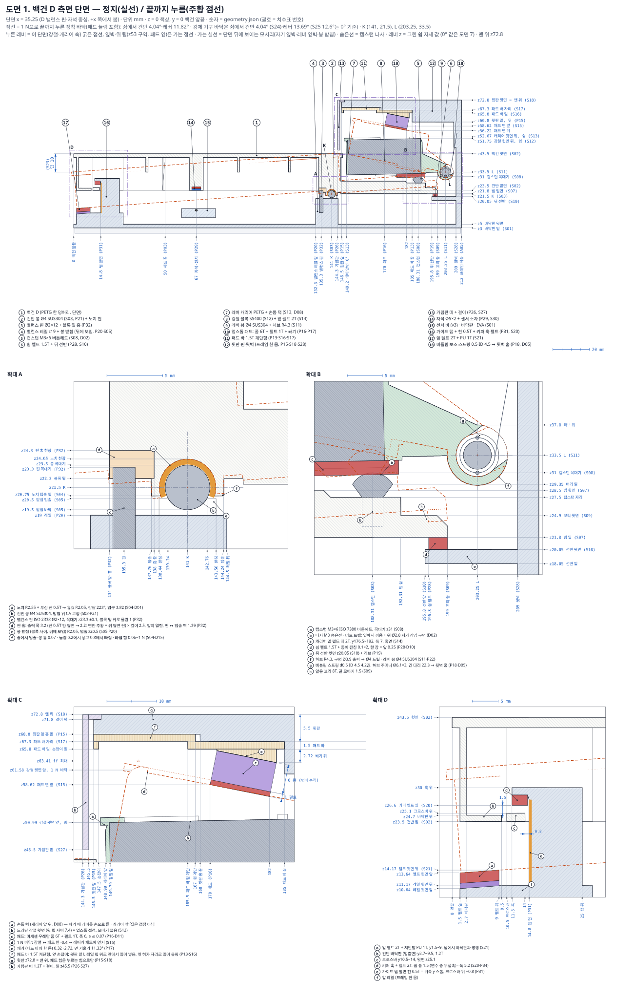</div><figcaption class="small muted">백건 D를 x35.25(밸런스 핀·자석 중심)에서 자른 측면. 실선 = 정지(레버 정착 쉼 각), 주황 점선 = 1 N으로 끝까지 누른 정착 바닥(쉼에서 건반 4.04°, 레버 11.82°; 강체 기구 바닥은 쉼에서 4.04°·13.69°, S25 12.6°는 0° 기준), 누른 레버는 단면(강철·캐리어 속)만 굵게, 옆벽·위 립은 가는 점선. r4: 업스톱은 윗판 밑 패드 바의 쐐기에 붙인 폼 6T + 펠트 1T 패드가 드러난 강철 윗면을 받음(레일·손나사·커버 없음, 맨 위 z72.8); 허브의 비틀림 스프링이 뒷벽 홈을 민다. 오른쪽 z·아래 y 좌표는 모두 geometry.json 값이고 괄호는 치수표 번호. 확대 A 봉·스냅 노치·핀, B 캡스턴·쉼·허브·스프링(접선 긴 다리), C 업스톱(패드·쐐기·패드 바 계단 y165.5/167·윗판·가림판), D 앞 멈춤·키퍼.</figcaption></figure><figure class="sheet" id="dwg2"><div class="cap"><span><b>도면 2 · 흑건 측면 단면 (C#)</b></span><a class="mono" href="dwg/d02_black_Csharp_side.svg" target="_blank" rel="noopener">크게 보기 ↗</a></div><div class="dwimg">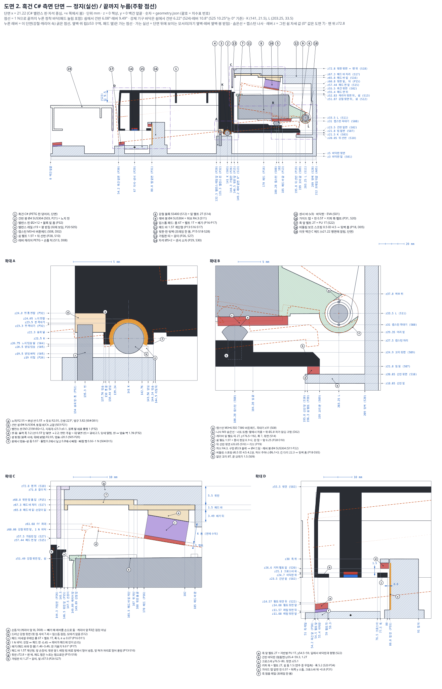</div><figcaption class="small muted">흑건 C#를 x21.22(밸런스 핀·자석 중심)에서 자른 측면. 실선 = 정지(레버 정착 쉼 각), 주황 점선 = 1 N으로 끝까지 누른 정착 바닥(쉼에서 건반 6.08°, 레버 9.49°; 강체 기구 바닥은 쉼에서 6.22°·10.8°, S25 10.25°는 0° 기준), 누른 레버는 단면(강철·캐리어 속)만 굵게, 옆벽·위 립은 가는 점선. r4: 업스톱은 윗판 밑 패드 바의 쐐기에 붙인 폼 6T + 펠트 1T 패드가 드러난 강철 윗면을 받음(레일·손나사·커버 없음, 맨 위 z72.8); 허브의 비틀림 스프링이 뒷벽 홈을 민다. 오른쪽 z·아래 y 좌표는 모두 geometry.json 값이고 괄호는 치수표 번호. 확대 A 봉·스냅 노치·핀, B 캡스턴·쉼·허브·스프링(접선 긴 다리), C 업스톱(패드·쐐기·패드 바 계단 y165.5/167·윗판·가림판), D 앞 멈춤·키퍼. 19 = 단면에 잘린 이웃 백건 C 헤드.</figcaption></figure>
<h3>하중 기준, 목표, 결과</h3><h4 class="sub4">0.1 하중 기준과 근거</h4>
<ul class="flow"><li><b>근거 1 — Askenfelt &amp; Jansson (1991)</b>, *From touch to string vibrations II: The motion of the key and hammer*, J. Acoust. Soc. Am. 90(5):2383–2393. KTH 강의 요약(https://www.speech.kth.se/music/5_lectures/askenflt/motions.html)에서 확인: 메조포르테에서 건반 최대 속도 약 0.3~0.5 m/s, 포르테에서도 1 m/s를 거의 넘지 않음, 해머 속도는 건반 속도의 약 5배(포르테 해머 약 5 m/s).</li><li><b>근거 2 — Goebl, Bresin &amp; Galembo (2005)</b>, *Touch and temporal behavior of grand piano actions*, J. Acoust. Soc. Am. 118(2):1154–1165 (https://iwk.mdw.ac.at/goebl/papers/Goebl-Bresin-Galembo_JASA2005_PianoAction.pdf 본문에서 확인): 2300여 음을 측정했고, 치는 터치(struck)의 최대 해머 속도는 거의 8 m/s(가장 센 타건: Steinway G6 7.5, Yamaha G6 7.8, Bösendorfer C4 7.6 m/s), 누르는 터치(pressed)는 5 m/s를 거의 넘지 않았다. 실제 연주에서 흔한 세기는 해머 0.7~1.25 m/s. 근거 1의 5배 비율로 나누면 가장 센 타건의 건반 속도는 7.8 / 5 ≈ 1.56 m/s이다.</li><li><b>PLAY 한계</b>: 건반 <b>앞끝</b> 속도 1.5 m/s(앞 펠트에 닿는 순간 = 행정 중 최대 속도). 한 건반, 굴린 화음과 동시 화음 6건반까지, 손가락을 떼거나 0.45~2 N으로 누른 채. 모든 기능 목표(DW·UW·연타·복귀·노치 들림·키퍼·유령·이음·센서·틈)를 지켜야 한다. 모델은 이 앞끝 속도가 되도록 타건 시작 속도를 풀었다(손가락 점에서 백 0.93, 흑 0.77 m/s). 여유 확인으로 손가락 점 1.5 m/s에서 시작하는 경우(앞끝 약 2.0 m/s)도 계산했다(‘여유 확인’ 행).</li><li><b>ABUSE 한계</b>: 한 건반 2.5 m/s, 6건반 동시 2.0 m/s(앞끝). 손상만 없으면 된다: 항복 없음, 10^4회 피로 한계 아래, 제자리 영구 이탈 없음(건반이 들렸다 다시 앉는 것은 됨), 조정 풀림 없음. 노치 들림은 빠짐 들림 0.80 mm의 절반(0.40)까지, 유령은 펌웨어가 걸러내면 된다.</li><li><b>PETG 응력 한계(r3 기준 유지)</b>: 층간(핀·벽처럼 세워 출력한 부분의 세로 인장) 매 음 5 MPa, 드문 하중(6건반 화음·ABUSE, 10^4회 이하) 15 MPa; 층 안(윗판 굽힘, 건반 빔·꼬리) 매 음 12 MPa, 드문 하중 25 MPa; 상시(쉼) 2 MPa.</li><li><b>펌웨어 유령 거름(U6, r4.1 고침)</b>: 같은 건반에서 앞끝 0.3 m/s 이상인 <b>어떤 음</b>이든 난 뒤 250 ms 안에 다시 눌림이 오고, 그 내려오는 속도가 앞 음 속도의 25 % 미만(최대 0.45 m/s)이면 버린다. r4.0의 문턱 1.2 m/s는 0.8~1.1 m/s 화음의 유령(내려옴 0.03~0.17 m/s)을 통과시켰다(검증자). 재무장선은 50 %. 대가: 진짜 연타라도 250 ms 안에 앞 음의 1/4보다 느리게 다시 치면 모든 세기에서 버려진다(예: 1.0 m/s 뒤 0.25 m/s 미만).</li></ul>
<h4 class="sub4">0.2 목표 대비 결과</h4>
<div class="tbl"><table><thead><tr><th>구간</th><th>목표 (모델 안의 판정식)</th><th>결과 (백 / 흑)</th><th>판정</th></tr></thead><tbody><tr><td>PLAY</td><td>DW 47~55 g (y13, 흑 앞+10), 기본 마찰 (백 / 흑)</td><td>51.9 / 51.0 (마찰 2배 56.5 / 56.1, 참고)</td><td>통과</td></tr><tr><td>PLAY</td><td>UW 20 g 이상 (쉼·바닥, 마찰 2배 바닥 포함)</td><td>42.7 / 40.8 (바닥 마찰 2배 최소 21.3)</td><td>통과</td></tr><tr><td>PLAY</td><td>DW 립 y0 47 g 이상 (백)</td><td>47.1</td><td>통과</td></tr><tr><td>PLAY</td><td>연타 13.3 Hz 이상 (1/(2·t50), 50 % 재무장, 1.2 s 정착 뒤 뗌)</td><td>16.2 / 18.8</td><td>통과</td></tr><tr><td>PLAY</td><td>연타, 마찰 2배 (비틀림 보조 스프링 기본; 끝 건반 A0·C8 포함)</td><td>15.2 / 17.7 (끝 건반 최소 14.9)</td><td>통과</td></tr><tr><td>PLAY</td><td>끝까지 복귀 60 ms 미만 (마찰 2배, 끝 건반 포함)</td><td>45.4 / 39.9 (마찰 2배 48.5, 끝 건반 최대 49.3)</td><td>통과</td></tr><tr><td>PLAY</td><td>노치 들림 0.20 이하 (들림으로만 판정; 0.5~1.5 m/s, 뗌·0.45~2 N, 한 건반·6건반 화음 자리 1.0~1.5 m/s 0.05 간격, 끝 건반, 합격선 재료; 접촉 하한 0.02)</td><td>0.161 (재료 조합 0.159, 화음 자리 0.135 / 합격선 0.149, 끝 건반 0.140); 모델 하한 v_floor 0.1 모서리: 한 건반 0.198, 화음 0.219 (18장); 합격선 밖 최악 0.203 / 화음 0.203</td><td>통과</td></tr><tr><td>PLAY</td><td>키퍼 무접촉 (합격선 재료, 화음 자리 포함)</td><td>최소 틈 0.52 (조합 0.34, 화음 0.51; v_floor 0.1 화음 0.27; 합격선 밖 최악 0.35 / 화음 0.34)</td><td>통과</td></tr><tr><td>PLAY</td><td>유령: 재무장선 50 %를 넘는 경우는 모두 펌웨어 거름이 버림 (한 건반·6건반 화음 자리 0.5~1.5 m/s 0.1 간격, 0.45~2 N, 끝 건반, 거름 문턱 0.3 m/s)</td><td>한 건반 1.5 m/s 최대 16 %; 284건 중 재무장 24건 모두 거름 (못 거른 것 0)</td><td>통과</td></tr><tr><td>PLAY</td><td>업스톱 이음 닫힘</td><td>이음 없음: 패드 → 패드 바 → 윗판 압축 (나사·예하중 없음)</td><td>통과</td></tr><tr><td>PLAY</td><td>센서 최소 간격 3.0 이상 (2.5 m/s 과다 누름)</td><td>4.76</td><td>통과</td></tr><tr><td>PLAY</td><td>모든 틈 ±0.3 공차 뒤 1.0 이상 (모듈, 끝 부속, 이음매)</td><td>1.01 (끝 부속 1.01 / 1.01, 이음매 너머 고정 부품 1.02 / 1.02; 이음 면 0.40 / 0.40 = 모듈 이음과 같은 0.4)</td><td>통과</td></tr><tr><td>PLAY</td><td>쉼 상시 응력 2 MPa 미만</td><td>0.50 MPa</td><td>통과</td></tr><tr><td>PLAY</td><td>매 음 층간 응력 5 MPa 미만 (핀-윗판 이음, 한 건반 1.5 m/s)</td><td>2.5 MPa</td><td>통과</td></tr><tr><td>PLAY</td><td>6건반 화음 층간 응력 15 MPa 미만 (드문 하중, r3 기준)</td><td>9.5 MPa (윗판 층 안 5.5)</td><td>통과</td></tr><tr><td>PLAY</td><td>숨은 빔·얇은 꼬리 매 음 12 MPa 미만 (층 안: 건반은 윗면이 베드)</td><td>빔 11.5, 꼬리 9.7 MPa</td><td>통과</td></tr><tr><td>PLAY</td><td>레버 봉 SUS304 Ø4: 6건반 화음 응력 &lt; 항복/1.5</td><td>65 MPa (항복 205, 풀림재 최소값)</td><td>통과</td></tr><tr><td>ABUSE</td><td>노치 들림 0.40 이하 (빠짐 0.80 / 안전율 2), 모든 재료 조합, 2.0 m/s 6건반 화음 자리 포함</td><td>0.178 (조합 최대 0.350, 화음 자리 0.202)</td><td>통과</td></tr><tr><td>ABUSE</td><td>항복 없음: 레버 봉 (2.0 m/s 6건반, 2.5 m/s 한 건반)</td><td>88 MPa &lt; 205</td><td>통과</td></tr><tr><td>ABUSE</td><td>피로 10^4회: 층간 15 MPa, 층 안 25 MPa 미만 (2.0 m/s 6건반)</td><td>핀 이음 12.9, 윗판 7.5 MPa</td><td>통과</td></tr><tr><td>ABUSE</td><td>숨은 빔·얇은 꼬리 25 MPa 미만 (층 안, 2.5 m/s)</td><td>빔 10.0, 꼬리 9.7 MPa</td><td>통과</td></tr><tr><td>ABUSE</td><td>제자리 이탈·조정 풀림 없음</td><td>패드 바는 압축, 조정은 인쇄 쐐기·PET 심·캡스턴(벤치)</td><td>통과</td></tr><tr><td>BUILD</td><td>레버를 건반보다 먼저: 모든 레버가 윗판 밑 제자리(레버 봉 선)에 들어감 (2D C-공간, 끝 부속 포함)</td><td>11 / 11 도달 (건반을 먼저 넣으면 흑 레버 막힘)</td><td>통과</td></tr><tr><td>BUILD</td><td>고정 부품끼리 겹침 없음 (따로 출력하는 부품, 모듈·끝 부속; r4.1: 패드 바 ↔ 윗판 2.5 mm²)</td><td>모듈 0, 끝 부속 0 / 0; 패드 바를 넣고 빼는 내내 윗판·레일과 최소 -0.01 (접촉 −0.01)</td><td>통과</td></tr><tr><td>BUILD</td><td>패드 쐐기·패드 ↔ 윗판 계단·레일 1.3 이상 (패드 바 뒤끝만 계단에 닿음)</td><td>쐐기 1.42, 패드 1.43 (끝 부속 1.43)</td><td>통과</td></tr><tr><td>BUILD</td><td>비틀림 스프링 조립: 코일이 허브 홈으로 들어가고, 긴 다리가 레버 전 범위에서 홈 안(면까지 0.2 이상), 뒷벽 홈에 아래로 들어감</td><td>레버 -31.3°~18.0°에서 여유 0.57; 다리는 보스 면에 z44.94(보스 밑 z47.0 아래)에서 닿고 홈(z47부터)으로 들어감</td><td>통과</td></tr><tr><td>BUILD</td><td>패드 바 빼기 (앞부분이 나온 21.5 mm부터 윗판에 밀어 올림): 공칭 1.3 이상, PET 심 3장 1.0 이상</td><td>공칭 1.30, 심 3장 1.10 (곧게만 당기면 끝 0.5 mm에서 -0.40)</td><td>통과</td></tr><tr><td>PLAY</td><td>r4.3 쉼 펠트가 USB 홈 옆에 42 %만 앉을 때 (F#, 두 색에 적용): 연타 13.3 Hz 이상(마찰 2배 포함), 복귀 60 ms 미만, 들림 0.20 이하, 키퍼 무접촉</td><td>연타 16.2 / 18.8 Hz (마찰 2배 최소 15.2), 복귀 45.4 / 39.9 ms (마찰 2배 최대 48.5), 들림 0.104 / 0.058, 키퍼 0.34 / 1.08</td><td>통과</td></tr><tr><td>BUILD</td><td>r4.3 USB-C 플러그(RP2040-Zero 핀 헤더 위, z10.7~18.3) ↔ 뒤 선반·리브·핀·뒷벽 1.3 이상</td><td>최소 1.30 (rear shelf); 선반 홈 x76.45~91.55, 리브 2.15, 핀 3.20, 뒷벽 개구 2.70</td><td>통과</td></tr><tr><td>BUILD</td><td>r4.3 제어 기판 부품(BRD-01)·부품 한계 ↔ 출력 프레임 1.3 이상, 리본(16심) 차선 양옆 1.3 이상</td><td>최소 1.30 (board components (&lt;= z20) ↔ fin); 핀 발 ↔ 제로 앞 모서리 1.30; 리본 1.32 / 1.36</td><td>통과</td></tr><tr><td>참고</td><td>유효 질량 m_eff</td><td>55.1 / 46.5 g (r3 68.9 / 64.7)</td><td>가벼운 레버 + 스프링</td></tr><tr><td>참고</td><td>앞/뒤 힘 비 DW(y90)/DW(y13)</td><td>2.52 (y90 130.9 g)</td><td>단계 0 느낌 판정</td></tr><tr><td>참고</td><td>마찰 2배 DW</td><td>56.5 / 56.1 g</td><td>55 g을 넘음 (r3도 55.9 / 55.8) — 18장</td></tr><tr><td>참고</td><td>1 N으로 누른 바닥 (레버가 패드에 먼저)</td><td>건반 앞이 펠트 위 +0.04 / +0.27 mm</td><td>2 N이면 펠트에 닿음</td></tr><tr><td>참고</td><td>모듈 맨 위 높이 (v3 z59, r3 커버 z78.0·머리 z80.7)</td><td>z72.80, 그 위에 아무것도 없음</td><td>≤ z74 목표 통과</td></tr><tr><td>참고</td><td>모듈 무게 (r3 2.03 kg)</td><td>1.39 kg</td><td>≤ 1.6 kg 목표 통과</td></tr><tr><td>참고</td><td>부품 수 / 모듈 (출력 + 구매)</td><td>32 + 86 = 118 (r3 76 + 173 = 249)</td><td></td></tr><tr><td>참고</td><td>필라멘트·출력 시간 (88건반, 서포트 포함)</td><td>6.65 kg · 443 h (r3 6.54 kg · 436 h)</td><td>윗판 서포트 때문에 약간 늘어남</td></tr><tr><td>참고</td><td>금속 (88건반)</td><td>5.10 kg (r3 9.52 kg)</td><td></td></tr><tr><td>참고</td><td>기본 구성 비용 변화 (한도 100만 원)</td><td>+43,400원 → 기본 626,619원 (r3 +130,400원)</td><td>한도 안</td></tr></tbody></table></div>
<h3>힘·관성·복귀</h3><div class="tbl"><table><thead><tr><th>항목</th><th>백 (D)</th><th>흑 (C#)</th></tr></thead><tbody><tr><td>캡스턴 y</td><td>188.31</td><td>180.28</td></tr><tr><td>건반 / 레버 질량</td><td>23.41 / 57.21 g (강철 53.69)</td><td>18.04 / 57.21 g</td></tr><tr><td>BW / DW / UW</td><td>47.3 / 51.9 / 42.7 g</td><td>45.9 / 51.0 / 40.8 g</td></tr><tr><td>마찰 (건반 봉 + 레버 봉 + 캡스턴 + 가이드)</td><td>4.57 = 0.88 + 1.19 + 0.58 + 1.93 g</td><td>5.11 = 1.08 + 0.48 + 2.07 + 1.48 g</td></tr><tr><td>스프링 몫 (DW에서)</td><td>11.2 g (스프링 없으면 DW 40.7)</td><td>10.4 g (40.6)</td></tr><tr><td>스프링 토크 쉼 / 바닥</td><td>4.19 / 5.95 N·mm</td><td>4.19 / 5.62 N·mm</td></tr><tr><td>행정 따라 DW (0 / 25 / 50 / 75 / 100 %)</td><td>51.9 / 53.4 / 54.2 / 54.3 / 53.7</td><td>51.0 / 51.2 / 50.8 / 49.9 / 48.6</td></tr><tr><td>행정 따라 UW</td><td>42.7 / 41.6 / 39.8 / 37.4 / 34.5</td><td>40.8 / 38.7 / 36.2 / 33.4 / 30.4</td></tr><tr><td>마찰 2배 DW / 바닥 UW</td><td>56.5 / 24.8 g</td><td>56.1 / 21.3 g</td></tr><tr><td>m_eff (건반 + 레버)</td><td>55.1 (8.8 + 46.4) g</td><td>46.5 (7.9 + 38.5) g</td></tr><tr><td>t50 / 끝까지 (1.2 s 정착 1 N에서 뗌)</td><td>30.8 / 45.4 ms → 16.2 Hz</td><td>26.6 / 39.9 ms → 18.8 Hz</td></tr><tr><td>마찰 2배</td><td>32.9 / 48.5 ms → 15.2 Hz</td><td>28.3 / 42.4 ms → 17.7 Hz</td></tr></tbody></table></div>
<p>백 립(y0) DW 47.1 g, y90 DW 130.9 g → 앞/뒤 비 2.52. 비틀림 스프링: 코일 강성 9.0 N·mm/rad(다리 포함 설계 8), C 10.0, 바닥에서 안지름 4.38(봉 Ø4와 반지름 여유 0.19).</p>
</section><section class="page" id="p-drawings" hidden><h2>도면 13장</h2><p class="lede">모든 치수는 4차 좌표 모델(geometry.json)에서 옮겼습니다. 실선은 쉬는 자세, 주황 점선은 끝까지 누른 자세입니다.</p><ol class="dtoc"><li><a href="#dwg1">1. 백건 측면 단면 (D)</a></li><li><a href="#dwg2">2. 흑건 측면 단면 (C#)</a></li><li><a href="#dwg3">3. 옥타브 모듈 평면도</a></li><li><a href="#dwg4">4. 모듈 가로 단면 (레버 구역)</a></li><li><a href="#dwg5">5. 백건 부품도</a></li><li><a href="#dwg6">6. 흑건 부품도</a></li><li><a href="#dwg7">7. 레버 캐리어 + 강철 블록 부품도</a></li><li><a href="#dwg8">8. 프레임 부품도</a></li><li><a href="#dwg9">9. 패드 바 + 업스톱 패드 + 가림판 띠 + 비틀림 스프링</a></li><li><a href="#dwg10">10. 끝 부속 (왼쪽 A0·A#0·B0, 오른쪽 C8) 평면</a></li><li><a href="#dwg11">11. 전체 배치 측면</a></li><li><a href="#dwg12">12. 건반 하나 빼기 순서</a></li><li><a href="#dwg13">13. 레버 봉 끝 마개 + 출력 공구</a></li></ol><figure class="sheet" id="dwg1"><div class="cap"><span><b>도면 1 · 백건 측면 단면 (D)</b></span><a class="mono" href="dwg/d01_white_D_side.svg" target="_blank" rel="noopener">크게 보기 ↗</a></div><div class="dwimg"></div><figcaption class="small muted">백건 D를 x35.25(밸런스 핀·자석 중심)에서 자른 측면. 실선 = 정지(레버 정착 쉼 각), 주황 점선 = 1 N으로 끝까지 누른 정착 바닥(쉼에서 건반 4.04°, 레버 11.82°; 강체 기구 바닥은 쉼에서 4.04°·13.69°, S25 12.6°는 0° 기준), 누른 레버는 단면(강철·캐리어 속)만 굵게, 옆벽·위 립은 가는 점선. r4: 업스톱은 윗판 밑 패드 바의 쐐기에 붙인 폼 6T + 펠트 1T 패드가 드러난 강철 윗면을 받음(레일·손나사·커버 없음, 맨 위 z72.8); 허브의 비틀림 스프링이 뒷벽 홈을 민다. 오른쪽 z·아래 y 좌표는 모두 geometry.json 값이고 괄호는 치수표 번호. 확대 A 봉·스냅 노치·핀, B 캡스턴·쉼·허브·스프링(접선 긴 다리), C 업스톱(패드·쐐기·패드 바 계단 y165.5/167·윗판·가림판), D 앞 멈춤·키퍼.</figcaption></figure><figure class="sheet" id="dwg2"><div class="cap"><span><b>도면 2 · 흑건 측면 단면 (C#)</b></span><a class="mono" href="dwg/d02_black_Csharp_side.svg" target="_blank" rel="noopener">크게 보기 ↗</a></div><div class="dwimg"></div><figcaption class="small muted">흑건 C#를 x21.22(밸런스 핀·자석 중심)에서 자른 측면. 실선 = 정지(레버 정착 쉼 각), 주황 점선 = 1 N으로 끝까지 누른 정착 바닥(쉼에서 건반 6.08°, 레버 9.49°; 강체 기구 바닥은 쉼에서 6.22°·10.8°, S25 10.25°는 0° 기준), 누른 레버는 단면(강철·캐리어 속)만 굵게, 옆벽·위 립은 가는 점선. r4: 업스톱은 윗판 밑 패드 바의 쐐기에 붙인 폼 6T + 펠트 1T 패드가 드러난 강철 윗면을 받음(레일·손나사·커버 없음, 맨 위 z72.8); 허브의 비틀림 스프링이 뒷벽 홈을 민다. 오른쪽 z·아래 y 좌표는 모두 geometry.json 값이고 괄호는 치수표 번호. 확대 A 봉·스냅 노치·핀, B 캡스턴·쉼·허브·스프링(접선 긴 다리), C 업스톱(패드·쐐기·패드 바 계단 y165.5/167·윗판·가림판), D 앞 멈춤·키퍼. 19 = 단면에 잘린 이웃 백건 C 헤드.</figcaption></figure><figure class="sheet" id="dwg3"><div class="cap"><span><b>도면 3 · 옥타브 모듈 평면도</b></span><a class="mono" href="dwg/d03_octave_plan.svg" target="_blank" rel="noopener">크게 보기 ↗</a></div><div class="dwimg">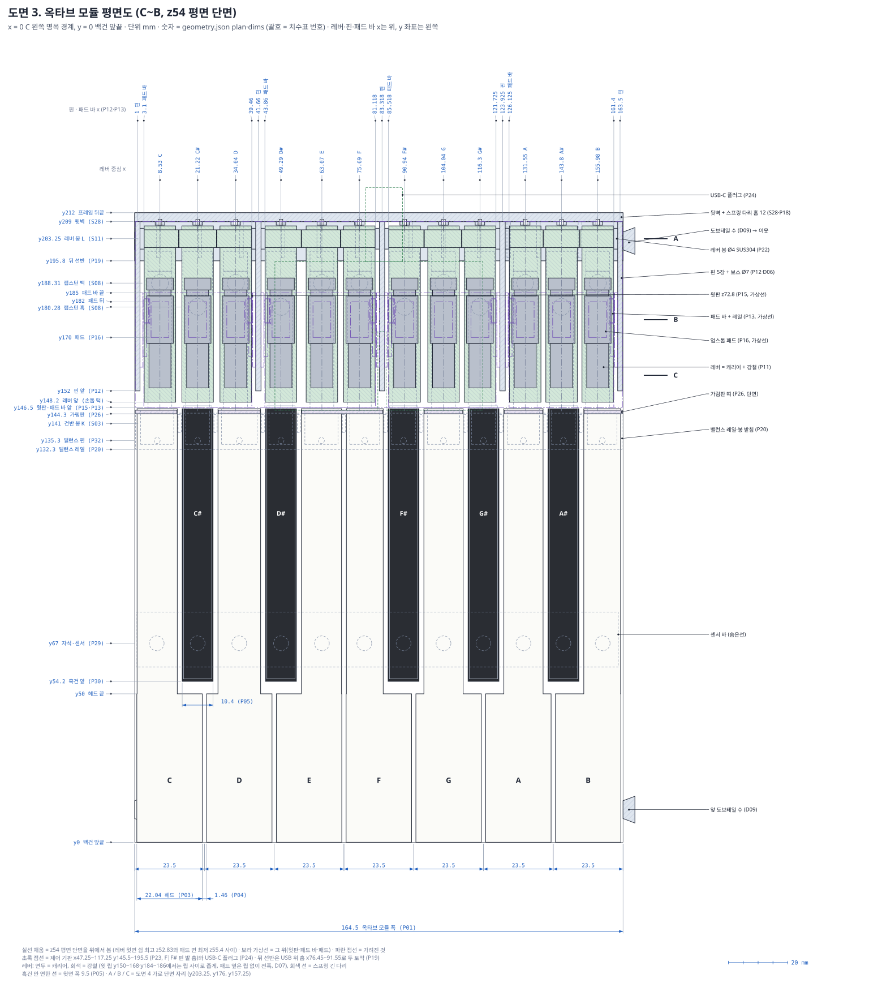</div><figcaption class="small muted">C~B 모듈을 z54(레버 윗면과 업스톱 패드 면 사이)에서 잘라 위에서 본 평면. 건반·레버(캐리어 + 윗 립 사이 강철)·핀·보스·뒷벽(스프링 다리 홈)·가림판 띠는 실선, 윗판·패드 바 4개·업스톱 패드 12개는 보라 가상선(r4: 레일·손나사·위치 핀 없음), 밸런스 레일·봉 받침·센서 바·캡스턴·자석·핀·리브는 파란 숨은선, 제어 기판(F|F# 핀 발 홈)·USB 플러그는 초록 점선. 앞은 피치·헤드 폭·틈, 위는 레버 중심·핀·패드 바 x, 왼쪽은 y 좌표. A·B·C는 도면 4의 가로 단면 자리. r4.2~4.3: 강철은 윗 립 두 구간에서만 좁게 보임, 뒷벽 스프링 홈 보스 12, 뒤 선반은 USB 위 홈 x76.45~91.55로 두 토막.</figcaption></figure><figure class="sheet" id="dwg4"><div class="cap"><span><b>도면 4 · 모듈 가로 단면 (레버 구역)</b></span><a class="mono" href="dwg/d04_module_cross_sections.svg" target="_blank" rel="noopener">크게 보기 ↗</a></div><div class="dwimg">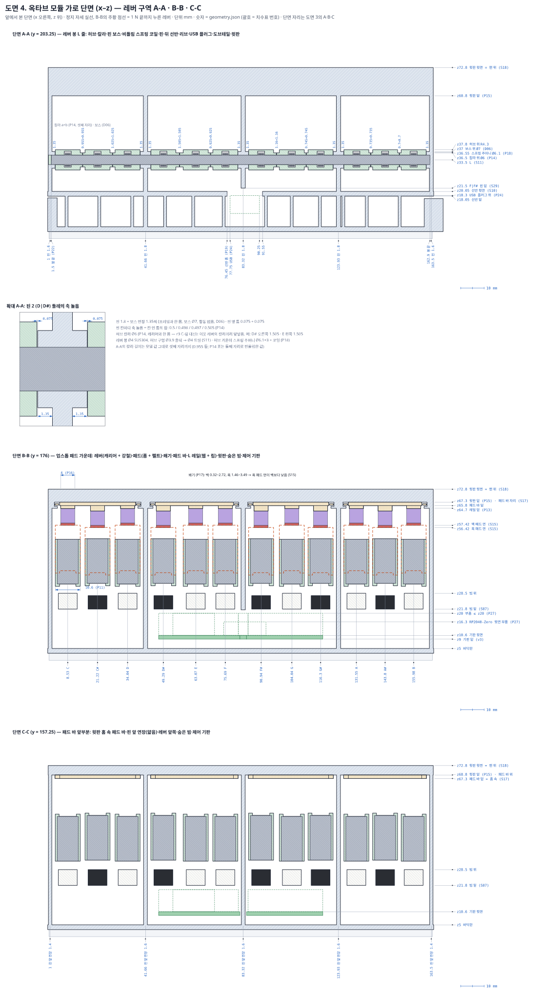</div><figcaption class="small muted">레버 구역 x–z 단면 셋. A-A(y203.25 레버 봉): 허브·허브 칼라(P14)·핀 보스(프레임, 황동 없음)·스프링 주머니와 코일·핀·뒤 선반·리브·USB 플러그·윗판, 확대로 핀 둘레 축 놀음; r4.3 선반 USB 홈 x76.45~91.55, 플러그 z10.7~18.3, F|F# 핀은 그 위에 매달림. B-B(y176 패드 가운데): 레버 캐리어·강철·패드(폼 + 펠트)·쐐기·패드 바·L 레일(웹 + 립)·윗판과 누른 레버(점선), 기판 위 RP2040-Zero·4067(초록 점선, P27). C-C(y157.25): 윗판 앞 홈 속의 패드 바 앞부분, 핀 앞 연장, 기판 홈을 지나 바닥에 선 F|F# 핀 발.</figcaption></figure><figure class="sheet" id="dwg5"><div class="cap"><span><b>도면 5 · 백건 부품도</b></span><a class="mono" href="dwg/d05_white_key_part.svg" target="_blank" rel="noopener">크게 보기 ↗</a></div><div class="dwimg">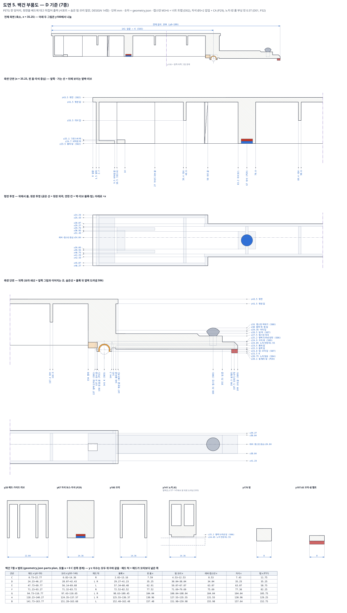</div><figcaption class="small muted">백건 D를 기준으로 한 부품도: 맨 위 전체 측면(축소, 전체 길이 199), 측면 단면(앞·뒤 두 토막, 모든 z·y 좌표; 블록 뒤 옆벽 도려냄 S06은 숨은선), 윗판을 투명하게 본 평면 투영(벽·리브·블록·빔 x), y 위치별 가로 단면 6개, 아래 표에 백건 7종의 x 범위. y·z 치수는 모든 백건에서 같다.</figcaption></figure><figure class="sheet" id="dwg6"><div class="cap"><span><b>도면 6 · 흑건 부품도</b></span><a class="mono" href="dwg/d06_black_key_part.svg" target="_blank" rel="noopener">크게 보기 ↗</a></div><div class="dwimg">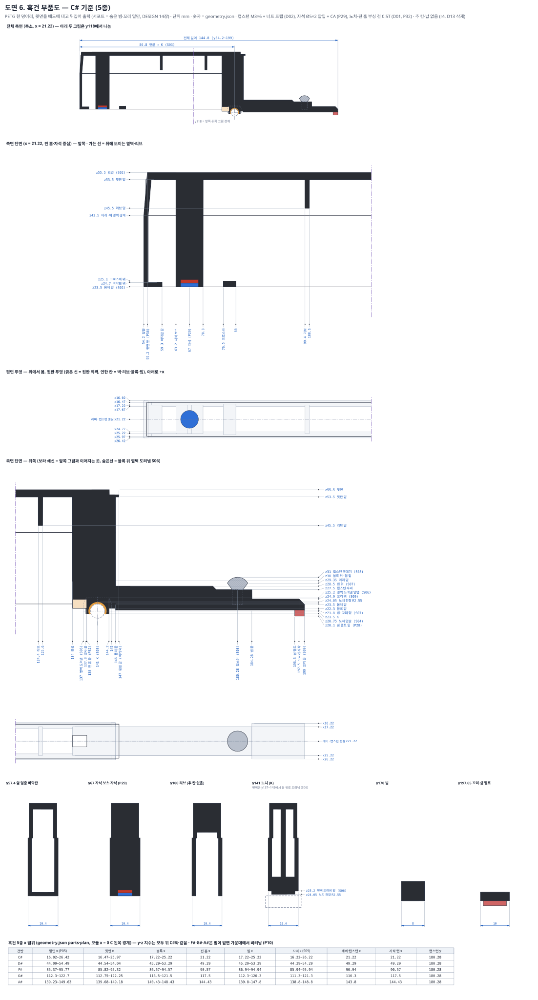</div><figcaption class="small muted">흑건 C#를 기준으로 한 부품도: 맨 위 전체 측면(축소, 전체 길이 144.8), 측면 단면(앞·뒤 두 토막, 모든 z·y 좌표; 블록 뒤 옆벽 도려냄 S06은 숨은선), 윗판을 투명하게 본 평면 투영(벽·리브·블록·빔 x), y 위치별 가로 단면 6개, 아래 표에 흑건 5종의 x 범위. y·z 치수는 모든 흑건에서 같다. r4: 추 칸·납·출력 뚜껑을 없앴다(노치 들림은 패드·펠트로 지킴, DESIGN 2.2), 가이드 탭 폭 6.9 (P31).</figcaption></figure><figure class="sheet" id="dwg7"><div class="cap"><span><b>도면 7 · 레버 캐리어 + 강철 블록 부품도</b></span><a class="mono" href="dwg/d07_lever_carrier_steel.svg" target="_blank" rel="noopener">크게 보기 ↗</a></div><div class="dwimg">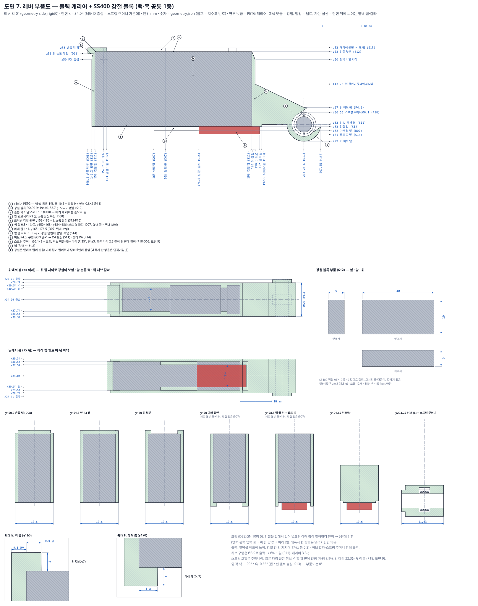</div><figcaption class="small muted">레버(백·흑 공통 1종)를 0°로 놓은 부품도. 위: 캐리어 중심 측면 단면(모든 z·y 좌표; 손톱 턱, 앞 R3 모서리, 드러난 강철 윗면 = 업스톱 접점, 립·펠트·허브 R4.3·구멍 Ø3.9 출력 → Ø4 드릴·스프링 주머니). 가운데: 위·밑에서 본 평면(윗 립 사이 강철 폭, 허브 칼라, 아래 립·펠트 띠)과 강철 블록 부품 9×19×40(모따기 없음). 아래: y 위치별 가로 단면 7개와 확대 E·F(E: 위 립 0.8×1를 립이 있는 y160에서, F: 아래 립 1×1를 y170에서; y170 단면은 아래 립만). 위 립은 y150~168·184~186 두 구간(패드 옆은 끊겨 강철 전폭이 보임); 허브의 스프링 다리 홈과 짧은 다리(P18).</figcaption></figure><figure class="sheet" id="dwg8"><div class="cap"><span><b>도면 8 · 프레임 부품도</b></span><a class="mono" href="dwg/d08_frame.svg" target="_blank" rel="noopener">크게 보기 ↗</a></div><div class="dwimg">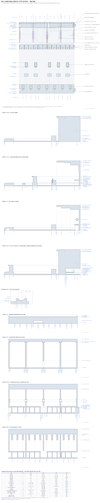</div><figcaption class="small muted">모듈 프레임 한 덩어리(r4: 옛 브리지를 앞으로 늘린 윗판 z72.8과 한 몸). 평면(윗판 밑을 위에서 봄: 앞 레일·탭·키퍼 훅·흑 멈춤 레일·밸런스 레일과 봉 받침·핀·보스·선반·리브·뒷벽 스프링 다리 홈·도브테일, 윗판·패드 바 레일은 가상선; r4.3 기판 부품·금지 칸·리본 차선·선반 USB 홈), 측면 단면 넷(핀 2, C# 중심, 패드 바 레일, F|F# 핀과 기판·USB), 봉 받침 확대, 가로 단면 넷(봉 줄 y141, 패드 줄 y176, 레버 봉 줄 y203.25 — 왼쪽 끝 핀 보스에 출력 마개, 오른쪽 끝 핀은 막힌 벽 1.2 (P22), 스프링 홈 줄 y208.8)과 형상 표. 황동 부싱·탭 띠·위치 핀·손나사 구멍은 없어졌다.</figcaption></figure><figure class="sheet" id="dwg9"><div class="cap"><span><b>도면 9 · 패드 바 + 업스톱 패드 + 가림판 띠 + 비틀림 스프링</b></span><a class="mono" href="dwg/d09_pad_bar_curtain_spring.svg" target="_blank" rel="noopener">크게 보기 ↗</a></div><div class="dwimg">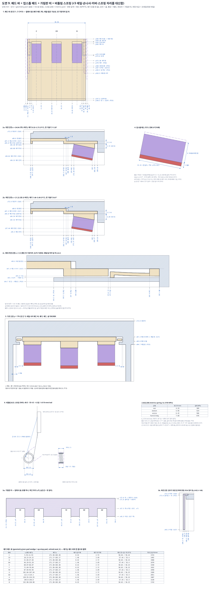</div><figcaption class="small muted">r4에서 새로 생긴 작은 부품: 1 패드 바(핀 칸마다 1개, 계단형 1.5T, 앞 손잡이, 쐐기 3개, 양 가장자리 잎 혀)를 밑에서 본 평면, 2a·2b 백·흑 쐐기 자리의 측면 단면(윗판·패드와 함께), 2c 레일 립 위의 잎 혀 확대, 3 레일 사이 가로 단면, 4 패드(펠트 1T + 폼 6T)와 PET 심 자리, 5a·5b 가림판 띠(흑건 노치, 윗판 앞 턱에 거는 걸이), 6 레버 허브의 비틀림 스프링(d0.5 · ID 4.5 · 4.2권 · k 8 N·mm/rad, 짧은 다리·허브 벽 홈·접선 긴 다리)과 상태 표, 7 쐐기·패드·자리 강성 표. 업스톱 힘은 패드 → 쐐기 → 패드 바 → 윗판으로 누르는 힘으로만 전해진다. r4.2: 패드 바 계단 y165.5/167(윗판 홈 끝 y168보다 앞), 뒤끝 = 윗판 계단 y185, L 레일 립 + 잎 혀(2c).</figcaption></figure><figure class="sheet" id="dwg10"><div class="cap"><span><b>도면 10 · 끝 부속 (왼쪽 A0·A#0·B0, 오른쪽 C8) 평면</b></span><a class="mono" href="dwg/d10_end_parts.svg" target="_blank" rel="noopener">크게 보기 ↗</a></div><div class="dwimg">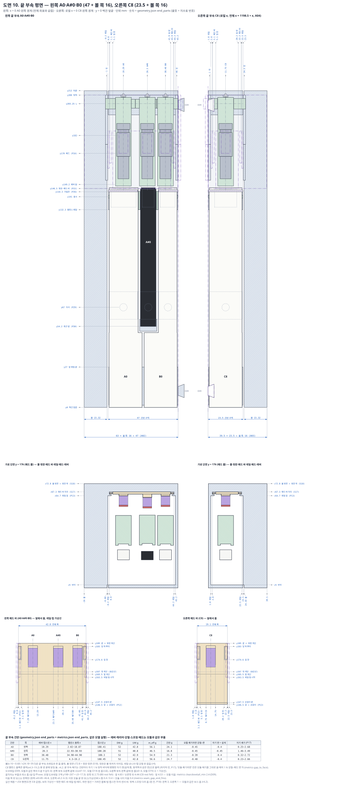</div><figcaption class="small muted">끝 부속 두 개의 평면(모듈과 같은 높이에서 잘라 위에서 봄): 건반·레버(모듈과 같은 캐리어+강철+스프링)·핀·보스·밸런스 레일·가림판 띠·볼(x-16~-0.68 / 24.18~39.5), 윗판·패드 바·레일·패드는 가상선. 위는 레버·핀·패드 바·레일 x, 아래는 폭. 이음 쪽에 도브테일(D09: 왼쪽 수, 오른쪽 암 홈)과 이웃 모듈 끝 핀·보스(가상선). 가운데 줄은 패드 줄 가로 단면(볼·윗판·레일·패드 바·패드), 그 아래 끝 패드 바 두 개를 밑에서 본 그림(전체 폭 42.8 / 19.1, 잎 창·잎 혀·쐐기·레일 립), 아래 표는 건반별 레버 x·캡스턴 y·DW/UW·자기 쐐기. r4: 볼 위 손나사·탭 강철 판·레일 없음. r4.2: 건반마다 자기 쐐기 면, 뒷벽 스프링 다리 홈(왼쪽 3·오른쪽 1)·센서 바(숨은선)를 그림.</figcaption></figure><figure class="sheet" id="dwg11"><div class="cap"><span><b>도면 11 · 전체 배치 측면</b></span><a class="mono" href="dwg/d11_overall_layout.svg" target="_blank" rel="noopener">크게 보기 ↗</a></div><div class="dwimg">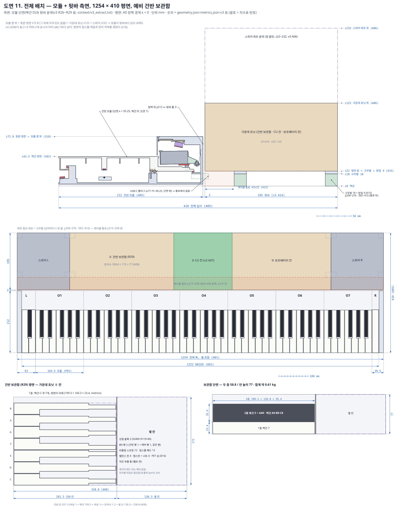</div><figcaption class="small muted">모듈 단면(프레임 212)과 틈 3, 뒷바 195(가운데 유닛 z22~122, 양 끝 스피커 파트 z22~232 윤곽, 아래 케이블 통로)로 전체 깊이 410. 모듈 맨 위(윗판 윗면) z72.8가 뒷바보다 낮음(r3 커버·손나사 머리 없음). 가운데는 1254 × 410 전체 평면(끝 부속 + 모듈 7 + 뒷바 칸), 아래는 예비 건반 보관함의 층 배치. r4.3: USB-C 플러그 z10.7~18.3(RP2040-Zero 핀 헤더 위), 케이블 통로 안. 보관함 옆 칸 = parts_list 예비(강철 블록·Ø4 봉·스프링·패드·핀·캡스턴), 캐리어·패드 바는 예비 없이 위치별 출력.</figcaption></figure><figure class="sheet" id="dwg12"><div class="cap"><span><b>도면 12 · 건반 하나 빼기 순서</b></span><a class="mono" href="dwg/d12_key_removal.svg" target="_blank" rel="noopener">크게 보기 ↗</a></div><div class="dwimg">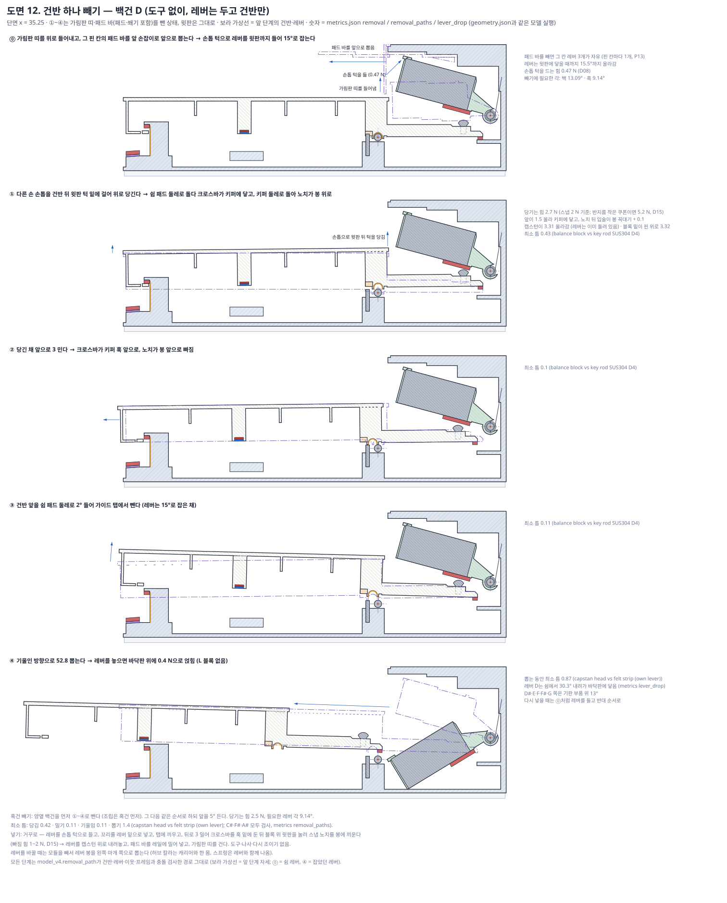</div><figcaption class="small muted">백건 D 하나를 도구 없이 빼는 다섯 단계: ⓪ 가림판 띠를 들어내고 그 칸 패드 바를 앞으로 뽑은 뒤 손톱 턱으로 레버를 15°로 듦, ① 건반 뒤 윗판 턱을 손톱으로 당겨 노치를 봉 위로, ② 앞으로 3 밀어 크로스바·노치를 뺌, ③ 건반 앞을 2° 들어 탭에서 뺌, ④ 52.8 뽑고 레버를 내려놓음(바닥판 위 0.4 N, L 서비스 블록 없음). 각 단계의 최소 틈과 흑건·넣기 순서는 아래 글.</figcaption></figure><figure class="sheet" id="dwg13"><div class="cap"><span><b>도면 13 · 레버 봉 끝 마개 + 출력 공구</b></span><a class="mono" href="dwg/d13_rod_plug_tools.svg" target="_blank" rel="noopener">크게 보기 ↗</a></div><div class="dwimg">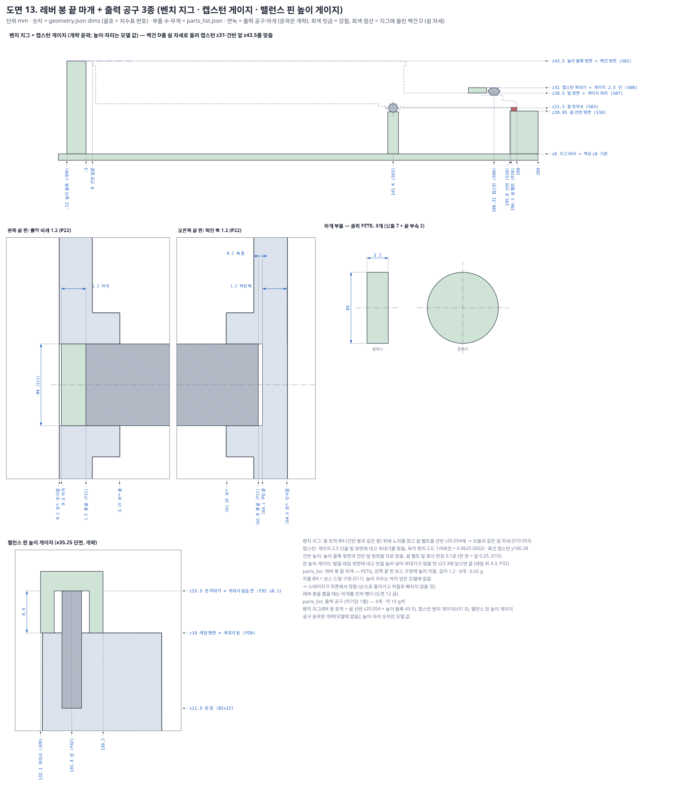</div><figcaption class="small muted">다른 도면에 없던 출력 부품 둘: 레버 봉 끝 마개(왼쪽 끝 핀 보스 구멍 Ø4에 눌러 끼우는 1.2 길이, 오른쪽 끝은 막힌 벽 1.2, P22)와 출력 공구 3종 — 벤치 지그(Ø4 봉 토막 K z21.5 + 쉼 선반 z20.054 + 높이 블록 z43.5), 캡스턴 게이지(빔 윗면 z28.5 위 2.5 단 → z31), 밸런스 핀 높이 게이지(레일 z19 위 4.3 → 핀 꼭대기 z23.3). 공구 윤곽은 개략이고 높이·자리만 모델 값.</figcaption></figure></section><section class="page" id="p-check" hidden>
<h2>검증 기록과 남은 문제</h2>
<p class="lede">설계 에이전트와 다른 에이전트가 물리와 형상 두 관점에서 다시 계산해 확인했습니다. 이번에는 속도를 위해 바뀐 부분과 지적 사항 위주로 검증했습니다. 수정은 세 번(검증 지적 4건, 도면을 그리다 드러난 형상 7건, 회로 세션의 USB 높이·기판 배치) 했고, 수정 확인은 한 번 했습니다.</p>
<div class="tbl"><table><thead><tr><th>회차</th><th>관점</th><th>치명</th><th>주요</th><th>사소</th></tr></thead><tbody><tr><td>1차</td><td>물리·동역학</td><td class=num>0</td><td class=num>2</td><td class=num>5</td></tr><tr><td>1차</td><td>형상·조립</td><td class=num>0</td><td class=num>2</td><td class=num>6</td></tr><tr><td>2차</td><td>수정 확인</td><td class=num>0</td><td class=num>0</td><td class=num>4</td></tr></tbody></table></div>
<h3>남은 문제</h3><div class="tbl"><table><thead><tr><th>분야</th><th>문제</th><th>처리 계획</th></tr></thead><tbody><tr><td>형상</td><td>레버 윗 스냅 립(0.8×1.0)이 끝까지 누른 자세에서 패드 옆 공간으로 들어와 틈 기준(1.0 mm)에 못 미친다. 립이 geometry.json에 없어 모델 검사에서 빠졌고, 도면을 그리다 드러났다.</td><td>다음 수정에서 립을 패드 구간(y160~172) 밖으로 줄이거나 옮기고, 립·핀 보스 구멍·봉 마개를 geometry에 내보내 검사에 넣는다.</td></tr><tr><td>형상</td><td>F·F# 건반은 USB 위 선반 홈 때문에 쉼 펠트가 폭의 59 %·42 %만 선반에 앉는다. 이 조건의 복귀 넘침 자세 스윕과, 약한 화음 자리(492 N/mm)에서의 동역학을 아직 돌리지 않았다.</td><td>그 두 경우를 추가로 돌린다. 지금 키퍼 여유는 보수적으로 0.34 mm로 닿지는 않는다.</td></tr><tr><td>형상</td><td>흑건 누른 자세 도형은 강체 기구 바닥(6.22°)으로 내보내져 있고, 1 N 정착 자세(6.08°)와 조금 다르다. 도면에는 설명을 달았다.</td><td>geometry 내보내기를 1 N 정착 자세로 바꾼다.</td></tr><tr><td>회로 연결</td><td>USB-C 케이블 몰드는 12.5 × 7.6 × 25 이하(z10.7~18.3)여야 한다. 선반 홈 가장자리와 틈이 정확히 1.30 mm다.</td><td>단계 0에서 실제 케이블을 10번 꽂고 빼 본다. 몰드가 크면 얇은 케이블을 쓴다.</td></tr><tr><td>회로 연결</td><td>RP2040-Zero 윗면 부품과 헤더 핀 끝은 z16.3 이하, 기판 뒤 띠(y194.5~195.5)는 z16.7 이하여야 한다(선반 밑면 z18.05).</td><td>회로 세션에 전달함. 조립 때 헤더 핀 끝을 자른다.</td></tr><tr><td>문서</td><td>치수표 반올림 방식이 곳곳에서 다르고(0.955 → 0.95 등), 출력 계획 글 일부와 보관함(A08) 글이 부품 목록보다 오래됐다. 출력 도구(벤치 지그, 캡스턴 게이지, 핀 높이 게이지)는 작업 높이만 있고 형상이 없다(도면 13은 개략).</td><td>다음 수정 때 함께 정리한다.</td></tr><tr><td>시험</td><td>업스톱 패드 폼의 실제 반발(e ≤ 0.07), 받침판 처짐(100 N에 0.07 mm 이하), 토션 스프링(주문 제작, 약 200원/개) 품질은 계산 가정이다.</td><td>단계 0 시편 시험으로 확인한다(DESIGN.md 17장).</td></tr></tbody></table></div>
<h3>r3의 문제 8건(major)과 10건(minor) — 무엇이었고 r4에서 어떻게 됐나</h3><p>r3 검증(<code>context/r3_findings.json</code>)은 물리·동역학 렌즈에서 major 2건, 기하·조립 렌즈에서 major 6건을 냈다. 아래 ‘문제’ 칸은 r3가 실제로 틀렸던 점, ‘r4’ 칸은 지금 모델의 값이다.</p>
<div class="tbl"><table><thead><tr><th>#</th><th>문제 (r3)</th><th>r4 해결</th></tr></thead><tbody><tr><td>1</td><td>업스톱 패드 높이(S15)를 건반이 아직 튀는 320 ms 시점에서 잡았다. 실제로 만들면 백 레버가 0.71 mm 먼저 패드에 닿아, 연타 13.1~13.2 Hz(마찰 2배 12.2~12.4, 목표 13.3 미달), 합격선 재료에서 백 노치 들림 0.237 mm와 키퍼 접촉, 흑 캡스턴·빔 하중 약 2배(검증자).</td><td>1 N으로 1.4 s 누른 <b>진짜 정착</b> 상태(끝에서 레버 각속도 1e-6 rad/ms 미만)에서 패드 면을 잡는다(S15). 모든 동역학·조정·끝 부속이 이 기준이다. 연타 16.2 / 18.8 Hz, 마찰 2배 15.2 / 17.7 Hz.</td></tr><tr><td>2</td><td>스냅 노치 판정식 ‘떼어내는 힘 &lt; 최소 빠짐 힘 4 N’이 모델 자신의 입술 법칙과 맞지 않았다: 그 법칙으로 빠짐 힘은 약 2.0 N, 뒤집힌 채 약 8.7 g 충격이면 빠진다(검증자).</td><td>판정을 <b>들림</b>으로만 바꿨다(RET-2): PLAY ≤ 0.20, ABUSE ≤ 0.40(빠짐 0.80의 절반). 결과: PLAY 한 건반 0.161 / 6건반 화음 0.149, ABUSE 한 건반 0.178 / 6건반 화음(2.0 m/s) 0.202. 빠짐 힘은 덜걱 방지로만 보고, 단계 0 반지름 쿠폰(R2.50~2.60)에서 1~2 N을 고른다.</td></tr><tr><td>3</td><td>끝 부속 이음을 만들 수 없었다: 이음 쪽 핀 보스가 모듈 핀과 0.95 mm 겹치고, 오른쪽 핀이 도브테일 홈을 막고, 도브테일이 내보내지지 않았고, 끝 부속 스윕에 이웃 모듈이 없었다(검증자).</td><td>이음 핀 보스를 안쪽으로만(왼쪽 x43.85~46.80, 오른쪽 x0.20~6.30), 이음 핀을 도브테일 홈 앞 1.3·위 1.7에서 멈춤, 앞 연장 0.1 얇게, 왼쪽은 수·오른쪽은 암 도브테일을 내보냄. 끝 부속 스윕에 이웃 모듈의 건반 3개·레버 3개·고정 부품을 넣었다: 최소 1.01 / 1.01(공차 뒤), 이음매 고정-고정 1.32 / 1.32.</td></tr><tr><td>4</td><td>흑건 가이드 탭 7.5 + 천 0.5T 양쪽 = 8.5가 흑건 낮은 벽 사이 8.0에 들어가 한쪽 0.25 억지끼움(걸림); 천이 없으면 놀음 ±0.25(검증자).</td><td>흑 탭을 6.9로 좁혀 천 양쪽 = 7.9, 벽 사이 8.0에서 ±0.05(RET-5). 흑-백 건반 틈 1.32. 천 두께는 3칸 맞춤 쿠폰으로 고름.</td></tr><tr><td>5</td><td>선택 보조 스프링을 만들 수 없었다: 자리 Ø7이 6.0 틈에 안 들어가고, 컵이 5.9 mm 움직여 33° 기울고, P18과 D05가 달랐다(검증자).</td><td>압축 스프링을 없애고 레버 봉 위 <b>비틀림 스프링</b>(A2)을 기본으로 달았다: SUS304-WPB d0.5, ID 4.5, 4.2권, 코일은 허브 주머니, 긴 다리는 뒷벽 홈. 응력 최대 676 MPa(Su의 31 %). 이 스프링이 DW 51.9 g 중 11.2 g을 낸다.</td></tr><tr><td>6</td><td>조정을 제자리에서 할 수 없었다: 캡스턴에 손이 닿지 않아 1/8회전마다 커버·손나사 8개·레일·건반을 빼고 24 h 뒤 다시 조여야 했다(검증자).</td><td>업스톱 시점은 그 칸 패드 바를 앞으로 빼서 패드 밑 PET 심 0.1로(한 장 = 건반 앞 0.18 mm), DW는 강철 앞 윗면 퍼티로(1 g = +1.22 g), 캡스턴은 건반을 넣기 전 벤치 게이지에서, 높이는 벤치 지그의 펀칭으로. 나사·드라이버·다시 조이기 없음.</td></tr><tr><td>7</td><td>계단 밸런스 블록의 입술 벽이 강철 밸런스 핀에서 0.19~0.26 mm뿐이고 스윕에서 빠져 있었다(검증자).</td><td>핀을 1.2 mm 앞으로(y135.3), 홈 y134.0~138.0, 블록 앞 y134.0, 레일 앞 y132.3(RET-4): 핀 ↔ 입술 벽 1.39, 홈 뒤끝 1.63(모든 자세).</td></tr><tr><td>8</td><td>치수표 D11에 패드 e ≤ 0.12(r2 값)가 남아 있었다. 합격선은 0.07이고, e 0.10~0.12 패드면 유령 97~99 %를 펌웨어가 못 거른다(검증자).</td><td>D11 = ‘패드 실효 e ≤ 0.07 (캡 모양 60 g 추 2.5 m/s 낙하, 설계 0.06), 25 % 압축 0.36 MPa, 패드 자리 강성 ≥ 830 N/mm(100 N에 0.12 mm), 6건반 화음 자리 ≥ 460 N/mm’(U7).</td></tr></tbody></table></div>
<p>minor 10건:</p>
<div class="tbl"><table><thead><tr><th>문제 (r3)</th><th>r4</th></tr></thead><tbody><tr><td>유령 격자가 0.6 N부터였다; 0.45~0.55 N 가벼운 누름에서 70~99 %, ‘오름 &lt; 60 %’ 거름은 못 잡음(검증자)</td><td>0.45·0.5·0.55·0.6·0.8·1·2 N 모두 계산. 한 건반 PLAY 최대 16 %, 6건반 화음 자리에서는 재무장하지만 새 규칙(속도 비)이 모두 버림: 재무장 24건, 못 거른 것 0건</td></tr><tr><td>노치 들림·키퍼 판정이 접촉 감쇠의 시작 속도 하한(V0_FLOOR 0.02)에 달렸다(검증자)</td><td>0.02와 0.1 둘 다 계산(7장 표). v_floor 0.1에서 PLAY 들림 0.189 / 0.120, 키퍼 0.41 / 1.09</td></tr><tr><td>손나사 예하중을 막는 것이 없었다(검증자)</td><td>손나사·접시 스프링 자체가 없다. 패드 힘은 패드 → 패드 바 → 윗판으로 압축만 전달</td></tr><tr><td>마찰 2배에서 DW·바닥 UW가 목표 밖(검증자: DW 56.0 / 55.3, 흑 바닥 UW 16.9)</td><td>바닥 UW(마찰 2배)는 스프링으로 24.8 / 21.3 g(≥ 20 통과). 마찰 2배 DW 56.5 / 56.1 g은 여전히 55 초과(18장)</td></tr><tr><td>흰 앞 펠트 ↔ 크로스바·리브 0.876(검증자)</td><td>펠트를 y1.5~9.0로 잘라 1.68(공차 뒤 1.38)</td></tr><tr><td>가림판 ↔ 꼬리 윗판이 노치 들림을 빼고 1.31(검증자)</td><td>가림판 밑 z45.5, 들림을 넣은 ff 자세로 1.61</td></tr><tr><td>예비 보관함 길이 여유 0(검증자)</td><td>건반 칸 201.3(1.0 + 199.3 + 1.0) + 칸막이 1.2 + 옆 칸 136.3</td></tr><tr><td>건반 빼기가 도구 없이가 아니었다(드라이버·고리), 흑건은 양옆 백건을 먼저 빼야 하고, 접시 스프링이 따로 놀고, L 블록을 잊으면 레버가 떨어짐(검증자)</td><td>도구 없음: 가림판·패드 바를 손으로 빼고, 레버는 손톱 턱으로(0.47 N), 건반은 손톱으로(2.7 N). 흑건은 양옆 백건 먼저(조립은 흑건 먼저). 나사·접시 스프링 없음. L 블록 없음: 건반이 빠진 레버는 바닥판(30.2°)이나 기판 부품(13.0°) 위에 0.41 N으로 놓인다</td></tr><tr><td>빼기 때 레버 각 창이 좁았다(0.9°)(검증자)</td><td>패드 바를 빼면 레버가 윗판까지 15.5°까지 올라감; 빼기에 필요한 각 13.1° / 9.1° → 창 2.4°</td></tr><tr><td>표·글 불일치: P10 오프셋 기준, 봉 멈춤 기둥 1.0×1.4, 커버 자석 튀어나옴, 높이 z78/80.7(검증자)</td><td>P10을 실제 꼬리 중심 기준 1.83로, 멈춤 기둥 1.0×2.0, 자석·커버판 없음, 맨 위 z72.80</td></tr></tbody></table></div>
<h3>1a. r4 검증 1회차 지적과 해결 (r4.0 → r4.1)</h3><p>지적마다 먼저 이 모델로 다시 계산해 보았다. 받아들인 것과 고친 방식, 받아들이지 않은 부분을 숫자로 적는다. 다시 돌린 범위: 한 모듈(대표 백 D·흑 C#, 끝 건반 A0·C8), PLAY 0.5 / 1.0 / 1.5 m/s × 뗌·0.45~2 N, ABUSE 2.5 m/s, 재료 공칭·합격선·최악, 6건반 화음 자리 1.0~1.5 m/s(0.05 간격)·유령 격자 0.5~1.5 m/s(0.1 간격). 옥타브 모듈은 모두 같아 되풀이하지 않았다.</p>
<div class="tbl"><table><thead><tr><th>#</th><th>지적 (검증자)</th><th>다시 계산 (이 모델)</th><th>판정</th><th>r4.1 해결과 결과</th></tr></thead><tbody><tr><td>물리 M1</td><td>유령 거름 문턱 1.2 m/s 때문에 0.8~1.1 m/s 6건반 화음의 0.45~0.6 N 누름 유령(재무장 50~101 %, 내려옴 0.03~0.17 m/s)이 걸러지지 않는다</td><td>r4.0 화음 자리(196 N/mm) 1.0 m/s 0.45 N 백 101 %, 0.5 N 99 % 재현(검증자 표와 같음)</td><td>수용</td><td>펌웨어만 고침: 문턱 1.2 → 0.3 m/s, 규칙 ‘250 ms 안, 앞 음 속도의 25 % 미만(최대 0.45)’. 새 화음 자리 492 N/mm에서 0.5~1.5 m/s × 0.45~2 N 격자 132경우: 재무장 13건, 모두 버림(한계와의 여유 최소 0.22 m/s). 전체 284경우 중 못 버린 것 0건.</td></tr><tr><td>물리 M2</td><td>기판 위 D#~G# 6건반 화음에서 노치 들림이 1.2~1.4 m/s에 0.216~0.238 (1.5 m/s의 0.126은 국소 최소); 무르고 감쇠 없는 자리(196 N/mm)가 원인</td><td>r4.0 자리 203 N/mm, 백 D 뗌: 1.3 m/s 0.226, 1.35 m/s 0.232, v_floor 0.1이면 1.5 m/s 0.266 (검증자 0.227 / 0.238 / 0.262와 같음)</td><td>수용</td><td>F\</td><td>F# 핀이 만능기판 앞쪽 홈(x81.92~84.72, y145.5~172.0, 부품 없음)을 지나 y152~171에서 바닥에 닿게 함 → 6건반 화음 자리 492 N/mm(가장 무른 화음은 이제 C~F), 한 건반 자리 최소 1490 N/mm. 1.0~1.5 m/s 0.05 간격 최대 들림: 공칭 0.135 / 0.062, 합격선 재료 0.149 / 0.081 (백 / 흑), 키퍼 최소 0.51. 대가: F\</td><td>F# 핀이 하중을 더 받아 핀 윗 이음 층간 응력이 6건반 PLAY 화음 9.5 MPa(r4.0 4.9), 2.0 m/s 화음 12.9 MPa(r4.0 6.7; 한계 15). 대안 ‘D#~G# 칸 틈 −0.6’은 기각: 공칭은 0.223, v_floor 0.1이면 0.282에 키퍼 −0.03(r4.1 탐색).</td></tr><tr><td>물리 m1</td><td>합격선 재료 + v_floor 0.1 한 건반 들림 0.205(묶어서 안 돌림); 흑건은 들림 0.06에서도 입술 모서리가 1.5~3.5 N으로 닿으니 ‘입술이 일하지 않음’은 틀림</td><td>r4.0 자리에서 0.205 재현; r4.1 자리에서 같은 조합 0.198 / 0.099; 흑 PLAY 입술 힘 2.55 N(최대 조합 5.26 N)</td><td>수용</td><td>묶은 조합을 표에 넣음(7.2). ‘입술이 일하지 않음’ 문구를 모두 지우고 노치는 들림으로만 판정(S04). 단계 0 시험 10에 흑건 입술 천 마모(PLAY 10^5회, 천 닳아 뚫림 없음) 추가. 형상 변경 없음.</td></tr><tr><td>물리 m2</td><td>모든 여유가 패드 실효 e ≤ 0.07에 달렸는데 그런 재료를 이름으로 대지 않았다</td><td>r4.1 자리에서 e 0.15: 백 들림 0.177, 0.45 N 유령 98 %, 흑 ABUSE 0.398; e 0.25: 0.207 / 100 % / 0.400</td><td>수용 (일부 남음)</td><td>후보를 이름과 자료값으로 적음: Sorbothane(점탄성 PU) 카탈로그 Lupke 반발 10~15 %(자유 낙하 e ≈ 0.32~0.39), 충격 에너지 흡수 최대 94.7 %(e ≈ 0.23) (https://www.sorbothane.com/technical-data/material-properties/). 곧 판 하나의 자유 반발로는 0.07에 못 미치므로 e는 레버 + 패드 + 펠트 면 + 자리 계에서 단계 0 시험 1로 먼저 잰다. 번호 붙인 대안(부품 추가 없음): ① e 0.10~0.15 → 틈 −0.60 / −0.65 + 폼 E 1.4: 들림 0.115 / 0.043, 흑 ABUSE 0.202, 연타 17.5 / 20.8 Hz. 18장 위험으로 남김.</td></tr><tr><td>물리 m3</td><td>제자리 조정(10장 8번)에 잴 수 있는 합격 기준이 없다</td><td>종이 띠 0.05가 앞 펠트 위에서 물리기 시작하는 누름 힘(백 틈 −0.30 / −0.40 / −0.50): 0.75 / 0.92 / 1.04 N</td><td>수용</td><td>12장 표에 넣음: 백은 0.05 종이 띠가 0.75 N에서 미끄러지고 1.04 N에서 물리면 합격, 흑은 0.96 / 1.43 N.</td></tr><tr><td>물리 m4</td><td>패드 바가 레일 안에서 FDM 놀음만큼 처져, 매번 들려 올라가 딸깍</td><td>레일과 바가 x로 겹치지 않아 모델에 바를 받치는 것이 없었음(확인)</td><td>수용</td><td>바 뒤 계단 양쪽에 출력 예하중 잎(0.6×4×8, 0.3 눌림 ≈ 0.25 N = 바 무게의 9배)이 바를 레일 립(도브테일 밑, 새로 내보냄)에 대고 윗판 쪽으로 밀어 올림; 단계 0 점검에 ‘바 상하 놀음 없음’. 부품 추가 없음. (r4.2: 잎과 립이 글로만 있었고 립이 0.2 두께·0.3 겹침이라 1c장에서 형상으로 다시 만듦)</td></tr><tr><td>물리 m5</td><td>글·값 불일치: 거름 상한 0.45 / 0.40, 자리 합격선 900 / 830, §1의 ABUSE 0.320(화음 값), S15 평행 기준</td><td>모두 확인</td><td>수용</td><td>상한 0.45 하나로, 자리 합격선 830 N/mm(0.12 mm) 하나로, §1 2번에 한 건반 / 화음을 나눠 적음, S15를 ‘패드 없는 1 N 정착 바닥(11.33°)과 평행, 실제 바닥 10.72°에서 0.61° 기움’으로.</td></tr><tr><td>기하 M1</td><td>윗판이 한 몸이 된 뒤 10장 순서(건반 먼저, 레버 나중)로는 흑 레버가 자기 흑건 위를 못 지나감(창 13.3 &lt; 단면 20), 스프링을 단 레버는 풀린 다리가 뒷벽을 뚫어 쉼 자세로 못 놓음</td><td>2D C-공간(0.25 mm, 피치 −40~60°): 건반을 다 넣으면 C#·D·E·G# 레버 모두 막힘; 건반이 없으면 11 / 11 도달</td><td>수용</td><td>10장을 ‘레버 먼저, 건반 나중’으로 다시 씀. 레버 넣기 C-공간 검사를 run_all에 넣음(모든 레버와 끝 부속 A0·A#0·C8 도달). 다리는 손가락으로 감아 홈 입구(0.5×45°)에 걸고 놓음. 건반은 이미 검사한 빼기 경로의 반대로 넣음.</td></tr><tr><td>기하 M2</td><td>패드 바를 뺄 때(모든 건반 빼기·심 조정) 흑 패드 아래 모서리 z55.40이 흑건 뒤끝 윗면 z55.5를 침(−0.10), 15~23 mm 사이 바를 받치는 것이 없음</td><td>r4.0 형상: 곧게 당기면 -0.10(검증자 −0.10과 같음, r4.1 탐색)</td><td>수용 (보완)</td><td>제안대로 흑건 윗면을 가림판 밑(y144.3~147)만 z54.1로(입술 0.6), 레일을 y160까지 앞으로 늘림(바가 레일 높이 유지). 그러나 곧게만 당기면 마지막 0.5 mm에서 패드의 비스듬한 아래 모서리가 흑건 윗면 턱 모서리(y144.3)를 0.02로 스침(심 3장 -0.27) — 검증자의 1.30은 가장 낮은 꼭짓점만 본 값. 그래서 절차를 ‘앞부분이 윗판에서 나온 21.5 mm부터 바를 윗판 홈 천장에 밀어 올린 채 뺌’으로 정하고 그 경로를 검사: 최소 1.30(심 3장 1.21). 대가: 레일 립 때문에 칸 가장자리 레버의 서비스 들어올림 17.75° → 15.5°(빼기에 필요 13.1°). (r4.2 모델로 다시: 곧게 당기면 -0.40 — 잎 돌기가 립 앞끝을 지나면 바가 립까지 0.3 내려앉으므로 — 밀어 올림 절차는 1.30 / 심 3장 1.10)</td></tr><tr><td>기하 m1</td><td>비틀림 스프링이 geometry에 없음; 건반 빠진 레버(−31.3°)는 자유각 −30°를 지나 다리가 0.8 홈에서 0.48 빠짐, 자유각 공차 ±5°면 빠질 수 있음</td><td>r4.1 보스 입구(y207.8) 기준 다리 끝: 공칭 1.25 안, 자유각 −25°이면 -0.65(음수 = 입구 앞)</td><td>수용</td><td>뒷벽 면에 출력 보스(레버마다, y207.8~209, 폭 3.2)를 두어 홈을 깊이 2.0(바닥 y209.8 그대로, 걸린 다리 그대로) + 입구 0.5×45°로. 공칭 −31.3°에서 풀린 다리 끝이 입구 안 1.25. 자유각 −25°(공차 끝)면 입구 앞 0.65에 있다가 레버가 올라갈 때 입구 경사가 다시 받아 줌. 주머니·짧은 다리 구멍·다리 방향·홈을 P18에 내보냄. 바닥 멈춤 기둥 안은 기각(레버 떨어짐 각이 바뀌어 검사한 빼기 경로가 바뀜).</td></tr><tr><td>기하 m2</td><td>캐리어 ‘1종’이 아니다(칼라가 위치마다 다름, 15종), 패드 바 6종, 예비 레버·바가 한 자리에만 맞음</td><td>위치 16곳, 서로 다른 칼라 짝 15종</td><td>수용</td><td>부품표에 칼라 표(위치별)와 패드 바 6종을 적고, 캐리어 옆벽·바 손잡이에 음 이름을 새김. 완성 예비 레버 2·예비 바 1은 없애고 위치별 파일로 필요할 때 출력(예비 강철 2·스프링 12는 유지).</td></tr><tr><td>기하 m3</td><td>패드 바 뒤끝 y183.0, 멈춤(윗판 계단)은 y183.5: 매 음 +y 힘으로 0.5 뒤로 밀려 백 틈 −0.40 → 약 −0.30; 도브테일 언더컷이 안 내보내짐</td><td>확인</td><td>수용</td><td>바를 0.5 늘려 y146.5~183.5(뒤끝이 계단에 닿음) → 모델 위치 = 실제 위치. 레일 립(언더컷) 내보냄. 조정 전 ‘바를 끝까지 밀어 넣기’ 명시. (r4.2: 계단과 바 뒤끝을 y185.0로 다시 옮김, 1c장)</td></tr><tr><td>기하 m4</td><td>패드와 캐리어 윗 립 사이 x 0.7, 스윕에서 뺀 짝; 공차가 쌓이면 립이 폼 옆을 물음</td><td>확인</td><td>수용</td><td>윗 립을 y168~184에서 끊음(강철은 y150~168·184~186 립과 앞벽이 잡음). 짝을 스윕에 넣음: 캐리어 옆벽 ↔ 패드 1.50.</td></tr><tr><td>기하 m5</td><td>C-링을 없앤 뒤 칸마다 축 놀음 0.32, 출력 면 9개</td><td>0.32 확인</td><td>수용</td><td>칼라마다 0.05 짧게 → 칸마다 놀음 0.50 / 0.50 / 0.50 / 0.51. 조립 때 레버가 제 무게로 자유롭게 도는지 확인, 아니면 칼라 면 사포질.</td></tr><tr><td>기하 m6</td><td>빠진 것·글 불일치: 레버 봉 마개, 출력 공구, 2.0 육각 렌치, 끝 부속 봉 길이, P26 걸이 립 y, §1·U6·§18 값</td><td>확인</td><td>수용</td><td>마개·출력 공구 3종·육각 렌치를 부품표에; 레버 봉 끝 부속 45.9 / 22.2; P26 = y145.5~148.0; 나머지 글 고침.</td></tr></tbody></table></div>
<h3>1c. 도면 작성자 형상 지적과 해결 (r4.1 → r4.2)</h3><p>도면 작성자는 r4.0 <code>geometry.json</code>(고침 1회차 전)으로 그렸다. 그래서 지적마다 먼저 r4.1 형상(<code>geometry.r4_1.json</code>)에서 다시 재고, r4.1에서 이미 고쳐진 부분은 숫자로 기각했다. 다시 돌린 범위: 한 모듈(옥타브 모듈은 모두 같다)과 끝 부속 이음매 — 고정 부품 겹침(0.02 mm 격자, 모듈·끝 부속), 스윕(모듈 1190쌍, 끝 부속 422 / 237쌍), 패드 바 넣고 빼기 경로, 레버 넣기, 서비스 들어올림, 스프링 다리 범위. 윗판 계단을 옮겨 패드 자리가 바뀌었으므로 동역학과 화음·유령 격자도 모두 다시 돌렸다(<code>run_all.py</code> 한 번).</p>
<div class="tbl"><table><thead><tr><th>#</th><th>지적 (도면)</th><th>다시 잰 값 (r4.1 형상)</th><th>판정</th><th>r4.2 해결과 결과</th></tr></thead><tbody><tr><td>도면 1</td><td>패드 바 앞부분(y146.5~169.5, z67.3~68.8)이 윗판 홈 끝(y167.5~168.0에서 z68.8 → 67.3)과 1.5×1.5 겹침(2.56 mm²), 모듈 4개·끝 부속 2개 모두</td><td>r4.1 geometry에서 0.02 mm 격자로 2.50 mm² (y167.54~169.48, z67.32~68.78), 모듈과 양 끝 부속 모두 — 바 계단(윗 y169.5 / 아래 y168.0)이 홈 끝 y168.0보다 뒤. r4.1의 패드 바 빼기 검사는 윗판·레일을 ‘설계 미끄럼’이라 건너뛰어 못 봄</td><td>수용</td><td>바의 계단을 앞으로: 윗 계단 y167.0(홈 끝 y168.0보다 1.0 앞), 아래 계단 y165.5. 윗판 홈 끝과 계단 면은 geometry에서 수직 면(0.5 mm 표본 경사 없앰). 겹침 검사(모듈 0, 끝 부속 0 / 0)와 ‘넣고 빼는 내내 바 ↔ 윗판·레일’ 검사(최소 -0.01 = 접촉)를 run_all에 넣음. 빼기 절차의 밀어 올림(21.5 mm)은 이제 윗 계단이 윗판 앞면보다 1.0 앞일 때라 윗판과 겹치지 않음(r4.1은 21.5 mm에서 앞부분이 윗판 앞 1.5 mm와 겹쳤음). 도면 작성자의 <code>_chk_ff.py</code>(사본, <code>work_r4r2/drafter_chk/</code>)로 새 geometry를 다시 보면 패드 바 겹침 0; 남는 것은 밸런스 핀 ↔ 밸런스 레일(15.2 mm², 핀을 압입하는 구멍이 모델에 없을 뿐인 설계 압입).</td></tr><tr><td>도면 2</td><td>바를 받치는 것이 없다: 레일은 1.0×1.7 블록, 바 옆 0.3 틈, 가장자리 밑 립 없음; P13의 ‘도브테일 폭 1.0, 높이 1.2’가 geometry에 없음</td><td>r4.0 형상 기준 지적. r4.1에는 립이 있었지만 0.6 폭 × 0.2 두께(z65.60~65.80), 바 밑 겹침 0.3 — ±0.3 공차면 0; 예하중 잎은 글로만; 레일 높이는 1.2가 아니라 1.7</td><td>일부 수용</td><td>L 레일: 웹 1.0(z64.70까지) + 립 1.3×0.8(z64.70~65.50, y163.5~185.0), 바 가장자리 밑 1.0 겹침(공차 뒤 0.7). 바 가장자리마다 출력 잎 혀 0.6×1.6×8(y175~183, 뿌리 뒤), 앞 끝 돌기가 립을 딛고 0.3 눌려 잎마다 0.10 N으로 바를 윗판 자리(z67.30)에 밀어 올림 — 모두 geometry 부품. 립은 y163.5부터(y160부터면 칸 가장자리 레버의 서비스 들어올림이 15.5° → 14.5°): 들어올림 15.5°. 두 잎의 힘 = 패드 붙은 바 무게(3.4 g)의 6.0배. 대가: 잎 상시 굽힘 8.2 MPa(공차 +0.3이면 16.5)가 2 MPa 크리프 선을 넘어 예하중이 풀릴 수 있음 — 반으로 풀려도 3.0배라 바는 자리에 남음; 17장 시험, 18장 위험. P13 글을 ‘L 레일 + 립 + 잎’으로 고침.</td></tr><tr><td>도면 3</td><td>쐐기·패드가 바 뒤끝(y183.0)보다 뒤로 나옴(y183.38 / 183.17); 윗판 계단 면(y183.5~184.0)까지 쐐기 D 0.24, 패드 D 0.45, 쐐기 C# 0.45, 패드 C# 0.72 — 1.0 미만</td><td>튀어나옴은 r4.1에서 이미 없음(바 뒤끝 y183.5 &gt; 183.38 / 183.17): 기각. 계단 틈은 r4.1에도 그대로: 내보낸 0.5 경사 면까지 0.235 / 0.443 / 0.444 / 0.712(도면 값과 같음), 설계 의도인 수직 면 y183.5까지는 0.12 / 0.33</td><td>일부 수용</td><td>윗판 계단과 바 뒤끝을 y183.5 → 185.0로(바 길이 38.5): 쐐기 뒤끝 ↔ 계단 1.62, 패드 1.62, 쐐기·패드 ↔ 레일 립 1.43(끝 부속 1.43). 바 뒤끝만 계단에 닿는다. 대가: 윗판이 두꺼운 곳이 1.5 뒤로 가서 가장 무른 패드 자리 1559 → 1492 N/mm, 6건반 화음 자리 492 N/mm — 동역학을 이 값으로 다시 돌렸고 모든 목표 통과(0.2장).</td></tr><tr><td>도면 4</td><td>손톱 턱(y148.2~149.2, z51.5~53.0)이 R3 앞 모서리와 떨어져 떠 있음(0.42~1.35), 따로 출력됨</td><td>r4.1 레버 형상에서 턱 ↔ 캐리어 거리 0.37 (턱은 사각형, 캐리어 앞 윗모서리는 R3 원호라 z51.5에서 y149.60, z52.5에서 y150.54). 질량 모델(lever_body)은 이미 모서리를 꽉 채워 계산하고 있었음</td><td>수용</td><td>턱을 밑면 z51.5 위의 R3 모서리까지 채운 한 몸 모양으로(앞면 y148.2 그대로): 턱 ↔ 캐리어 -0.036(≤ 0 = 붙음). 턱 바깥 윤곽은 그대로라 스윕·빼기 경로 값 변화 없음, 질량 모델 그대로.</td></tr><tr><td>도면 5</td><td>비틀림 스프링을 조립할 수 없다: Ø6.1×3.0 주머니가 R4.3 허브에 사방이 막힘, 긴 다리가 나갈 홈 없음(−2.97°~+17.75°, 약 21°), 짧은 다리 구멍 위치·지름 없음</td><td>r4.1 geometry의 허브는 속이 찬 R4.3 원(주머니도 없음); P18 글의 ‘지름 방향 입구’·‘구멍 Ø0.7’은 위치가 없고, 축 방향 짧은 다리는 지름 방향으로 코일을 넣으면 구멍에 들어갈 수 없음. 게다가 r4.1 뒷벽 홈(z50~58)은 보스(z47부터) 밑 3 mm를 남겨, 다리가 보스를 뚫고 지나감(접선 다리 z44.9, 반지름 다리 z48.3에서 보스 면에 닿음)</td><td>수용</td><td>허브의 주머니 구간(레버 x ±1.5)을 따로 내보냄: 레버 기준 35° 방향 평행 홈(축에서 +3.00 / −3.00, 폭 6.0)이 허브 벽을 뚫어 코일(OD 5.5)이 봉을 넣기 전에 들어감. 긴 다리는 코일 뒤쪽 접선(y205.71 z33.07) → 홈 바닥 끝(y209.55 z54.89), 레버 -31.3°~18.0° 내내 홈 안(면까지 최소 0.57 + 선 반지름 + 0.2). 짧은 다리는 2.5로 줄이고(r4.1 3) 접선에서 5.7° 바깥으로 굽혀 끝이 홈 위 면에 얹힘(면 끝까지 0.59 남음; 구멍 없음, 되돌림 토크가 이 면으로). 뒷벽 홈을 보스 밑면(z47)까지 열어 다리가 z44.94에서 보스 면을 지나 밑에서 홈으로 들어감. 스프링은 모든 레버 자세의 부품(‘spring X’)으로 geometry에 넣음.</td></tr><tr><td>도면 6</td><td>끝 부속에 스프링 다리 홈 없음; 끝 부속 쐐기가 모듈과 같음(14장은 A0 −0.05, B0 +0.01, C8 −0.08을 요구); 끝 부속 센서 바 없음(부품표는 2개)</td><td>r4.1 end_parts: 스프링 홈 보스는 있으나(왼 3, 오른 1) 홈과 평면이 없음; 쐐기 4개가 모듈 백·흑 쐐기와 똑같음; 센서 바 없음 — 모두 확인</td><td>수용</td><td>끝 부속 건반마다 자기 1 N 정착 바닥에 평행한 자기 패드 면(끝 부속 동역학이 쓰던 면 그대로)으로 쐐기를 만듦: A0 0.253~2.678(모듈 대비 -0.063 / -0.041), A#0 1.463~3.494(모듈 대비 +0.000 / +0.000), B0 0.321~2.723(모듈 대비 +0.006 / +0.004), C8 0.227~2.661(모듈 대비 -0.088 / -0.058); A0·C8 쐐기 얇은 끝이 0.3 아래(한 층 0.2 이상이라 출력 가능); 쐐기 뒤끝 ↔ 계단 1.61 / 1.61(왼 / 오). 센서 바: 왼쪽 x0.5~46.5(A#0 낮은 구간 x19.93~33.93), 오른쪽 x0.5~23.0. 스프링 홈(y207.8~209.8 z47~58)과 평면을 end_parts에 넣음. 끝 부속 스윕 최소 1.31 / 1.31, 겹침 0.</td></tr><tr><td>도면 7</td><td>치수표 글 불일치: P15 ‘y186 뒤 z60.80’ vs 계단 y183.5; P26 걸이 립 y145.5~147.0 vs 부품 y145.5~148.0; D07 두 번째 아래 립 ‘192.0~190.0’(거꾸로, 없는 부품); 패드 면 길이 12.24 vs 재단 6×12</td><td>P26은 r4.1에서 이미 y145.5~148.0(부품과 같음): 기각. P15(y186은 바 뒤끝 + 3을 쓴 글), D07(펠트 끝~강철 뒤를 거꾸로 씀), 패드(면 길이 = 12 / cos 11.33° = 12.24, 흑 12.17)는 확인</td><td>일부 수용</td><td>P15: 홈 끝 y168.0·계단 y185.0(둘 다 수직 면) 뒤 z60.80. D07: 아래 립은 y165~176.5 하나, 강철 뒤 아래는 뒤 바닥 y190.8~192.5. P16·부품표·D16: 패드·PET 심 재단 6 × 12.2(면 길이). P13·P18·S13·D05·D08도 새 형상대로.</td></tr></tbody></table></div>
<h3>1d. 제어 기판 인터페이스 — 회로 세션 결과와 해결 (r4.2 → r4.3)</h3><p>회로 세션(<code>hardware/pcb</code>)이 r4.1 형상을 기준으로 제어 기판을 설계했고(BRD-01 <code>board/BRD-01_control_board_placement.svg</code>, 좌표는 <code>src/sheets.py</code>), 기구에 닿는 결과 3건을 보냈다. 하나씩 r4.2 형상에서 다시 재고, 부품을 늘리지 않고 한 모듈(옥타브 모듈은 모두 같다)에서 고쳤다. 끝 부속에는 제어 기판·USB가 없고(O1·O7이 EXT로 읽음) 뒤 선반·뒷벽이 x74~94 밖이라 바뀐 것이 없다. 다시 돌린 범위: 고정 부품 검사(플러그·기판 부품 ↔ 프레임), 스윕(모듈 1190쌍, 끝 부속 422 / 237쌍), 윗판 FE(F|F# 핀 뒤쪽을 매단 채), 쉼 펠트 착지 민감도 동역학 1벌, 굴림·선반 응력; 모든 계산은 <code>run_all.py</code> 한 번.</p>
<div class="tbl"><table><thead><tr><th>#</th><th>회로 쪽 결과</th><th>다시 잰 값 (r4.2 형상)</th><th>판정</th><th>r4.3 해결과 결과</th></tr></thead><tbody><tr><td>회로 1</td><td>RP2040-Zero는 밑면에 칩·수정·LDO가 있어 평평하게 납땜할 수 없음 → 안쪽 2.54 구멍에 핀 헤더로 세움, 약 +1.3: USB-C 중심 z14.5(v3 z13.2), 플러그 몰드 윗면 약 z18.3</td><td>r4.2 플러그 외곽 z9.45~16.95. 새 외곽 z10.7~18.3(7.6 높이, 폭 ≤ 12.5, 길이 ≤ 25)로 재면: 얇은 선반(x75.6~92.4, 1.5T) 밑면 z18.55와 0.25(공차 뒤 -0.05), 선반까지 내려오던 F\</td><td>F# 핀 뒤쪽도 0.25, 리브 2.15, 뒷벽 개구(z21) 2.70; ‘RP2040 + 리셉터클 ≤ z15.5’ 구역(y190~195.5, 기판 전폭)은 새 리셉터클 윗면 z16.1을 담지 못함</td><td>수용</td><td>뒤 선반에 플러그 위 홈 x76.45~91.55(플러그 ±1.3)를 y195.8~209.0 앞뒤로 뚫음(홈 양옆 선반은 2.0T 그대로), F\</td><td>F# 핀은 선반에 내려오지 않고 발 뒤부터 뒷벽까지 z21.5에 매달림. 플러그 ↔ 선반 1.30, 리브 2.15, 핀 3.20, 뒷벽 개구 2.70(개구 x74~94 z5~21 그대로 — 키울 필요 없음), 뒤 케이블 통로(z0~22, v3) 안 3.7. RP2040 구역 → ‘RP2040-Zero 핀 헤더 위 x75~93 y172~195.5, PCB z11.9~12.9, 윗면 부품 ≤ z16.3(헤더 핀 끝은 자름)’ + 리셉터클 x79.53~88.47 z12.9~16.1. 부품 한계 z20은 y194.5까지, 선반 앞 띠 y194.5~195.5는 z16.7 이하(선반 밑면 z18.05와 1.3). 건반 빔·꼬리 ↔ 기판 부품 1.41(공차 뒤 1.11, 건반 E 얇은 꼬리 복귀 넘침), 건반 꼬리·쉼 펠트 ↔ 플러그 1.38(공차 뒤 1.08). 대가: F·F# 쉼 펠트가 홈 옆에 F 59 %, F# 42 %만 앉음(아래 동역학), 홈 옆 선반 응력 3.2 MPa(r4.2 얇은 선반 3.6), 굴림 되돌림/넘김 비(쉼) F 3.95 (r4.2 4.1), F# 1.77 (r4.2 15.9).</td></tr><tr><td>회로 2</td><td>새 배치(BRD-01): 4067 모듈 x53.3~71.1 × y152.4~193.0(세로, 핀 헤더 위 ≤ z20), 리본 2×8 x61.6~79.4 y148.6/151.1, EXT 패드 x95.3~108.0 y193.0(뒤, USB 터널 옆); 모두 r4.1 홈·금지 구역 x81.42~85.22 × y145.5~173.0 밖</td><td>배치는 금지 구역 밖(확인: 리본 패드 오른끝 x80.27, 4067 x71.1, 저항·점퍼 x97.8~). 그러나 r4.2 모델은 (a) 부품 구역 z20을 y190에서 끊고 그 뒤를 z15.5로 둬 4067 뒤끝 y190~193(z20)과 맞지 않음, (b) 제로 앞 모서리 y172가 핀 발 뒷면 y171과 1.0(공차 뒤 0.7), (c) 금지 구역 ±1.0은 0.1 얇은 핀 발과 1.1(공차 뒤 0.8), (d) 부품 구역 앞끝(기판 모서리 y145.5)이 밸런스 레일 뒷면과 1.0</td><td>수용</td><td>핀 발을 y152~170.7로(0.3 짧게; 만능기판 홈은 y172.0 그대로라 회로 쪽 변화 없음) → 제로 앞 모서리와 1.30. 금지 구역 ±1.2 = x81.22~85.42, y145.5~173.2(BRD-01 부품은 이미 밖, 옮길 부품 없음). 부품 구역 z20을 y145.8~194.5로(레일 뒷면과 1.3, 선반 앞 띠는 위). BRD-01 부품을 이름 붙인 구역으로 geometry에 넣음(RP2040-Zero, 리셉터클, 4067, J301 리본 2×8 + 16심, J302 EXT) — 스윕과 고정 부품 검사가 봄: 기판 부품 ↔ 프레임 최소 1.30(기판 부품(z20 이하) ↔ 핀). 윗판 FE: F\</td><td>F# 핀 뒤쪽이 이제 USB 터널 위에 매달려(r4.2 FE는 얇은 선반을 바닥처럼 봄) 패드 자리 E 1568 → 1550, F 1978 → 1932, F# 1996 → 1950, G 1607 → 1589 N/mm; 가장 무른 자리(C# 1492)는 그대로라 동역학 자리 1490 N/mm 그대로, 6건반 화음 자리 492 → 492 N/mm. 레버 봉 반력(최대 154 N)은 매달린 핀 → 뒷벽 이음(1.8 × 39.3)으로: 전단 2.17, 굽힘 1.91 MPa.</td></tr><tr><td>회로 3</td><td>리본 16심 모두 사용; EXT / JST-XH 순서 1 GND · 2~5 EXT1~4 · 6 3V3(빨강 끝선) — 모델이나 DESIGN.md가 옛 순서를 적었으면 글만 고칠 것</td><td>모델·DESIGN.md·parts_list 어디에도 리본·EXT 핀 순서 글이 없음(확인). 16심 × 1.27 = 20.32 리본이 J301 가운데(x70.48)에 놓이면 레일 밑 리본 차선 x60~82에서 양옆 0.32 / 1.36(공차 뒤 0.02)</td><td>일부 수용</td><td>순서 글은 고칠 것 없음. 리본 차선을 왼쪽으로 1.0 넓힘(x59~82, 레일 밑면 z10, 높이 5.0): 양옆 1.32 / 1.36. EXT 선(O1·O7만): J302 뒤 선반 밑 칸(x93.6~103.4)은 뒷벽이 막혀 나갈 곳이 없으므로, 선을 기판 <b>아랫면</b>에서 납땜해 기판 밑(z5~9, 높이 4.0)으로 USB 터널(x75.6~92.4)까지 보내고, 플러그 밑(z5~10.7, 높이 5.7)으로 뒷벽 개구를 지나 뒤 케이블 통로로 — 회로 쪽 확인 필요(18장).</td></tr></tbody></table></div>
<p><b>쉼 펠트 착지의 대가(동역학으로 확인).</b> 홈 가장자리가 F 쉼 펠트(x71.69~79.69)와 F# 쉼 펠트(x86.94~94.94)를 가로질러 F는 x71.69~76.45(59 %, 반력이 레버 선에서 -1.62), F#는 x91.55~94.94(42 %, 반력이 레버 선에서 +2.30)만 선반에 앉는다. 쉼 펠트 접촉 강성을 가장 작은 착지(42 %)로 낮춰(실효 e 0.35 그대로) 두 색 모두 다시 돌렸다: 연타 16.2 / 18.8 Hz(기본 16.2 / 18.8), 끝까지 복귀 45.4 / 39.9 ms(기본 45.4 / 39.9), PLAY 들림 0.104 / 0.058, 키퍼 0.34 / 1.08(기본 최소 0.52 — 무른 착지에서 복귀 때 앞이 더 튀어 가장 크게 줄어든 값이지만 무접촉), ABUSE 들림 0.101 / 0.178, 0.45 N 유령 16 % / 13 %(거름 대상). 정적으로는 펠트가 조금 더 눌려(Hertz 법칙, 쉼 반력 1.05 / 0.60 N) F 앞이 0.11, F# 앞이 0.09 mm 높게 쉬는데, 이것은 벤치 지그의 펀칭(0.1)으로 맞춘다. 착지 순간의 굴림 짝힘은 막대 반력의 되돌림을 빼고도 가이드 탭에 F 최대 2.57 N, F# 최대 1.73 N — 탭 천이 받는다.</p>
<p><b>검토했지만 쓰지 않은 안.</b> ① 만능기판을 1.3 내려(받침 짧게) 플러그를 r4.2 높이로 되돌림 — 회로가 준 높이(USB-C z14.5)를 바꾸고, 기판 밑 공간이 4.0 → 2.7이 되어 아랫면의 C301(리드형 적층 세라믹)·배선·헤더 핀 끝이 들어가기 빠듯함. ② 플러그 위만 선반을 올림 — F·F# 쉼 펠트가 플러그 폭 안(y196.3~199)에 걸려 있어 선반 윗면 z20.054를 바꿀 수 없음; 플러그 윗면 + 1.3 = z19.6이면 선반이 0.45 두께뿐. ③ 뒷벽 개구를 키움 — 필요 없음(2.70). ④ F·F# 쉼 펠트를 옮기거나 좁힘 — 건반 부품이 바뀌고, 착지 비율의 영향은 위 동역학에서 작음(연타·복귀 그대로, 키퍼 여유만 줄어듦).</p>
<h3>단계 0 시험 계획 (합격 / 불합격 숫자)</h3><p>시편: 3건반(백 D · 흑 D# · 백 E) 프레임 조각(윗판·패드 바 1 포함) + 봉 2 + 레버 3(강철·스프링) + 패드.</p>
<div class="tbl"><table><thead><tr><th>#</th><th>시험</th><th>방법</th><th>합격</th><th>불합격이면</th></tr></thead><tbody><tr><td>1</td><td>패드 반발 (가장 먼저)</td><td>레버(강철 + 캐리어)를 패드 바에 붙인 패드로 PLAY 속도에 휘둘러 되튐 각속도를 240 fps로 잼(계 전체 e). 후보: ① 미세셀 우레탄(PORON 계열) 6T + 펠트 1T, ② Sorbothane 계열 점탄성 PU 시트(카탈로그 Lupke 반발 10~15 %%, 곧 판 하나의 자유 낙하 e ≈ 0.32~0.39), ③ ① 위에 부틸 고무 1T</td><td>실효 e ≤ 0.07 (설계 0.06)</td><td>① e 0.10~0.15: 쐐기를 다시 뽑아 틈 −0.60 / −0.65 + 폼 E 1.4 (계산: e 0.15에서 백 들림 0.115, 흑 ABUSE 0.202, 연타 17.5 / 20.8 Hz, 0.45 N 유령 99 % / 76 %는 모두 거름). ② e &gt; 0.15: 다른 후보로(e 0.25면 백 들림 0.207, 흑 ABUSE 0.400로 한계 끝, 백 ABUSE 키퍼 -0.16)</td></tr><tr><td>2</td><td>패드 강성</td><td>패드를 강철 조각으로 눌러 힘-눌림</td><td>25 % 압축 0.36 MPa ± 30 % (E 0.7~1.4 MPa)</td><td>두께·등급 교체. E 0.7이면 흑 ABUSE 들림 0.311</td></tr><tr><td>3</td><td>패드 자리 처짐</td><td>윗판 C# 자리에 100 N, 그리고 C~F 6자리에 60 N씩, 다이얼 게이지</td><td>한 자리 ≤ 0.12 mm (830 N/mm, 설계 1490), 6자리 각 ≤ 0.13 mm (460 N/mm, 설계 492)</td><td>F</td><td>F# 핀이 기판 홈을 지나 바닥에 닿는지(틈 0) 확인; 핀 밑면 0.2 덧댐</td></tr><tr><td>4</td><td>앞 펠트</td><td>강철 공 낙하 + 누름</td><td>실효 e ≤ 0.22</td><td>PU를 두껍게</td></tr><tr><td>5</td><td>스냅 노치 반지름 쿠폰</td><td>R2.50 / 2.525 / 2.55 / 2.575 / 2.60에 천 0.5T, 빠짐 힘(용수철 저울)과 끼운 채 DW 변화</td><td>빠짐 1~2 N, DW 변화 ≤ 0.5 g</td><td>다음 반지름</td></tr><tr><td>6</td><td>탭 천 쿠폰</td><td>흑 탭 6.9 + 천 0.4 / 0.5 / 0.6T를 벽 사이 8.0에</td><td>걸림 없이 옆 놀음 ≤ 0.1</td><td>천 두께 바꿈</td></tr><tr><td>7</td><td>DW/UW</td><td>y13(흑 앞 + 10)에 저울·추</td><td>DW 47~55 g(립 y0 ≥ 47), UW ≥ 20 g</td><td>퍼티; 스프링 다리 홈 위치</td></tr><tr><td>8</td><td>비틀림 스프링</td><td>레버 하나로 쉼·바닥 토크</td><td>쉼 4.2, 바닥 5.9 N·mm ± 15 %</td><td>감는 각 조정(홈 위치)</td></tr><tr><td>9</td><td>복귀 시간</td><td>240 fps, 1 N 1 s 누른 뒤 뗌; 건반 뺀 레버를 다시 들어 스프링 다리가 홈에 다시 걸리는지</td><td>t50 ≤ 37.6 ms, 끝까지 ≤ 60 ms; 다리 10번 모두 다시 걸림</td><td>스프링 감는 각 +10°; 홈 입구 경사 키움</td></tr><tr><td>10</td><td>노치 들림 + 입술 천 마모</td><td>노치 옆 흰 점 240 fps, 1.5 / 2.5 m/s급 뗌·누름 10회, 6건반 화음 1.0~1.5 m/s; 흑건 하나를 PLAY 1.5 m/s로 10^5회(흑은 들림 0.06에서도 입술 모서리가 2.5 N 안팎으로 닿음)</td><td>PLAY ≤ 0.20, ABUSE ≤ 0.40, 빠지지 않음; 입술 천 닳아 뚫림 없음, 빠짐 힘 변화 ≤ 30 %%</td><td>패드·앞 펠트를 합격선 쪽으로; 천을 두꺼운 것으로</td></tr><tr><td>11</td><td>유령</td><td>1.5 / 1.0 / 0.8 m/s 뒤 0.45·0.6·1 N 누름, 6건반 화음 0.8~1.5 m/s, 거름 켜고 끔</td><td>거름(문턱 0.3 m/s)을 켜면 재타건 없음</td><td>거름 비율 25 → 30 %</td></tr><tr><td>12</td><td>패드 바 놀음·빼기</td><td>패드 바를 뒤 멈춤까지 넣고 위아래로 흔듦 — 넣은 직후와 40 °C 1주 뒤(잎 상시 굽힘 8.2 MPa의 크리프); 빼기를 흑 칸에서 10번(21.5 mm부터 밀어 올림)</td><td>상하 놀음 없음(잎이 바를 자리에 밀어 올림), 패드 펠트가 흑건에 닿은 자국 없음</td><td>잎 눌림 0.3 → 0.5 또는 잎 두께 0.8; 그래도 늘어지면 바 윗면을 사포로 맞춰 레일에 빡빡하게(손 맞춤)</td></tr><tr><td>13</td><td>스프링 넣기</td><td>캐리어 3개에 코일을 허브 홈으로 넣고 봉을 꿰고 긴 다리를 뒷벽 홈에 밑에서 넣음; 레버를 −31°~+18°로 돌림</td><td>짧은 다리가 홈 위 면에 얹힌 채, 긴 다리가 허브 홈 면에 끌리지 않음</td><td>홈 폭 6.0 → 6.4</td></tr><tr><td>14</td><td>종이 띠 시점</td><td>12장 기준(0.05 띠)</td><td>백·흑 모두 합격 띠 안</td><td>PET 심</td></tr><tr><td>15</td><td>피로</td><td>Z 방향 핀-윗판 이음 시편 반복 인장</td><td>PLAY 한 건반 2.5 MPa 10^6회, 화음 9.5 MPa 10^4회 균열 없음</td><td>이음 모서리 살 3 mm</td></tr><tr><td>16</td><td>윗판 출력</td><td>모듈 프레임 조각을 서포트 없이 브리지</td><td>핀 사이 39 mm 브리지가 처짐 ≤ 0.3</td><td>트리 서포트 (88 g)</td></tr><tr><td>17</td><td>느낌</td><td>직접 쳐 봄: y90 131 g, 1 N에서 흑 바닥 0.27 mm 부드러움</td><td>받아들일 만함</td><td>흑 틈 −0.45 → −0.3</td></tr><tr><td>18</td><td>90° 세움</td><td>모듈 조각을 뒤로 세웠다 눕힘</td><td>모든 건반 제자리(앞 높이 ±0.2)</td><td>쿠폰 반지름을 한 단계 작게</td></tr><tr><td>19</td><td>USB 케이블 맞춤 (r4.3)</td><td>뒤 선반 홈·뒷벽 개구가 있는 프레임 뒤 조각 + 핀 헤더에 세운 RP2040-Zero에 실제 USB-C 케이블을 10번 꽂고 뺌</td><td>몰드 ≤ 12.5 × 7.6(z10.7~18.3), 홈 가장자리·리브·핀과 1 mm 이상 떨어짐, 케이블이 뒤 통로로 꺾여도 리셉터클을 비틀지 않음</td><td>몰드가 가는 케이블(폭 ≤ 11)로 바꿈</td></tr></tbody></table></div>
<h3>남은 위험</h3><ul class="flow"><li><b>6건반 동시 화음의 유령은 펌웨어에 기댄다.</b> r4.1에서 화음 자리가 492 N/mm로 굳었어도 0.45~0.6 N 가벼운 누름은 기계적으로 재무장한다(7.4). 거름 규칙(문턱 0.3 m/s, 25 %, 250 ms)이 모두 버리지만(한계와의 여유 최소 0.22 m/s), 규칙을 끄면 유령이 난다. 대가: 250 ms 안에 앞 음의 1/4보다 느린 진짜 재타건은 모든 세기에서 버려진다.</li><li><b>모델 하한 v_floor 0.1 모서리.</b> 접촉 감쇠의 시작 속도 하한을 0.1로 두면 6건반 화음 1.45~1.5 m/s에서 들림 0.218(0.20 초과 0.018, 입술이 잠깐 닿음), 한 건반은 0.198. 공칭 하한 0.02와 모든 합격선 재료에서는 0.20 아래다. 단계 0 시험 10(화음 포함)으로 확인한다.</li><li><b>패드 재료값(가장 큰 위험).</b> 모든 결과는 계 실효 e 0.06(합격선 0.07), 폼 E 1.0 MPa 가정이다. 카탈로그 재료 하나의 자유 반발은 이보다 크다(Sorbothane Lupke 반발 10~15 % → e ≈ 0.32~0.39). e 0.15면 백 0.45 N 유령 98 %(거름), 흑 ABUSE 들림 0.398; e 0.25면 백 PLAY 들림 0.207(0.20 초과), 백 ABUSE 키퍼 -0.16(닿음), 흑 ABUSE 0.400(한계). 대안 ①(틈 −0.60 / −0.65 + E 1.4)은 e 0.15에서 들림 0.115 / ABUSE 0.202로 되돌린다. 단계 0 시험 1을 가장 먼저 한다.</li><li><b>만능기판 홈.</b> F|F# 핀이 바닥에 닿으려면 기판 앞쪽에 폭 2.8, 깊이 26.5의 홈을 내고 x81.22~85.42(y145.5~173.2, r4.3: 핀 면에서 1.2)에 부품·배선·리본 헤더를 두지 않아야 한다(BRD-01은 지킴). 기판 배치를 이미 만들었다면 이 띠를 옮겨야 한다. 홈을 못 내면 화음 자리가 196 N/mm로 돌아가 r4.0의 화음 들림(1.3~1.4 m/s 0.23)이 되살아난다.</li><li><b>제어 기판 인터페이스(r4.3, 회로 쪽 확인 필요).</b> (1) USB-C 케이블 몰드가 12.5 × 7.6 × 25(z10.7~18.3)보다 크면 선반 홈 가장자리와 1.3이 줄어든다 — 단계 0 시험. (2) RP2040-Zero 윗면 부품과 헤더 핀 끝은 z16.3 이하, 기판 뒤끝 y194.5~195.5 띠의 모든 것은 z16.7 이하여야 한다(선반 밑면 z18.05와 1.3). (3) EXT 선(O1·O7)은 아랫면 납땜 → 기판 밑 → USB 터널 플러그 밑으로만 나갈 수 있다(J302 뒤 선반 밑 칸은 뒷벽이 막힘). (4) 금지 구역 표기를 x81.22~85.42, y145.5~173.2로(부품 이동 없음). (5) F·F# 쉼 펠트가 F 59 % / F# 42 %만 앉아 두 건반이 약 0.1 높게 쉬므로 펀칭으로 맞춘다. (6) F|F# 핀 밑면(z21.5)이 발 뒤 y170.7에서 뒷벽 y209까지 38.3 mm 다리(bridge)가 된다(r4.2는 얇은 선반까지 25.8 mm) — 윗판 밑 트리 서포트와 함께 받쳐 출력한다.</li><li><b>마찰 2배 DW 56.5 / 56.1 g은 55 g을 넘는다.</b> r3와 같은 수준이다. 단계 0 마찰이 계산의 2배에 가까우면 캡스턴 펠트에 PTFE 필름, 가이드 천을 얇게.</li><li><b>흑건 바닥이 부드럽다.</b> 1 N에서 흑건 앞이 펠트 위 0.27 mm에 멈추고 2 N에서 닿는다(레버가 패드에 먼저). 느낌 판정에서 거슬리면 흑 틈을 −0.3으로(ABUSE 들림 연구값 0.30).</li><li><b>비틀림 스프링은 주문 제작이다.</b> 자유각 공차가 ±5°를 넘으면 건반 뺀 레버(−31.3°)에서 다리가 홈 입구 앞 0.65까지 나온다(입구 경사가 다시 받음; 단계 0 시험 9). 다리 끝 미끄럼 히스테리시스(DW−UW 약 +1 g, 연구 추정)는 모델에 없다.</li><li><b>패드 바를 곧게만 당기면</b> 끝에서 흑 패드 펠트 모서리가 흑건 윗면 턱과 -0.40(PET 심 3장이면 -0.70) — r4.2는 잎 돌기가 립을 떠나면 바가 0.3 내려앉기 때문. 절차(21.5 mm부터 밀어 올림)를 지키면 1.30.</li><li><b>패드 바 잎 혀의 크리프(r4.2).</b> 잎(0.6×1.6×8)이 0.3 눌린 채 8.2 MPa(공차 +0.3이면 16.5)로 늘 굽어 있어 2 MPa 크리프 선을 넘는다. PETG가 풀리면 예하중이 줄어든다: 두 잎의 힘은 처음에 패드 붙은 바 무게의 6.0배라 반으로 풀려도 3.0배, 83 % 넘게 풀려야 바가 0.3까지 처져 딸깍할 수 있다(동역학·틈에는 영향 없음, 소리만). 2 MPa 아래로 낮추면 휨이 0.01 mm대라 FDM 공차를 못 받는다. 단계 0 시험(40 °C 1주)으로 보고, 늘어지면 잎 두께 0.8 또는 손 맞춤.</li><li><b>끝 부속 쐐기 얇은 끝(r4.2).</b> A0 0.25, C8 0.23로 설계 최소 0.3 아래다(한 층 0.2 이상이라 출력은 됨). 출력이 안 되면 끝 부속 패드 바의 그 건반 자리만 바 밑면을 0.1 올려(바 1.4T) 쐐기를 0.1 두껍게 한다 — 패드 면은 그대로.</li><li><b>윗판 밑 서포트 88 g/모듈.</b> 핀 사이 브리지 출력이 되면 없앨 수 있다.</li></ul>
</section><section class="page" id="p-parts" hidden>
<h2>부품과 비용</h2>
<p class="lede">부품마다 판매처 가격, 더 싼 대안, 사용 안함은 <a href="#cost">07 재료·절감 선택</a> 탭에서 고를 수 있습니다.</p>
<h3>부품 — 개수와 질량 (<code>parts_list.json</code>)</h3><div class="tbl"><table><thead><tr><th>부품</th><th>종류</th><th>사양</th><th>모듈당</th><th>88건반 전체 (예비 포함)</th><th>개당 질량 g</th><th>비고</th></tr></thead><tbody><tr><td>백건 C·D·E·F·G·A·B (+ 끝 A0·B0·C8)</td><td>출력</td><td>PETG, 7종 + 끝 3종, 윗면을 베드에, 스냅 노치 R2.55 + 천 0.5T, 밸런스 핀 홈 y134.0~138.0</td><td>7</td><td>62</td><td>21.69</td><td>88건반 52 + 예비 10</td></tr><tr><td>흑건 (4종: C#·D#은 같음, + 끝 A#0)</td><td>출력</td><td>PETG, 납·추 칸 없음, 가이드 탭 6.9</td><td>5</td><td>42</td><td>16.78</td><td>88건반 36 + 예비 6</td></tr><tr><td>레버 캐리어 (위치 16곳, 칼라 15종)</td><td>출력</td><td>PETG, 폭 10.6, 허브 Ø3.9→Ø4.0 드릴, 허브 칼라 일체(왼/오 길이가 위치마다 다름: C 0.00/0.95; C# 0.95/1.02; D 1.02/0.00; D# 0.00/1.50; E 1.50/0.93; F 0.93/0.00; F# 0.00/1.16; G 1.16/0.74; G# 0.74/0.00; A 0.00/0.73; A# 0.73/0.70; B 0.70/0.00; A0 0.00/2.62; A#0 2.62/0.70; B0 0.70/0.00; C8 0.00/0.00), 스프링 주머니 Ø6.1×3.0 + 코일·다리 홈(35° 방향, 폭 6.0), 손톱 턱(R3 모서리를 채움), 윗 립은 y168~184에서 끊김, 옆벽에 음 이름 새김</td><td>12</td><td>88</td><td>3.29</td><td>예비 없음: 위치별 파일로 필요할 때 출력 (20분)</td></tr><tr><td>프레임 (모듈)</td><td>출력</td><td>PETG, 윗판 z72.80(패드 바 L 레일 8: 웹 1.0 + 립 1.3×0.8), 핀 5·보스(F\</td><td>F# 핀은 기판 홈으로 바닥 y152~170.7, 그 뒤 z21.5부터 매달림), 밸런스 레일(리본 차선 x59~82), 뒤 선반·리브(USB 플러그 위 홈 x76.45~91.55), 뒷벽(USB 개구 x74~94 z5~21, 스프링 홈 보스 12, 홈 z47~58 밑이 열림)</td><td>1</td><td>7</td><td>291.9</td><td>서포트 88 g 별도</td></tr><tr><td>끝 부속 프레임 (왼쪽 A0~B0, 오른쪽 C8)</td><td>출력</td><td>같은 단면 + 볼(cheek), 이음 핀 보스 한쪽, 도브테일 (왼쪽 수, 오른쪽 암), 스프링 홈 보스 (왼쪽 3, 오른쪽 1), 패드 바 L 레일 2</td><td>0</td><td>2</td><td>95.9</td><td>왼쪽 1 + 오른쪽 1</td></tr><tr><td>패드 바 (6종: 모듈 칸 1~4 + 끝 부속 왼·오)</td><td>출력</td><td>PETG 1.5T 계단형(윗 계단 y167.0, 아래 계단 y165.5), 길이 38.5(뒤 멈춤까지), 쐐기 3개(백 0.32~2.72, 흑 1.46~3.49; 끝 부속은 건반마다 자기 면), 앞 손잡이(칸 이름 새김), 양쪽 가장자리 예하중 잎 혀 0.6×1.6×8 (0.3 눌림, 레일 립 위)</td><td>4</td><td>30</td><td>2.89</td><td>모듈 28 + 끝 부속 2; 예비는 파일</td></tr><tr><td>레버 봉 끝 마개</td><td>출력</td><td>PETG, 왼쪽 끝 핀 보스 구멍에 눌러 끼움, 길이 1.2</td><td>1</td><td>9</td><td>0.05</td><td>모듈 7 + 끝 부속 2</td></tr><tr><td>출력 공구 (악기당 1벌)</td><td>출력</td><td>벤치 지그(Ø4 봉 토막 + 쉼 선반 z20.054 + 높이 블록 43.5), 캡스턴 벤치 게이지(z31.0), 밸런스 핀 높이 게이지</td><td>0</td><td>3</td><td>15.0</td><td>악기당</td></tr><tr><td>육각 렌치 2.0</td><td>공구</td><td>M3 ISO 7380 캡스턴 돌림 (벤치에서만)</td><td>0</td><td>1</td><td>10.0</td><td>악기당</td></tr><tr><td>가림판 띠</td><td>출력</td><td>PETG 1.2T, z45.5(흑 노치 z57.5)~z72.80, 윗판 앞 턱에 걸침</td><td>1</td><td>9</td><td>6.3</td><td>모듈 7 + 끝 부속 2</td></tr><tr><td>센서 바</td><td>출력</td><td>v3 (흑 낮은 구간 ±7.0); 끝 부속: 왼쪽 x0.5~46.5 (A#0 낮은 구간), 오른쪽 x0.5~23.0</td><td>1</td><td>9</td><td>17.0</td><td>모듈 7 + 끝 부속 2 (v3 단면)</td></tr><tr><td>강철 블록 SS400 9T×19×40</td><td>구매</td><td>평철 9T×19를 40으로 절단(모따기 없음), 캐리어에 스냅</td><td>12</td><td>90</td><td>53.69</td><td>88 + 예비 2</td></tr><tr><td>건반 봉 SUS304 Ø4</td><td>구매</td><td>h9, 길이 161.4 ± 0.2 (끝 부속: 왼쪽 약 45, 오른쪽 약 21)</td><td>1</td><td>10</td><td>16.08</td><td>모듈 7 + 끝 2 + 예비 1</td></tr><tr><td>레버 봉 SUS304 Ø4</td><td>구매</td><td>h9 (풀림재 항복 205 MPa로 충분), 길이 161.4 ± 0.2 (끝 부속: 왼쪽 45.9, 오른쪽 22.2) — 건반 봉과 같은 4 m 봉</td><td>1</td><td>10</td><td>16.08</td><td>모듈 7 + 끝 2 + 예비 1</td></tr><tr><td>밸런스 핀 ISO 2338 Ø2×12</td><td>구매</td><td>SUS, y135.3, 출력 높이 게이지로 꼭대기 z23.30</td><td>12</td><td>92</td><td>0.3</td><td>예비 4</td></tr><tr><td>캡스턴 M3×6 ISO 7380 + M3 너트</td><td>구매</td><td>SUS 버튼헤드, 너트 트랩, 벤치 게이지로 높이 z31.0</td><td>12</td><td>92</td><td>0.95</td><td>예비 4 (각 2개 부품)</td></tr><tr><td>비틀림 보조 스프링</td><td>구매</td><td>SUS304-WPB d0.50, ID 4.5, 4.2권, 짧은 다리 2.5 (접선, 5.7° 바깥으로 굽힘) / 긴 다리 22.3 (접선, 축에서 끝까지), k_t 8 N·mm/rad, 30° 감아 설치</td><td>12</td><td>100</td><td>0.15</td><td>88 + 예비 12 (주문 제작)</td></tr><tr><td>센서 자석 Ø5×2 N35</td><td>구매</td><td>v3, y67</td><td>12</td><td>92</td><td>0.29</td><td>v3 그대로</td></tr><tr><td>업스톱 패드</td><td>구매(재단)</td><td>미세셀 우레탄 폼 6T (25 % 압축 0.36 MPa) + 펠트 1T, 6×12.2 (면 길이 = y 12 / cos 11.33°), 쐐기에 접착</td><td>12</td><td>100</td><td>0.155</td><td>예비 12</td></tr><tr><td>펠트·천 (캡스턴 2T, 쉼 1.5T, 앞 펠트 2T + PU 1T, 키퍼 2T, 노치·핀 홈·탭 천 0.5T)</td><td>소모</td><td>양모 펠트, 부싱 천</td><td>1</td><td>1</td><td>1.0</td><td>묶음</td></tr><tr><td>PET 심 0.1 (OHP 필름 6×12.2)</td><td>소모</td><td>패드 밑 업스톱 시점 조정 (패드와 같은 크기)</td><td>0</td><td>50</td><td>0.01</td><td>필요한 만큼</td></tr></tbody></table></div>
<p>모듈 출력 602 g + 서포트 113 g, 모듈 무게 1.39 kg. 88건반 본체 약 10.7 kg(v3 4.5 kg, r3 15.3 kg). 강철 블록 90개 4.83 kg, 봉 0.27 kg.</p>
<h3>비용 (v3.2 대비)</h3><div class="tbl"><table><thead><tr><th>구분</th><th>품목</th><th>수량 × 단가</th><th>금액</th><th>근거</th></tr></thead><tbody><tr><td>추가</td><td>SS400 평철 9T×19, 1 m 4개 (블록 90 × (40 + 톱날 2) = 3.78 m)</td><td>4 × 3,500</td><td>14,000</td><td>추정 (9T×50의 단면 38 %)</td></tr><tr><td>추가</td><td>강철 약 5 kg 택배</td><td>1 × 5,000</td><td>5,000</td><td>추정</td></tr><tr><td>추가</td><td>SUS304 환봉 Ø4 h9 × 4 m (건반 봉 + 레버 봉 2.73 m)</td><td>1 × 7,000</td><td>7,000</td><td>추정 (W1)</td></tr><tr><td>추가</td><td>M3×6 ISO 7380 버튼헤드 SUS (캡스턴) 100개 + M3 너트 100개</td><td>1 × 7,000</td><td>7,000</td><td>추정</td></tr><tr><td>추가</td><td>비틀림 스프링 SUS304-WPB d0.5 ID4.5 4.2권 다리 3/22.3 주문 제작 100개</td><td>100 × 200</td><td>20,000</td><td>추정 (A2, 1개 200원)</td></tr><tr><td>추가</td><td>밸런스 핀 SUS Ø2×12 (ISO 2338) 100개</td><td>1 × 6,000</td><td>6,000</td><td>추정</td></tr><tr><td>추가</td><td>Ø4.0 드릴</td><td>1 × 2,000</td><td>2,000</td><td>추정</td></tr><tr><td>삭제</td><td>v3.2 척추 클램프 M3×40 + 와셔</td><td>32 × 120</td><td>−3,840</td><td>추정</td></tr><tr><td>삭제</td><td>세트스크루 M3×10 평끝</td><td>32 × 120</td><td>−3,840</td><td>추정</td></tr><tr><td>삭제</td><td>황동 원판 8×1</td><td>32 × 250</td><td>−8,000</td><td>추정</td></tr><tr><td>삭제</td><td>M3 너트 (클램프 + 세트스크루)</td><td>64 × 30</td><td>−1,920</td><td>추정</td></tr><tr><td>소모품</td><td>부싱 천 0.5T (노치·밸런스 핀 홈·탭) A4 한 장</td><td></td><td>5,000</td><td>추정</td></tr><tr><td>소모품</td><td>펠트 1T·1.5T·2T 띠 추가</td><td></td><td>6,000</td><td>추정</td></tr><tr><td>소모품</td><td>미세셀 우레탄 폼 6T (PORON 계열, 업스톱 패드 100개) + 앞 펠트 밑 PU 1T, 약 200×300</td><td></td><td>15,000</td><td>추정</td></tr><tr><td>소모품</td><td>OHP 필름 (PET 심 0.1)</td><td></td><td>1,000</td><td>추정</td></tr><tr><td>소모품</td><td>흑연 가루</td><td></td><td>3,000</td><td>추정</td></tr><tr><td>선택</td><td>평철 90조각 절단을 철공소에 맡김 (모따기 없음)</td><td></td><td>31,500</td><td>추정 1개 350원</td></tr><tr><td>선택</td><td>직접 자를 때 쇠톱·바이스 (90번 약 4시간)</td><td></td><td>0</td><td>가진 공구</td></tr></tbody></table></div>
<p>기본 구성 변화 +61,000 − 17,600 = +43,400원 → 626,619원(한도 1,000,000, r3 +130,400원). 가격은 모두 추정이다.</p>
</section><section class="page" id="p-build" hidden>
<h2>출력과 조립</h2>
<h3>출력 계획</h3><div class="tbl"><table><thead><tr><th>부품</th><th>방향·서포트</th><th>g</th></tr></thead><tbody><tr><td>백건 (7종)</td><td>윗면을 매끈한 PEI에 대고 뒤집어(v3 방향). 트리 서포트는 숨은 빔·꼬리(y146~199) 밑에만. 노치 R2.55는 출력 맨 위의 열린 홈, 밸런스 핀 홈(폭 2.2+천)은 블록 밑면에서 열림</td><td>22.1 + 서포트 1.6</td></tr><tr><td>흑건 (4종: C#·D#은 같음)</td><td>같은 방향(윗면이 베드). 서포트는 빔·꼬리 밑. 납·추 칸 없음</td><td>16.8 + 서포트 2.9</td></tr><tr><td>레버 캐리어 (칼라가 위치마다 달라 모듈 12종 + 끝 부속 3종 = 15종, 옆벽에 음 이름 새김)</td><td>옆으로 눕혀(옆벽이 베드, 허브 구멍이 세로). 강철 칸 안에 지지대 1개(z 틈 0.2): 먼 쪽 옆벽·립이 칸 위를 40 mm 건넘. 허브 구멍 Ø3.9로 뽑아 Ø4.0 드릴, 허브 칼라·스프링 주머니 함께 출력</td><td>3.29</td></tr><tr><td>프레임</td><td>바로 세워(v3). 윗판 밑(y146.5~209)은 바닥·선반에서 올라오는 트리 서포트. 패드 바 레일(도브테일)은 윗판에 붙어 있음. 핀 보스 구멍 Ø3.9 눈물방울, Ø4.0 드릴</td><td>292 + 서포트 88</td></tr><tr><td>패드 바 (4개, 칸마다 다름: 모듈 4종 + 끝 부속 2종, 손잡이에 칸 이름 새김)</td><td>윗면을 베드에(쐐기가 위). 앞 손잡이 3 mm, 뒤 계단 양쪽에 예하중 잎 0.6×4×8</td><td>2.9</td></tr><tr><td>가림판 띠</td><td>넓은 면을 베드에, 걸이 립은 위로</td><td>6</td></tr><tr><td>센서 바</td><td>v3 (포켓이 위)</td><td>17</td></tr></tbody></table></div>
<p>88건반 전체(모듈 7 + 끝 부속 + v3 기타 출력 + 예비 세트): 필라멘트 6.65 kg, 443 h(15 g/h). 윗판 밑 서포트가 모듈마다 88 g이다(핀 사이 39 mm를 서포트 없이 브리지로 뽑으면 88건반에서 약 0.6 kg 줄어듦 — 단계 0 출력 시험). 모든 부품이 220 × 220 베드에 들어간다.</p>
<h3>조립 순서</h3><p>r4.1(검증자 기하 M1): 윗판이 프레임과 한 몸이라 <b>레버를 건반보다 먼저</b> 넣는다. 건반을 먼저 넣으면 흑 레버가 자기 흑건 위를 지나갈 창이 13.3 mm뿐이라(레버 단면 ≥ 20) 못 들어간다. run_all의 레버 넣기 C-공간 검사(0.25 mm, 피치 −40~60°): 건반이 없으면 C 도달, C# 도달, D 도달, E 도달, F 도달, F# 도달, G# 도달, B 도달, A0 도달, A#0 도달, C8 도달; 건반이 다 있으면 C# 막힘, D 막힘, E 막힘, G# 막힘.</p>
<ol class="flow"><li>벤치에서: 프레임에 밸런스 핀을 높이 게이지로 압입(꼭대기 z23.30), 봉 받침에 건반 봉을 놓고 멈춤 기둥 사이에 둔다. 앞 펠트(y1.5~9.0)·흑 멈춤 펠트·키퍼 펠트를 붙인다. 가이드 탭에 천 0.5T(쿠폰으로 두께 확인).</li><li>벤치 지그(봉 토막 + 쉼 선반 z20.054 + 43.5 높이 블록)에서 건반마다 캡스턴을 z31.0(2.5 단 게이지, 육각 렌치 2.0)으로, 쉼 펀칭으로 높이를 맞춘다. 건반은 아직 프레임에 넣지 않는다.</li><li>레버마다(위치 이름이 새겨진 캐리어): 강철 9×19×40을 밑에서 끼우고(스냅), 펠트 띠 2T(흑연)를 붙이고, 비틀림 스프링 코일을 허브의 코일·다리 홈(레버 기준 35°, 폭 6.0)으로 넣어 주머니에 앉히고, 짧은 다리(5.7° 굽힘) 끝을 홈 위 면에 얹는다(r4.2: 구멍 없음). 홈이 위·뒤로 열려 레버를 세워 두면 코일은 제 무게로 주머니에 머문다(봉을 꿸 때까지). 긴 다리는 홈 밖으로 자유 상태.</li><li><b>건반이 없는 프레임</b>에 레버를 앞에서 하나씩 밀어 넣어 허브를 레버 봉 선(L)에 맞춘다. 레버 앞은 바닥판(C·C#·D·A·A#·B, 약 -31°)이나 기판 부품(D#~G#, 약 -14°)에 놓인다. 긴 다리가 뒷벽을 먼저 치면 손가락으로 감아 누른 채 넣는다.</li><li>Ø4 레버 봉을 왼쪽 끝 핀부터 핀 보스·허브(칼라끼리 맞닿음)·스프링 코일에 손으로 허브를 맞추며 꿴다. 왼쪽 마개(출력)를 넣는다. 레버마다 제 무게로 자유롭게 도는지 본다(아니면 칼라 면 사포질; 칸마다 축 놀음 0.50 / 0.50 / 0.50 / 0.51).</li><li>긴 다리를 뒷벽 보스의 홈(입구 0.5×45°, r4.2: 보스 밑면에서 열려 다리가 밑에서 들어감)에 건다: 바닥판 위 레버(−31°)는 다리가 홈 입구 안 1.25에 거의 풀린 채 놓이고, 기판 위 레버(D#~G#, −14°)는 손가락으로 약 16° 감아 입구에 대고 놓는다. 레버 위는 비어 있어 손이 들어간다.</li><li><b>흑건 5개를 먼저</b>, 그다음 백건 7개를 넣는다: 건반마다 그 레버를 손톱 턱으로 15.0°까지 들고, 11장 빼기 경로(검사함)의 반대로 — 비스듬히 밀어 넣고, 3 mm 뒤로 밀고, 블록을 핀 위에 내려 스냅(블록 위를 누름). 레버를 놓으면 캡스턴에 앉는다.</li><li>패드(폼 6T + 펠트 1T, 6×12.2)를 패드 바 쐐기에 붙이고(바 6종, 손잡이 이름 확인), 패드 바를 L 레일에 <b>뒤 멈춤(y185.0)까지</b> 밀어 넣는다: 가장자리 잎 혀의 돌기가 y163.5부터 립에 올라탄다. 바가 위아래로 놀지 않는지(잎 예하중) 확인.</li><li>12장 종이 띠 기준으로 건반마다 바닥을 확인하고 필요하면 패드 밑 PET 심(0.1)으로 업스톱 시점을 맞춘다.</li><li>가림판 띠를 윗판 앞 턱에 건다. 끝 부속(A0·A#0·B0, C8)도 같은 순서(A#0 레버 넣기 도달 확인됨).</li></ol>
<h3>건반 하나 빼기 (도구 없음, 모든 단계를 충돌 검사함)</h3><ol class="flow"><li>가림판 띠를 들어낸다.</li><li>그 건반이 있는 핀 칸의 패드 바를 앞 손잡이로 잡아 수평으로 당긴다. 잎 돌기가 립 앞끝(y163.5)을 지나면(12.3 mm) 바가 0.3 내려앉아 아래 부분이 립에 얹히고, 립이 21.5 mm까지 받친다. 바 앞부분이 윗판에서 나온 뒤(21.5 mm)부터는 바를 윗판 쪽으로 밀어 올린 채(홈 천장, +1.5) 끝까지 뺀다: 패드와 건반·레버·핀 사이 최소 1.30(PET 심 3장 1.10). 곧게만 당기면 끝에서 흑 패드 모서리가 흑건 윗면 턱 모서리와 -0.40(흑건 뒤끝은 가림판 밑 y144.3~147에서 z54.1로 낮춤)라 밀어 올림을 꼭 한다. 그 칸 레버 3개가 자유로워진다.</li><li>한 손 손톱으로 그 건반 레버의 손톱 턱(캐리어 앞 위)을 들어 윗판에 닿을 때까지 올린다(15.5°, 힘 0.47 N). 빼기에 필요한 각은 백 13.1°, 흑 9.1°.</li><li>다른 손 손톱을 건반 뒤 윗판 턱(y146~147) 밑에 걸어 위로 당긴다: 백 2.7 N / 흑 2.5 N(스냅 2 N 기준; R2.50 쿠폰이면 5.2 N). 건반이 쉼 패드를 축으로 들렸다가 키퍼에 걸려, 뒤 노치 입술이 봉 위로 0.1 올라온다. 블록은 핀 위로 3.32.</li><li>3 mm 앞으로 밀고, 앞을 2°(흑 5°) 들고, 앞으로 뽑는다. 흑건은 양옆 백건을 먼저 뺀다.</li><li>레버를 내려놓는다. 건반이 빠진 레버는 바닥판(30.2° 떨어짐)이나 기판 부품(13.0°) 위에 0.41 N으로 놓인다. 이때 스프링은 자유각을 지나 풀리지만 다리 끝은 보스 홈 입구 안 1.25에 남는다(자유각 공차 −25°이면 입구 앞 0.65 → 레버를 들면 입구 경사가 다시 받음). 다시 넣을 때는 3번처럼 레버를 들고 반대 순서로, 패드 바는 뒤 멈춤까지 민다.</li></ol>
<div class="tbl"><table><thead><tr><th>건반</th><th>당겨 올림</th><th>3 mm 밀기</th><th>기울임</th><th>뽑기</th><th>가장 가까운 짝</th></tr></thead><tbody><tr><td>D</td><td>0.43</td><td>0.10</td><td>0.11</td><td>0.87</td><td>캡스턴 머리 ↔ 펠트 띠(자기 레버)</td></tr><tr><td>E</td><td>0.43</td><td>0.10</td><td>0.11</td><td>0.87</td><td>캡스턴 머리 ↔ 펠트 띠(자기 레버)</td></tr><tr><td>B</td><td>0.43</td><td>0.10</td><td>0.11</td><td>0.87</td><td>캡스턴 머리 ↔ 펠트 띠(자기 레버)</td></tr><tr><td>C</td><td>0.43</td><td>0.10</td><td>0.11</td><td>0.87</td><td>캡스턴 머리 ↔ 펠트 띠(자기 레버)</td></tr><tr><td>F</td><td>0.43</td><td>0.10</td><td>0.11</td><td>0.87</td><td>캡스턴 머리 ↔ 펠트 띠(자기 레버)</td></tr><tr><td>C# (양옆 C+D 먼저)</td><td>0.42</td><td>0.11</td><td>0.11</td><td>1.40</td><td>캡스턴 머리 ↔ 펠트 띠(자기 레버)</td></tr><tr><td>F# (양옆 F+G 먼저)</td><td>0.42</td><td>0.11</td><td>0.11</td><td>1.40</td><td>캡스턴 머리 ↔ 펠트 띠(자기 레버)</td></tr><tr><td>A# (양옆 A+B 먼저)</td><td>0.42</td><td>0.11</td><td>0.11</td><td>1.40</td><td>캡스턴 머리 ↔ 펠트 띠(자기 레버)</td></tr></tbody></table></div>
<p>레버를 윗판 멈춤 15.5°보다 0.5° 낮은 15.0°로 잡고 검사했다.</p>
<figure class="sheet" id="dwg12"><div class="cap"><span><b>도면 12 · 건반 하나 빼기 순서</b></span><a class="mono" href="dwg/d12_key_removal.svg" target="_blank" rel="noopener">크게 보기 ↗</a></div><div class="dwimg"></div><figcaption class="small muted">백건 D 하나를 도구 없이 빼는 다섯 단계: ⓪ 가림판 띠를 들어내고 그 칸 패드 바를 앞으로 뽑은 뒤 손톱 턱으로 레버를 15°로 듦, ① 건반 뒤 윗판 턱을 손톱으로 당겨 노치를 봉 위로, ② 앞으로 3 밀어 크로스바·노치를 뺌, ③ 건반 앞을 2° 들어 탭에서 뺌, ④ 52.8 뽑고 레버를 내려놓음(바닥판 위 0.4 N, L 서비스 블록 없음). 각 단계의 최소 틈과 흑건·넣기 순서는 아래 글.</figcaption></figure>
<h3>조정 절차 (모두 손으로)</h3><div class="tbl"><table><thead><tr><th>조정</th><th>어디서</th><th>한 단위의 효과 (백 / 흑)</th></tr></thead><tbody><tr><td>업스톱 시점</td><td>가림판 → 패드 바를 빼서, 패드와 쐐기 사이에 PET 심 0.1 넣고 빼기</td><td>레버가 0.23° / 0.24° 일찍 = 건반 앞 0.18 / 0.22 mm</td></tr><tr><td>DW</td><td>가림판을 들고 강철 앞 윗면(패드 앞)에 텅스텐 퍼티</td><td>1 g = +1.22 / +1.14 g (건반 앞에 붙이면 -1.06 / -1.09 g)</td></tr><tr><td>캡스턴</td><td>건반을 넣기 전 벤치 게이지 (1/8회전 = 0.0625 mm)</td><td>DW +0.19 / +0.10 g, 바닥 캡 높이 +0.19 / +0.12 mm</td></tr><tr><td>건반 높이</td><td>벤치 지그의 쉼 펀칭</td><td>0.1 mm 한 장 = 건반 앞 0.25 mm</td></tr></tbody></table></div>
<p><b>업스톱 시점 합격 기준 (r4.1, 종이 띠)</b>: 패드 바를 뒤 멈춤까지 민 뒤, 두께 0.05 종이 띠(영수증 종이 등)를 건반 앞 펠트 위(백 y3~9, 흑 앞 모서리 밑)에 놓고 건반 앞(백 y13, 흑 앞 + 10)을 추로 누른다. 모델에서 띠가 물리기 시작하는 힘: 백 틈 −0.30 / −0.40(설계) / −0.50 → 0.75 / 0.92 / 1.04 N, 흑 −0.35 / −0.45 / −0.55 → 0.96 / 1.18 / 1.43 N. <b>합격: 백은 0.75 N에서 띠가 미끄러지고 1.04 N에서 물림, 흑은 0.96 N에서 미끄러지고 1.43 N에서 물림</b>(= 설계 틈 ±0.1). 먼저 물리면(틈이 덜 음수) 심을 빼고, 늦게 물리면 심을 넣는다(한 장 = 레버 0.23°).</p>
<h3>예비 건반 보관함 (R29, 안치수 338.8 × 172 × 77)</h3><p>건반 칸 201.3(여유 1.0 + 건반 199.3 + 여유 1.0) + 칸막이 1.2 + 옆 칸 136.3. 1층 백건 7개 160.3 × 23.4, 2층 흑 5 + A#0 + A0·B0·C8 139.8 × 35.4, 쌓은 높이 58.8 / 77, 폭 여유 한쪽 5.85. 옆 칸: 강철 블록 2, Ø4 봉 2(172 깊이 방향), 패드 12, 비틀림 스프링 12, PET 심. r4.1: 캐리어(16곳)와 패드 바(6종)는 위치마다 달라 완성 예비품 대신 위치별 파일로 필요할 때 출력한다(캐리어 약 20분).</p>
<h3>끝 부속</h3><ul class="flow"><li>왼쪽 (A0·A#0·B0): 레버 x A0 10.29, A#0 26.30, B0 38.48; 핀 x-1.8~-0.2, x45.2~46.8; 핀 보스(왼/오) 0.00/5.11, 1.35/0.00; 허브 칼라 A0 0.00/2.62, A#0 2.62/0.70, B0 0.70/0.00; 패드 자리 A0 1675, A#0 1201, B0 1564 N/mm; 모든 건반 2.5 m/s 동시에 윗판 9.3 MPa, 핀 이음 4.4 MPa.</li><li>A0: 캡스턴 y188.41, DW 52.0, UW 42.8, m_eff 56.1; 모듈 패드 면을 그대로 쓰면 자기 정착 바닥에서 강철 ↔ 패드 면 -0.45 (설계 -0.40) → r4.2: 자기 면(기울기 11.43°)으로 쐐기 0.253~2.678 출력 (모듈 0.315~2.719, -0.063 / -0.041)</li><li>A#0: 캡스턴 y180.28, DW 51.0, UW 40.8, m_eff 46.5; 모듈 패드 면을 그대로 쓰면 자기 정착 바닥에서 강철 ↔ 패드 면 -0.45 (설계 -0.45) → r4.2: 자기 면(기울기 9.61°)으로 쐐기 1.463~3.494 출력 (모듈 1.463~3.494, +0.000 / +0.000)</li><li>B0: 캡스턴 y188.30, DW 52.0, UW 42.9, m_eff 54.9; 모듈 패드 면을 그대로 쓰면 자기 정착 바닥에서 강철 ↔ 패드 면 -0.39 (설계 -0.40) → r4.2: 자기 면(기울기 11.32°)으로 쐐기 0.321~2.723 출력 (모듈 0.315~2.719, +0.006 / +0.004)</li><li>센서 바 x0.5~46.5 (A#0 낮은 구간), 스프링 홈 보스 3, 겹침 0, 스윕 최소 1.31</li><li>오른쪽 (C8): 레버 x C8 11.75; 핀 x0.2~1.8, x23.5~25.1; 핀 보스(왼/오) 0.00/4.50, 6.30/0.00; 허브 칼라 C8 0.00/0.00; 패드 자리 C8 2447 N/mm; 모든 건반 2.5 m/s 동시에 윗판 3.2 MPa, 핀 이음 1.5 MPa.</li><li>C8: 캡스턴 y188.45, DW 52.0, UW 42.8, m_eff 56.6; 모듈 패드 면을 그대로 쓰면 자기 정착 바닥에서 강철 ↔ 패드 면 -0.48 (설계 -0.40) → r4.2: 자기 면(기울기 11.47°)으로 쐐기 0.227~2.661 출력 (모듈 0.315~2.719, -0.088 / -0.058)</li><li>센서 바 x0.5~23.0, 스프링 홈 보스 1, 겹침 0, 스윕 최소 1.31</li><li>r4.3: 끝 부속에는 제어 기판·RP2040-Zero·USB가 없다(센서는 O1·O7이 EXT로 읽음). 뒤 선반과 뒷벽은 모듈 것을 x74~94 밖에서 잘라 쓰므로 바뀐 것이 없고, 끝 부속 스윕·겹침 검사도 새 모델로 다시 돌렸다.</li></ul>
</section><section class="page" id="p-compare" hidden><h2>다섯 가지 구조 비교 (심사 당시)</h2><p class="lede">다섯 안 모두 v3의 늘 휘어 있는 리프를 없앴습니다. 숫자는 검증자가 다시 계산한 값이고, 심사 당시(상세 설계 전) 기준입니다. 보내주신 카시오 PX-720 구조는 H1입니다.</p><div class="tbl"><table><thead><tr><th>안</th><th>점수</th><th>DW / UW g</th><th>관성 백 / 흑 g</th><th>연타 Hz</th><th>앞/뒤 비</th><th>최고점</th></tr></thead><tbody><tr><td><a href="#design">W1 시소 + 무게 레버</a></td><td class=num>6.78</td><td class=num>51.2 / 42.8</td><td class=num>66 / 57</td><td class=num>14.3</td><td class=num>2.52</td><td class=num>z66</td></tr><tr><td><a href="#s1">S1 미니 시소</a></td><td class=num>6.18</td><td class=num>50.0 / 42.4</td><td class=num>19 / 43</td><td class=num>30.5</td><td class=num>2.60</td><td class=num>z56</td></tr><tr><td><a href="#k1">K1 스프링 + 관성 추</a></td><td class=num>6.08</td><td class=num>50.0 / 43.5</td><td class=num>65 / 37</td><td class=num>15.3</td><td class=num>1.70</td><td class=num>z56</td></tr><tr><td><a href="#f1">F1 꼬리 위 무게 레버</a></td><td class=num>5.78</td><td class=num>53.5 / 38.2</td><td class=num>71 / 67</td><td class=num>20.6</td><td class=num>1.67</td><td class=num>z56</td></tr><tr><td><a href="#h1">H1 카시오형 해머</a></td><td class=num>5.73</td><td class=num>47.6 / 34.8</td><td class=num>93 / 95</td><td class=num>10.8</td><td class=num>1.95</td><td class=num>z66</td></tr></tbody></table></div></section><section class="page" id="p-s1" hidden><p class="eyebrow">대안 · 심사 점수 6.18</p><h2>S1 미니 시소 (밸런스 핀 시소 + 꼬리 강철 추)</h2><p class="lede">건반 하나만 움직이는 가장 단순한 시소입니다. 꼬리에 강철 평철을 넣었고, 흰 건반은 복귀 힘의 절반을 작은 스프링이 보탭니다.</p><figure class="sheet"><div class="cap"><span><b>S1 측면 단면</b></span><a class="mono" href="alt/S1_side.svg" target="_blank" rel="noopener">크게 보기 ↗</a></div><div class="dwimg"></div></figure>
<h3>원리</h3><p>건반은 y140에 박은 Ø3 강철 핀을 축으로 도는 PETG 시소입니다. 핀은 밸런스 레일 날개의 천 댄 홈(R1.5)에 얹힙니다. 꼬리(y146~206.5)에는 SS400 평철 9×32를 세워 넣습니다(백건 50 mm 113 g, 흑건 37 mm 84 g). 누르면 꼬리가 올라가 평철 윗면이 꼬리 스톱 바 밑 펠트 3T에 먼저 닿고(1차 바닥), 0.5 mm 뒤에 v3 앞 펠트가 닿습니다(2차 바닥). 손을 떼면 꼬리 무게가 앞을 들어 올려, 크로스바가 v3 훅 펠트에 닿은 채 쉽니다. 흑건은 무게만으로 돌아옵니다. 백건은 무게가 복귀 힘의 48 %, 꼬리 끝 우물 속 압축 스프링(d0.4·OD6)이 52 %를 냅니다. 제어 기판은 건반 앞팔 밑(y94~133)으로 옮기고, 센서·자석·훅은 v3 자리 그대로 둡니다. 프레임 212 mm, 커버 z59, 전체 깊이 410 mm도 그대로입니다.</p>
<div class="cols"><div><h3>좋은 점</h3><ul class="proslist"><li>움직이는 부품이 건반 하나뿐이라, 블로그에서 말한 연결부 &#x27;덜걱&#x27; 유격이 원리적으로 없습니다.</li><li>프레임 깊이 212 mm, 커버 z59, 전체 410 mm를 그대로 지킵니다. v3 훅·센서·자석 위치도 그대로 씁니다.</li><li>연타가 빠릅니다. 재타건은 백 30.5 Hz / 흑 20.4 Hz, 완전 복귀는 26 / 39 ms입니다.</li><li>쉼 상태 플라스틱 응력이 최대 0.66 MPa라 처짐 걱정이 없습니다.</li><li>추가 비용이 약 +11.5만 원으로 한도 안에 있습니다.</li></ul></div><div><h3>아쉬운 점</h3><ul class="proslist"><li>백건은 복귀 힘의 52 %를 스프링이 냅니다. 요청하신 &#x27;무게로 돌아오는&#x27; 구조가 흰 건반에서는 절반뿐입니다.</li><li>백건 관성 m_eff가 19.4 g로 스프링 건반 수준입니다. 흑건(42.7 g)과 손끝 느낌이 크게 다릅니다.</li><li>앞/뒤 힘 비가 2.60입니다. 검은 건반 사이(y90)를 누르면 130 g이 필요합니다.</li><li>강철이 88건반에 9 kg, 모듈 하나가 1.87 kg으로 다섯 안 중 가장 무겁습니다.</li><li>짧은 시소의 한계가 있습니다. 백건을 무게만으로 돌리려면 핀을 y122로 당기거나(앞/뒤 비 3.55) 프레임을 39~49 mm 늘려야 합니다.</li></ul></div></div>
<h3>수치 (독립 검증값)</h3><div class="tbl"><table><thead><tr><th>항목</th><th>검증값</th></tr></thead><tbody><tr><td>다운웨이트 DW (백 y13 / 흑 y62.5)</td><td>백 50.0 g / 흑 49.8 g</td></tr><tr><td>업웨이트 UW</td><td>백 42.4 g / 흑 42.0 g (마찰 3.8 g)</td></tr><tr><td>유효 질량 m_eff (손가락 점)</td><td>백 19.4 g / 흑 42.7 g</td></tr><tr><td>연타 (40 % 복귀 재타건)</td><td>백 30.5 Hz / 흑 20.4 Hz (최악 19.5)</td></tr><tr><td>완전 복귀</td><td>백 26.4 ms / 흑 39.3 ms</td></tr><tr><td>앞/뒤 힘 비 F(y90)/F(y13)</td><td>2.60 (y90에서 130 g), 흑 1.56</td></tr><tr><td>쉼 상태 플라스틱 최대 응력</td><td>0.66 MPa (훅, 목표 2 미만)</td></tr><tr><td>뒤 커버 높이</td><td>z59 (v3 그대로, 가림판 밑만 z44.5 → z46.5)</td></tr><tr><td>깊이 (프레임 / 전체)</td><td>212 / 410 mm (그대로)</td></tr><tr><td>강철</td><td>옥타브 1,221 g / 88건반 8.9~9.0 kg, 모듈 약 1.87 kg</td></tr><tr><td>자석 이동 / 바닥 간격</td><td>백 5.27 / 흑 7.9 mm, 최소 5.28 mm</td></tr><tr><td>움직이는 부품 최소 틈</td><td>-1.66 mm (y146 겹침, 치명)</td></tr><tr><td>필라멘트 / 출력 시간 (88건반)</td><td>약 4.70 kg / 313 h (흑건 서포트 포함)</td></tr><tr><td>비용 증감 (v3 대비)</td><td>약 +115,000원 (설계 주장 +99,480원)</td></tr></tbody></table></div>
<h3>고르지 않은 이유</h3><p>차점(6.18점)입니다. 건반 하나만 움직이는 가장 단순한 시소이고 프레임 212 mm·커버 z59를 지킵니다. 하지만 212 mm 안의 짧은 시소라는 한계가 숫자로 드러났습니다. 백건 복귀 힘의 52 %를 스프링이 내서 요청하신 중력 복귀가 아니고, 백건 관성 19 g는 스프링 건반 수준이라 흑건 43 g와 느낌이 다릅니다. 앞/뒤 비는 2.6이고, 강철은 9 kg(모듈 1.87 kg)으로 가장 무겁습니다. 검증에서는 y146 건반 충돌(치명), 설치 불가, 3 mm 뒷벽에 얹힌 스톱, 도브테일 간섭, 가는 스프링 좌굴이 나왔습니다. W1은 같은 시소 원리에 무게 레버를 더해 스프링 없이 돌아오고, 관성도 66 g입니다. S1의 좋은 점(천 댄 노치, 손나사 업스톱 레일, 짧은 가이드 스프링 자리)은 W1+에 옮겨 넣었습니다.</p></section><section class="page" id="p-h1" hidden><p class="eyebrow">대안 · 심사 점수 5.73</p><h2>H1 뒤축 건반 + 무게추 해머 (카시오 PX-720 / 야마하 GHS 축소판)</h2><p class="lede">보여주신 카시오 GIF를 줄인 구조입니다. 건반 밑 러그가 해머 코를 누르면, 건반 축 뒤에 있는 평철 추가 올라갑니다.</p><figure class="sheet"><div class="cap"><span><b>H1 측면 단면</b></span><a class="mono" href="alt/H1_side.svg" target="_blank" rel="noopener">크게 보기 ↗</a></div><div class="dwimg">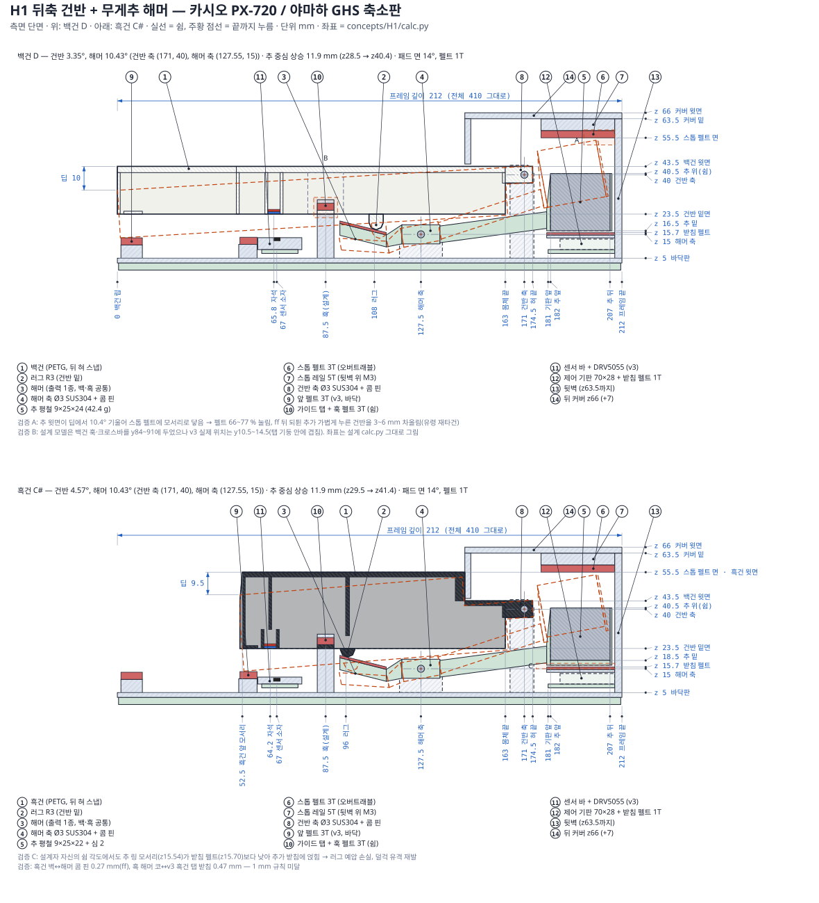</div></figure>
<h3>원리</h3><p>건반은 뒤끝(y171, z40)의 Ø3 SUS304 봉에 혀 슬롯으로 걸려 돕니다. 이 점이 v3 리프의 순간 회전 중심과 같아서 y146 앞쪽은 v3와 똑같습니다. 건반 밑의 R3 러그(백 y108, 흑 y96)가 해머 코의 14° 경사 패드(펠트 1T)를 누릅니다. 해머는 두 번째 Ø3 봉(y127.5, z15)에서 돌고, 긴 뒷팔 끝(y182~207)에 평철 9×25 조각이 있습니다(백 24 mm 42.4 g, 흑 22 mm + 출력 심 2 mm). 누르면 해머가 10.43° 돌아 추가 11.9 mm 올라갑니다. 백·흑이 같은 해머 1종을 씁니다. 세게 치면 추 윗면이 스톱 레일 밑 펠트 3T(z55.5)에 닿습니다. 손을 떼면 추가 떨어지면서 건반을 v3 훅 펠트까지 밀어 올립니다. 제어 기판은 70×28로 줄여 추 밑(y181~209)에 두고, 뒤 커버는 7 mm 높아진 z66입니다.</p>
<div class="cols"><div><h3>좋은 점</h3><ul class="proslist"><li>관성 m_eff가 93 / 95 g로 GHS급입니다. 다섯 안 중 가장 피아노답습니다.</li><li>앞/뒤 힘 비가 1.95로 v3와 같고, 백·흑 관성이 고릅니다.</li><li>y146 앞(센서·자석·앞 펠트·훅 자리)이 v3 그대로입니다.</li><li>강철이 3.7 kg로 가장 적고, 추가 비용이 약 +4.5만 원(수정 포함 +5.5~6.5만 원)으로 쌉니다.</li><li>해머 출력물 1종을 백·흑이 함께 씁니다.</li></ul></div><div><h3>아쉬운 점</h3><ul class="proslist"><li>1.5 N으로 연타하면 10.8 Hz라 목표 13.3 Hz에 못 미칩니다(약 2.1 N이 필요). 완전 복귀도 64 ms입니다.</li><li>세게 친 뒤 되튄 추가, 가볍게 누르고 있는 건반을 3~6 mm 차올려 유령 음이 날 수 있습니다.</li><li>뒤 커버가 z66으로 7 mm 높아집니다.</li><li>러그-패드 미끄럼 마찰이 불확실합니다(μ에 따라 DW 46~53 g). 패드 펠트가 눌리면 &#x27;덜걱&#x27; 유격이 돌아올 수 있습니다.</li><li>해머를 빼려면 건반 12개를 모두 빼고 봉을 뽑아야 합니다(모듈 단위 작업).</li></ul></div></div>
<h3>수치 (독립 검증값)</h3><div class="tbl"><table><thead><tr><th>항목</th><th>검증값</th></tr></thead><tbody><tr><td>다운웨이트 DW (백 y13 / 흑 y62.5)</td><td>백 47.6 g / 흑 51.0 g</td></tr><tr><td>업웨이트 UW</td><td>백 34.8 g / 흑 40.3 g (마찰 6.4 g, 패드 μ 0.15 가정)</td></tr><tr><td>유효 질량 m_eff (행정 중간)</td><td>백 93.0 g / 흑 95.1 g (백 쉼 80 → 바닥 108)</td></tr><tr><td>연타 (손가락 힘 1.5 N / 2.0 N)</td><td>백 10.8 / 12.9 Hz, 흑 11.3 / 13.7 Hz (설계 주장 12.0 / 14.4)</td></tr><tr><td>완전 복귀 (40 % 복귀까지)</td><td>백 64.4 ms (42.3) / 흑 61.1 ms (39.8)</td></tr><tr><td>앞/뒤 힘 비 F(y90)/F(y13)</td><td>1.95 (v3와 같음)</td></tr><tr><td>쉼 상태 플라스틱 최대 응력</td><td>0.53 MPa (해머 뒷팔 뿌리, 평철 압입 응력 제외)</td></tr><tr><td>뒤 커버 높이</td><td>z66 (+7 mm)</td></tr><tr><td>깊이 (프레임 / 전체)</td><td>212 / 410 mm (그대로)</td></tr><tr><td>강철</td><td>옥타브 509 g / 88건반 3.74 kg</td></tr><tr><td>자석 이동 / 바닥 간격</td><td>백 6.12 / 흑 8.46 mm, 최소 3.12 mm</td></tr><tr><td>움직이는 부품 최소 틈</td><td>0.27 mm (흑건 벽 ↔ 해머 콤 핀, ff) — 1 mm 미만 6곳</td></tr><tr><td>필라멘트 / 출력 시간 (88건반)</td><td>4.81 kg / 321 h</td></tr><tr><td>비용 증감 (v3 대비)</td><td>+45,191원 (수정하면 +1~2만 원 더)</td></tr></tbody></table></div>
<h3>고르지 않은 이유</h3><p>5위(5.73점)입니다. 보여주신 GIF와 가장 닮았고 관성 93 g로 가장 피아노답지만, 검증에서 결함이 가장 많이 나왔습니다. 모서리로만 닿는 오버트래블 스톱, 3 mm 뒷벽에 박을 수 없는 레일, ff 뒤 되튄 추가 건반을 3~6 mm 차올리는 유령 재타건, 이미 받침에 얹힌 추와 눌리는 패드 펠트 때문에 되살아나는 &#x27;덜걱&#x27; 유격이 있습니다. 또 1.5 N 연타가 10.8 Hz(목표 13.3 Hz 미달), 완전 복귀가 64 ms이고, 1 mm 미만 틈이 6곳, 커버가 z66입니다. 모두 고칠 수는 있지만 고칠 곳이 가장 많아 위험 점수가 가장 낮았습니다(3.5). W1은 추를 건반 꼬리가 들어 올리게 해서 이 문제를 피합니다. H1에서 얻은 교훈(흑연 바른 펠트 면, 강철 블록을 기계적으로 가두기, 업스톱 면 각도 맞추기)은 W1+에 옮겨 넣었습니다.</p></section><section class="page" id="p-k1" hidden><p class="eyebrow">대안 · 심사 점수 6.08</p><h2>K1 뒤축 건반 + 강철 압축 스프링 + 관성 추</h2><p class="lede">레버가 건반 하나뿐인 가장 작은 안입니다. 긴 강철 압축 스프링이 건반을 되돌리고, 건반 속 강철은 관성만 더합니다.</p><figure class="sheet"><div class="cap"><span><b>K1 측면 단면</b></span><a class="mono" href="alt/K1_side.svg" target="_blank" rel="noopener">크게 보기 ↗</a></div><div class="dwimg"></div></figure>
<h3>원리</h3><p>건반 뒤끝의 포크(y194~204, 뒤로 열린 홈 5.05 mm)가 옥타브당 1개인 Ø5 S45C 연마봉(y200, z33.5)에 걸려 돕니다. 포크 끝의 Ø5×2 자석이 봉을 당겨 앉힙니다. 프레임 바닥(z5)의 가이드 기둥에서 올라온 피아노선 압축 스프링이 건반 꼬리 속(y138)을 밀어 올립니다(백 d0.45·OD5.5·40권, 흑 OD5·75권). 백건 머리 속에는 16×16×34 사각봉(68.3 g), 흑건 앞쪽 속에는 6×19×47 평철(42.1 g)을 출력 도중에 넣어 완전히 가둡니다. 스프링 예압이 건반과 추의 무게를 함께 들어 올리므로, 누르기 시작하는 힘은 50 g이고 손끝에는 추의 관성만 남습니다. 쉼 높이는 새 위치의 훅(백 y42.5~45.5) 펠트가, 바닥은 앞 펠트가 정합니다. 커버 z59, 깊이 212 mm, v3 제어 기판 자리는 그대로입니다.</p>
<div class="cols"><div><h3>좋은 점</h3><ul class="proslist"><li>레버 1개와 스프링 1개로 부품이 가장 적고, 커버 z59와 깊이 212 mm를 지키는 가장 작은 안입니다.</li><li>앞/뒤 힘 비가 1.70으로 좋습니다.</li><li>연결부가 없어서 &#x27;덜걱&#x27; 소리의 원인이 없습니다.</li><li>필라멘트가 3.9 kg / 260 h로 가장 적습니다.</li><li>관성 m_eff가 백건 65 g입니다. 머리 속 추를 60 mm로 늘리면 약 94 g까지 가능합니다(앞 업스톱 자리와 겹치는 문제는 있음).</li></ul></div><div><h3>아쉬운 점</h3><ul class="proslist"><li>되돌리는 힘을 무게가 아니라 긴 스프링이 전부 냅니다. 사용자의 1순위(중력 복귀)와 다릅니다.</li><li>바닥으로 갈수록 힘이 오르고(백 50 → 59 g, 흑 50 → 61 g), UW 44 g라 튀는 느낌이 납니다.</li><li>흑건 관성이 37 g로 백건의 0.57배입니다.</li><li>맞춤 스프링 때문에 가장 비쌉니다(+13.8만 원, 가격 미확인). 스프링 하중 공차 ±10 %가 손끝에서 ±12.7 g가 됩니다.</li><li>흑건은 이웃 백건을 먼저 빼야 뺄 수 있습니다.</li></ul></div></div>
<h3>수치 (독립 검증값)</h3><div class="tbl"><table><thead><tr><th>항목</th><th>검증값</th></tr></thead><tbody><tr><td>다운웨이트 DW (백 y13 / 흑 y62.5)</td><td>백 50.0 g / 흑 50.2 g (바닥에서 58.8 / 61.4 g)</td></tr><tr><td>업웨이트 UW</td><td>백 43.5 g / 흑 44.6 g (마찰 3.2 g)</td></tr><tr><td>유효 질량 m_eff</td><td>앞끝 백 65.2 g / 흑 37.2 g (손가락 점 74.5 / 42.8 g)</td></tr><tr><td>연타 (150 gf로 다시 누름)</td><td>최적 타이밍 백 15.3 / 흑 21.0 Hz, 재무장 순간에 누르면 12.6 / 17.0 Hz (설계 주장 17.3 / 23.9)</td></tr><tr><td>완전 복귀 (40 % 복귀까지)</td><td>백 51.3 ms (33.2) / 흑 36.1 ms (23.7)</td></tr><tr><td>앞/뒤 힘 비 F(y90)/F(y13)</td><td>1.70</td></tr><tr><td>쉼 상태 플라스틱 최대 응력</td><td>프레임 바닥 11.5 MPa (스프링 ↔ 축 하중 고리), 건반 1.23 MPa (단차에서 2~2.5)</td></tr><tr><td>뒤 커버 높이</td><td>z59 (그대로)</td></tr><tr><td>깊이 (프레임 / 전체)</td><td>212 / 410 mm (그대로)</td></tr><tr><td>강철</td><td>옥타브 714 g / 88건반 5.27 kg, 모듈 1.28 kg</td></tr><tr><td>자석 이동 / 바닥 간격</td><td>백 6.69 / 흑 8.68 mm, 4.70 / 4.90 mm</td></tr><tr><td>움직이는 부품 최소 틈</td><td>0.67 mm (가이드 리브 ↔ 이웃 흑건 앞면), 포크가 놀면 접촉 가능</td></tr><tr><td>필라멘트 / 출력 시간 (88건반)</td><td>3.89 kg / 260 h</td></tr><tr><td>비용 증감 (v3 대비)</td><td>+138,191원 (스프링·절단 가격 미확인)</td></tr></tbody></table></div>
<h3>고르지 않은 이유</h3><p>3위(6.08점)입니다. 건반당 레버 1개와 스프링 1개로 커버 z59·깊이 212 mm를 지키는 가장 작은 안이고, 앞/뒤 비 1.7도 좋습니다. 그러나 복귀 힘을 무게가 아니라 긴 압축 스프링이 전부 내서 사용자의 1순위(중력 복귀)와 다릅니다. 힘 곡선이 50 → 59/62 g로 스프링처럼 오르고, UW 44 g는 튀는 느낌을 주며, 흑건 관성은 백건의 0.57배입니다. 검증에서는 프레임 바닥 11.5 MPa 크리프, 스프링 좌굴, 포크·핀 치수 불일치, USB 간섭, 흑건 단독 분리 불가가 나왔습니다. 맞춤 스프링 때문에 비용도 가장 큽니다(+13.8만 원, 미확인).</p></section><section class="page" id="p-f1" hidden><p class="eyebrow">대안 · 심사 점수 5.78</p><h2>F1 오버테일 카운터레버 (뒤축 건반 + 꼬리 위 무게 레버)</h2><p class="lede">건반은 맨 뒤(y205) 축으로 돌고, 이름판 커버 밑 빈 공간의 무게 레버가 코로 건반 윗판을 밀어 올립니다. 느낌 숫자가 가장 좋은 안입니다.</p><figure class="sheet"><div class="cap"><span><b>F1 측면 단면</b></span><a class="mono" href="alt/F1_side.svg" target="_blank" rel="noopener">크게 보기 ↗</a></div><div class="dwimg">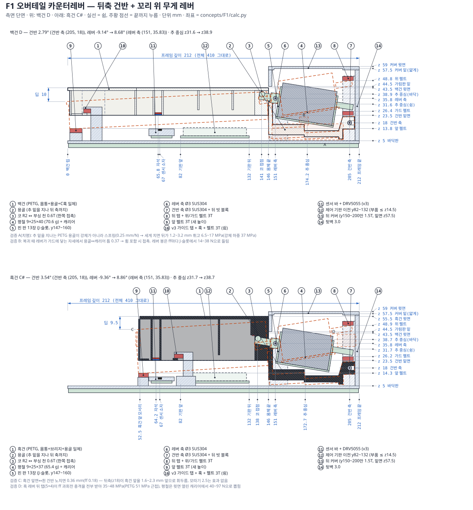</div></figure>
<h3>원리</h3><p>건반은 뒤끝 C훅이 Ø3 강철봉(y205, z18)에 걸려 도는 강체입니다. 보이는 부분 바로 뒤(y151~196), 이름판 커버 밑에 건반마다 무게 레버가 하나씩 있습니다. 레버는 Ø3 봉(y151, z35.8)에서 돌고, 짧은 앞 코(R2)가 건반 속으로 들어가 윗판 밑 부싱 천 0.6T를 아래에서 밉니다. 뒤쪽 캐리어에는 평철 9×25가 실립니다(백 40 mm 70.6 g, 흑 37 mm 65.4 g). 누르면 코가 눌려 평철 중심이 약 7.3 mm 오르고, 손을 떼면 평철이 떨어지면서 건반을 v3 훅까지 밀어 올립니다. 레버 뒤 탭은 뒤 빗 블록 포켓 안에서 위 펠트(과회전 멈춤)와 가드 펠트(복귀 착지) 사이를 움직입니다. 건반 몸통 밑의 얇은 PETG 용골이 추 밑을 지나 뒤 축까지 이어집니다. 제어 기판은 y82~132로 옮깁니다. 건반 높이, 딥, 커버 z59, 깊이 212 mm는 그대로입니다.</p>
<div class="cols"><div><h3>좋은 점</h3><ul class="proslist"><li>느낌 숫자가 가장 좋습니다. 앞/뒤 비 1.67, m_eff 71 / 67 g로 백·흑이 고릅니다.</li><li>연타는 다시 누르는 시간까지 넣어 약 21 Hz, 완전 복귀는 58 / 56 ms입니다.</li><li>복귀 힘의 100 %가 중력이고 스프링이 없습니다.</li><li>건반 높이 z43.5, 딥 10 / 9.5, 커버 z59, 깊이 212 mm를 지킵니다.</li><li>건반과 레버는 무게로 눌린 한쪽 접촉이라 평소 유격이 0입니다.</li></ul></div><div><h3>아쉬운 점</h3><ul class="proslist"><li>추 밑을 지나는 가는 PETG 용골이 사실상 스프링입니다(0.25 mm/N). 세게 칠 때마다 17~37 MPa를 받아 강철 보강이 필요합니다.</li><li>흑건 레버 뒤 탭이 35~48 MPa를 받아 PETG 강도 51 MPa에 가깝습니다.</li><li>제어 기판을 옮겨 저높이로 다시 만들어야 하는데, 그림대로는 USB 경로가 없습니다.</li><li>건반 하나를 빼려면 레버 세트(약 840 g)부터 들어내야 합니다.</li><li>고칠 것(강철 용골, 핀, 스톱 보강)을 모두 넣으면 부품 수가 가장 많아집니다.</li></ul></div></div>
<h3>수치 (독립 검증값)</h3><div class="tbl"><table><thead><tr><th>항목</th><th>검증값</th></tr></thead><tbody><tr><td>다운웨이트 DW (백 y13 / 흑 y62.5)</td><td>백 53.5 g / 흑 49.5 g (축 μ 0.3 이상이면 약 57 g)</td></tr><tr><td>업웨이트 UW</td><td>백 38.2 g / 흑 38.7 g (마찰 7.7 g)</td></tr><tr><td>유효 질량 m_eff (행정 중간)</td><td>백 71.4 g / 흑 67.3 g</td></tr><tr><td>연타 (40 % 복귀 + 다시 누름)</td><td>백 20.6 Hz / 흑 21.4 Hz (설계 주장 1/t40 = 27.6 / 28.5)</td></tr><tr><td>완전 복귀 (40 % 복귀까지)</td><td>백 57.7 ms (36.1) / 흑 55.7 ms (35.0)</td></tr><tr><td>앞/뒤 힘 비 F(y90)/F(y13)</td><td>1.67 (흑 y90/y62.5 1.24)</td></tr><tr><td>쉼 상태 플라스틱 최대 응력</td><td>1.46 MPa (쉼, 용골 y149). 타건 중 용골 6.5~17 MPa (강체 하중이면 최대 37)</td></tr><tr><td>뒤 커버 높이</td><td>z59 그대로 (y150~200만 윗판 1.5T, 밑면 z57.5), 레버 최고점 z56.4 (ff)</td></tr><tr><td>깊이 (프레임 / 전체)</td><td>212 / 410 mm (그대로)</td></tr><tr><td>강철</td><td>옥타브 821 g / 88건반 6.03 kg, 모듈 약 1.45 kg</td></tr><tr><td>자석 이동 / 바닥 간격</td><td>백 6.78 / 흑 8.72 mm, 4.04 / 4.63 mm (기계적 틈 3.01)</td></tr><tr><td>움직이는 부품 최소 틈</td><td>0 mm (용골 ↔ 캐리어, 휨 포함 시 접촉), 흑건 앞 ↔ 흰 노치 0.36 mm</td></tr><tr><td>필라멘트 / 출력 시간 (악기 전체)</td><td>5.25 kg / 350 h</td></tr><tr><td>비용 증감 (v3 대비)</td><td>+80,200원 (검증: 수정 포함 +3~6만 원 더)</td></tr></tbody></table></div>
<h3>고르지 않은 이유</h3><p>4위(5.78점)입니다. 느낌 숫자는 가장 좋습니다(앞/뒤 비 1.67, m_eff 71/67 g, 약 21 Hz, 완전 복귀 58 ms, 커버 z59). 그러나 무게 레버 밑을 지나는 가는 PETG 용골이 실제로는 스프링이라 세게 칠 때마다 17~37 MPa(치명)를 받고, 흑건 뒤 탭은 35~48 MPa로 PETG 강도에 가깝습니다. 복귀 때 용골이 레버와 닿고, 레버 봉이 J-슬롯에서 들리며, 흑건 앞 틈은 0.36 mm입니다. 제어 기판을 옮겨 저높이로 다시 만들어야 하는데 USB 경로가 없고, 건반 하나를 빼려면 레버 세트를 먼저 들어내야 합니다. 강철 용골 보강까지 넣으면 부품이 가장 많아져 내구성·단순성·위험 점수가 낮았습니다.</p></section></main>
<footer><div class="wrap">모든 수치는 4차 좌표 모델(model_v4.py)과 독립 검증에서 나왔습니다. 3차 진행 현황은 별도 아티팩트에 그대로 있습니다.</div></footer>
<script>(function(){const pages=[...document.querySelectorAll('.page')];const links=[...document.querySelectorAll('nav.tabs a')];
function show(){let raw=(location.hash||'#overview').slice(1);let id=raw.toLowerCase(),anchor=null;
if(!document.getElementById('p-'+id)){const el=document.getElementById(raw);const pg=el&&el.closest('.page');if(pg){id=pg.id.slice(2);anchor=el}else id='overview';}
pages.forEach(p=>{p.hidden=(p.id!=='p-'+id)});links.forEach(a=>{if(a.dataset.to===id)a.setAttribute('aria-current','page');else a.removeAttribute('aria-current');});
if(anchor)anchor.scrollIntoView();else window.scrollTo(0,0);}
window.addEventListener('hashchange',show);show();})();</script>